오늘의 arXiv Top 15
2026-09-09 (수) ·
cs.CV / cs.LG / cs.RO / cs.CL / cs.AI New submissions 전수 평가
cross-list · replacement 제외, 중복 병합 · Top 15은 원문까지 읽고 정리
1차 스크리닝 1041편 (Claude (scheduled agent)) → Top 15 PDF 정밀 리뷰 (Claude (scheduled agent))
Proxy Policy Steering
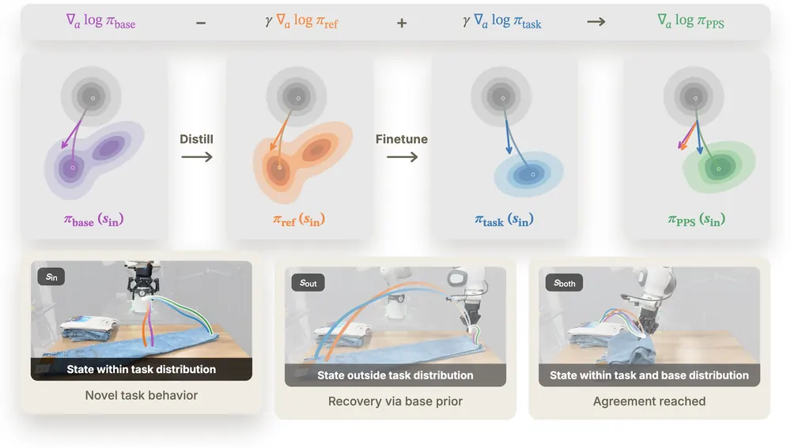
GE-Act 2.0: Pretraining and Scaling a World-Action Model for Robotic Manipulation
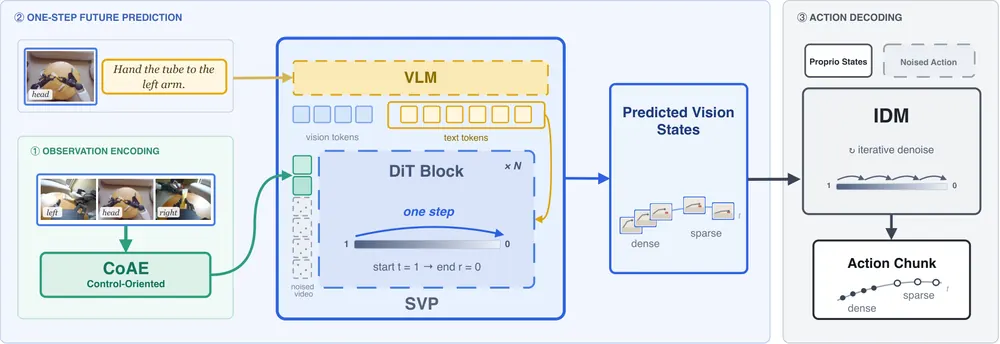
ARC-Bench: Closed-Loop Replanning Masks Broken Action Ranking in Frozen JEPA World Models
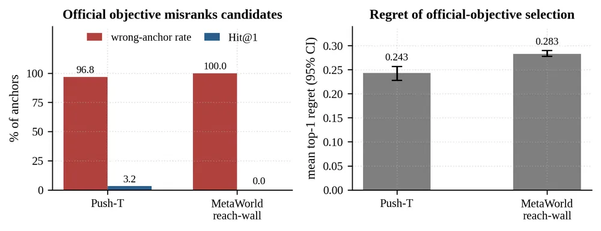
SimpleMemVLA: A Simple but Effective Native-Video Memory for Vision-Language-Action Models
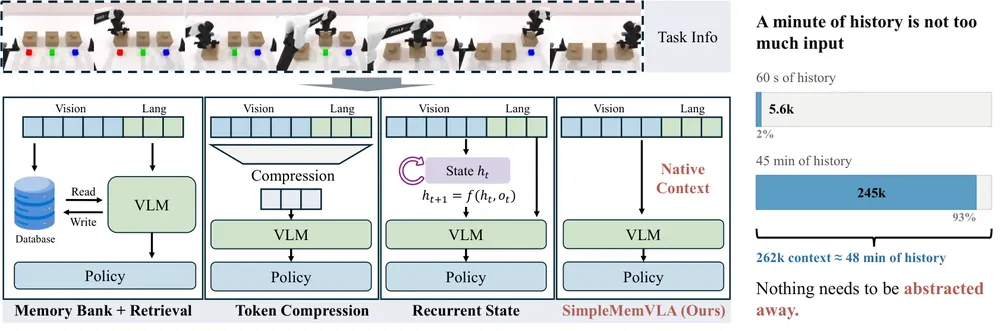
Where Success Breaks: Failure-Boundary Learning for Robust Vision-Language-Action Models
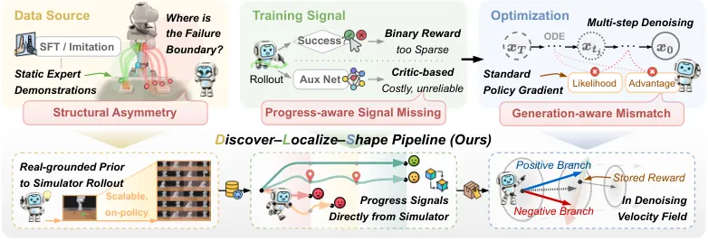
A4A: Cross-Embodiment Transfer of Action-Oriented 4D Affordances from Human Demonstrations
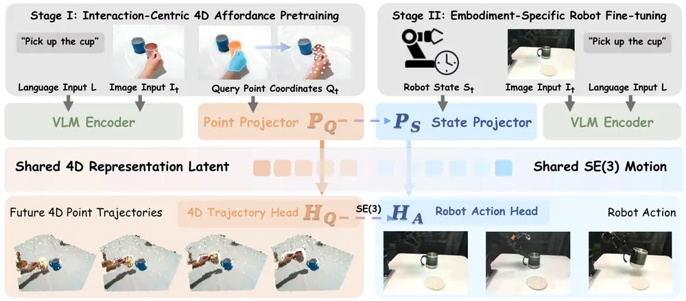
OpenWAM: An Open, Modular Exploration Towards Systematic World-Action Model Pretraining
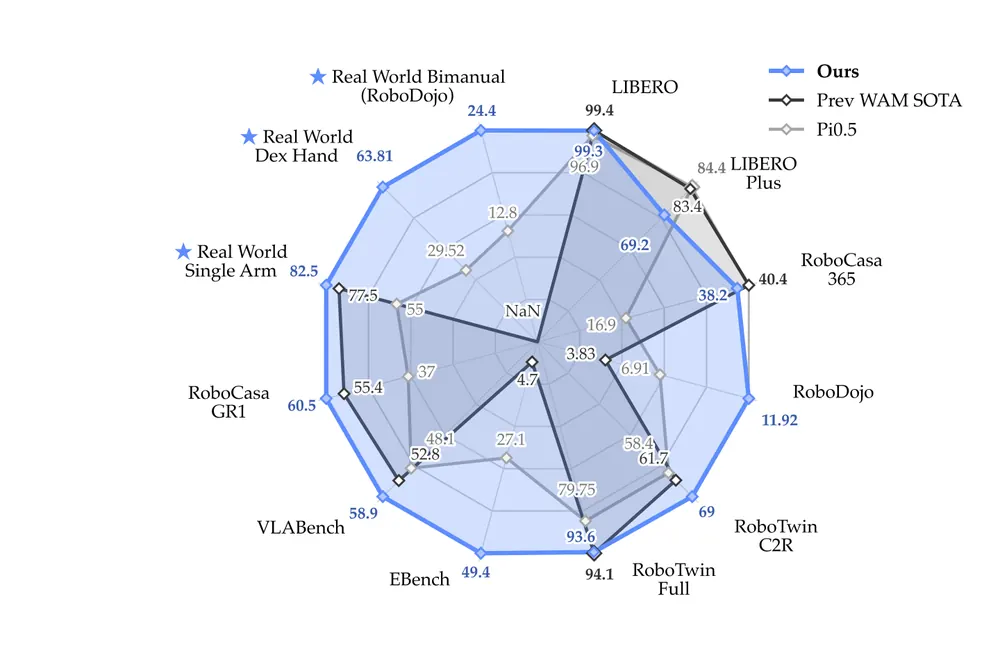
SyncWorld: Visual Calibration Enables World Models as Zero-Shot Simulators
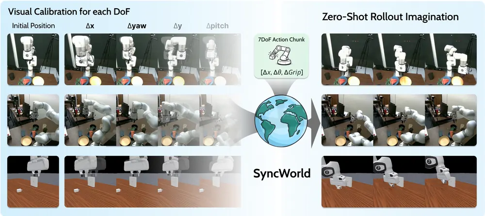
How to Learn from What a Human Would Avoid? Intervention-Aware World Models with Real-World RL for Dexterous Manipulation
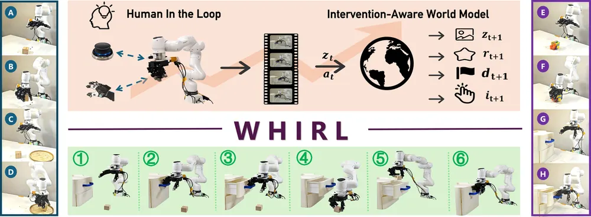
CST-WM: A Causally Structured World Model for Embodied Visual Tracking
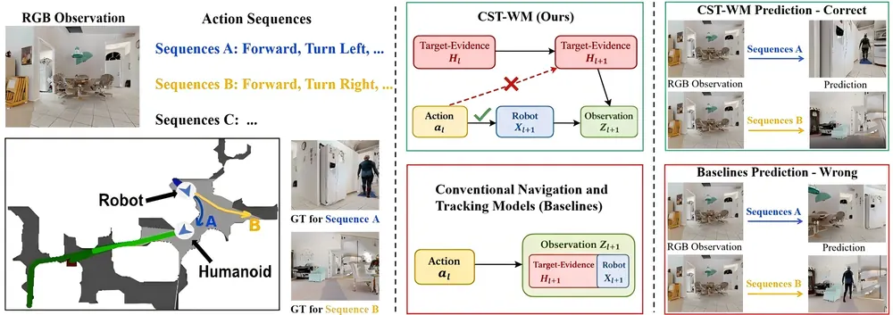
FRAME: Factored Retrieval via Attribute Readouts for Object-Centric Scene Memory
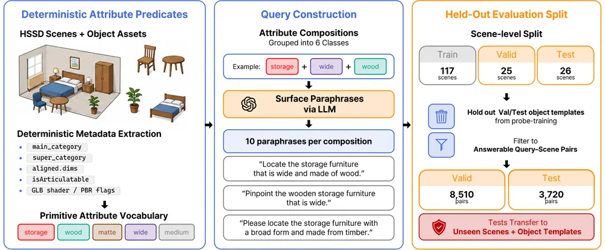
LayerRoute: Action-Conditioned Mixture-of-Layers Routing for Vision-Language-Action Policies
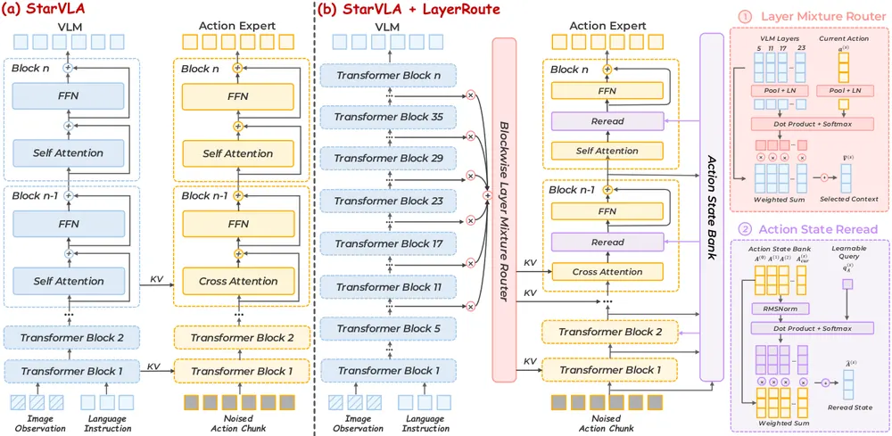
WorldAgen: Unified State-Action Prediction with Test-Time World Model Training
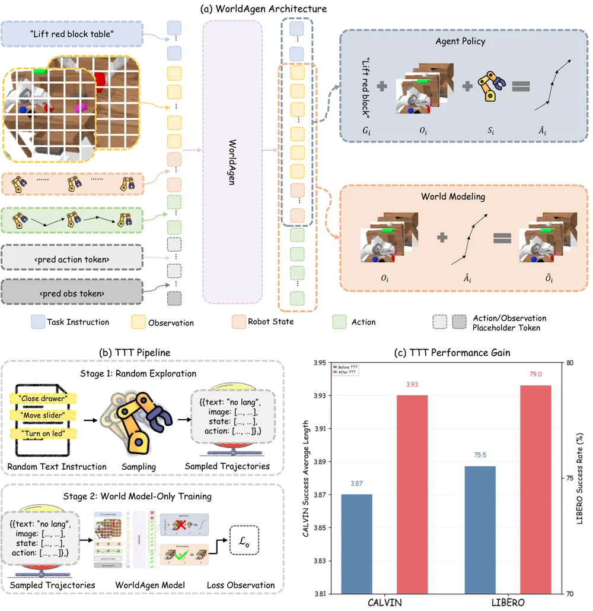
MobileVLA-R1 2.0: RL-Enhanced Reasoning for Mobile Robot Control
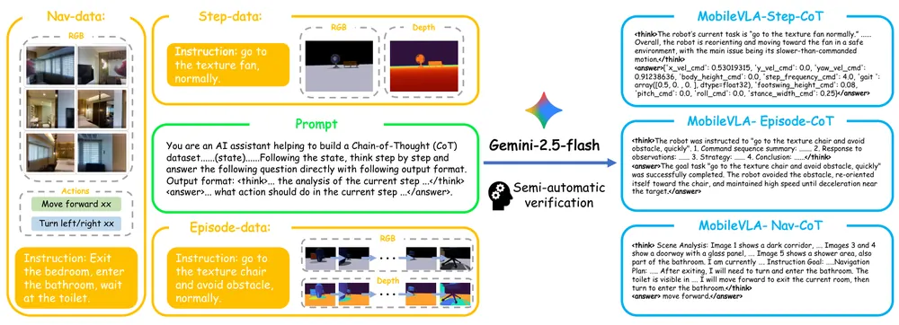
Learning Counterfactual World Models for Embodied Reasoning under Partial Observability
오늘의 핵심 연구 트렌드 종합
- World-action model(WAM) 사전학습의 체계화 — GE-Act 2.0, OpenWAM, WorldAgen이 모두 state-action 예측을 하나의 backbone에 합치는 구조를 다룸. 개별 아키텍처 성능 경쟁보다, 어떤 설계 요소(encoder, attention mask, 학습 데이터 규모)가 실제로 기여하는지를 통제 실험으로 분리하는 쪽으로 관심이 옮겨감.
- Latent world model의 신뢰성 감사와 인과 구조화 — ARC-Bench는 frozen JEPA world model의 action ranking이 공식 체크포인트에서부터 깨져 있음을 감사로 밝힘. CST-WM과 Counterfactual World Models는 action이 latent의 엉뚱한 부분으로 새는 것을 architecture나 loss로 막음. world model을 새로 만드는 것 못지않게 기존 world model이 실제로 의도대로 작동하는지 검증하는 연구가 늘어남.
- Base 정책을 건드리지 않는 inference-time 적응 — Proxy Policy Steering은 velocity 잔차만 더해 frozen VLA를 유도하고, WorldAgen은 world model head만 LoRA로 test-time training함. 두 논문 모두 fine-tuning이 무너뜨리는 base 정책의 기존 능력(failure recovery 등)을 보존하는 것을 목표로 삼음. SyncWorld는 별도 학습 없이 in-context calibration episode만으로 world model을 새 embodiment에 맞춤.
- 실패를 이분법이 아닌 국소화 가능한 신호로 다루는 흐름 — Where Success Breaks(DLS)는 phase 단위 progress reward로 실패 지점을 국소화하고, WHIRL은 사람의 개입 확률을 forward risk 신호로 재사용함. 실패를 사후 라벨이 아니라 학습 중 예측 가능한 신호로 바꾸려는 시도가 공통됨.
- Robot memory에서 압축 대신 구조를 바꾸는 접근 — SimpleMemVLA는 history를 압축·검색하지 않고 통째로 넣어 read-time에 선택하게 하고, FRAME은 질의를 속성별로 나눠 scene memory에서 미리 계산해둔 attribute score로 검색함. 저장 시점에 무엇을 버릴지 미리 정하지 않는다는 점이 공통 원칙임.
- 인간 시연에서 로봇으로의 4D 전이 — A4A는 조작 대상의 미래 3D 점 궤적을 인간 영상에서 뽑아 5개 VLA 계열에 공통 사전학습 신호로 씀. 정적 affordance(어디서 상호작용할지)에서 시간에 따른 궤적(어떻게 움직일지)으로 표현이 확장되는 흐름임.
유망 연구 방향 및 프로젝트 제안
Latent world model의 action-rankability 감사를 우리 파이프라인에 이식 - research question: 우리 lab이 쓰거나 개발 중인 latent world model이 closed-loop success rate와 무관하게 fixed-candidate action ranking 자체는 정확한가? - 접근·novelty: ARC-Bench의 top-1 regret·Hit@k·Spearman·strong-Mirage rate(순위는 틀렸는데 confidence는 높은 비율) 지표를 우리 manipulation task에 이식하고, replan interval을 바꿔가며 masking 여부를 확인함. - 왜 지금·경쟁 prior works: ARC-Bench는 감사만 하고 수정 방법은 제안하지 않음 — 감사 결과를 바탕으로 실제 fix까지 제안하면 직접적인 후속 연구가 됨. - risk·target venue: 우리 world model이 이미 문제없다면 negative result에 그칠 위험임. CoRL 또는 RSS.
대형 pretrained VLA encoder의 counterfactual collapse 진단 - research question: OpenVLA, π0 같은 대형 pretrained encoder가 관찰은 비슷하지만 결과가 다른 개입을 구분하지 못하는 counterfactual collapse를 겪는가? - 접근·novelty: Counterfactual World Models의 CFS(counterfactual fidelity score) 진단을 우리 VLA backbone에 적용하고, 실제 조작 실패율과의 상관을 봄. - 왜 지금·경쟁 prior works: 저자들이 논문에서 이 실험을 명시적으로 하지 않았다고 밝힌 gap임. - risk·target venue: 개입-결과 라벨을 실로봇 데이터에서 얻는 비용이 큼. CoRL 또는 ICLR.
Velocity-residual 기반 counterfactual failure diagnosis - research question: task/reference proxy 쌍의 velocity 잔차 크기를 "정상 상태였다면"과의 괴리로 해석해, 실패 직전 상태를 조기에 탐지할 수 있는가? - 접근·novelty: Proxy Policy Steering의 구조를 adaptation이 아니라 diagnosis 목적으로 재구성 — reference proxy는 정상 조건, task proxy는 현재 rollout 조건으로 학습하고 잔차 크기를 failure trigger로 씀. - 왜 지금·경쟁 prior works: 원 논문은 정책 유도가 목적이고 진단 용도로는 검증되지 않음 — formulation 자체가 새로움. - risk·target venue: "정상 상태" reference distribution을 어떻게 정의할지가 핵심 난제임. CoRL 또는 RSS.
World model 예측 상태로 실환경 phase-progress reward 구성 - research question: DLS의 SPL(simulator privileged state로 rollout 진행 단계를 나눠 단계별 progress를 매기는 phase-aware reward 설계)이 요구하는 privileged state를, object-centric 3DGS·scene graph 기반 실환경 reconstruction으로 대체해도 동일한 reward를 만들 수 있는가? - 접근·novelty: world model rollout으로 TCP-object pose·goal predicate에 해당하는 상태를 추정하고, 이를 DLS의 push-pull velocity shaping에 그대로 연결함. - 왜 지금·경쟁 prior works: DLS는 digital twin 없이는 SPL을 못 쓴다는 한계를 스스로 남김 — 실환경 확장은 직접적인 gap. - risk·target venue: world model 예측 오차가 reward 오차로 그대로 전파될 위험임. CoRL.
Native-context robot memory와 counterfactual world model rollout 결합 - research question: SimpleMemVLA식으로 압축 없이 보존한 history를 world model의 counterfactual rollout과 결합하면, occlusion 이후 실패 원인(어느 시점의 어떤 상태가 실패를 만들었는지)을 더 정확히 추적할 수 있는가? - 접근·novelty: history video를 world model의 조건으로 넣어 여러 counterfactual future를 생성하고, 실제 관측과 비교해 실패 원인이 되는 시점을 역추적함. - 왜 지금·경쟁 prior works: SimpleMemVLA는 architecture 검증에 그치고 world model과의 결합은 다루지 않음. - risk·target venue: 긴 history에 대한 world model rollout 비용이 큼. CoRL 또는 NeurIPS.
오늘 반드시 읽어야 할 논문
- Proxy Policy Steering — frozen VLA를 건드리지 않고 velocity 잔차만으로 유도함. π0.5 성공률을 평균 53%p 올리면서 base의 failure recovery 능력은 그대로 보존함.
- GE-Act 2.0 — world-action model을 조작 데이터로 처음부터 학습하고 co-training 데이터를 300시간에서 30,000시간으로 늘림. zero-shot OOD 성공률을 G1-OP 기준 17.1%에서 44.1%로 올림.
- ARC-Bench — 공식 배포된 JEPA world model 체크포인트에서 action ranking이 구조적으로 깨져 있고, 빈번한 closed-loop replanning이 이 결함을 가려왔음을 정량 감사로 처음 밝힘.
- SimpleMemVLA — history를 압축·검색하지 않고 통째로 넣는 것만으로 네 개 memory benchmark에서 retrieval·compression 방식을 크게 이겨, memory 압축이 오히려 성능을 깎는다는 것을 통제 실험으로 보임.
- Where Success Breaks(DLS) — digital twin의 privileged state로 실패 지점을 phase 단위로 국소화하고 critic·likelihood 없이 velocity field를 push-pull해, unseen 조건에서 SFT·GRPO·PPO 대비 성공률 향상폭이 더 커짐.
- A4A — 인간 시연 영상에서 뽑은 조작 대상의 미래 3D 점 궤적으로 5개 VLA 계열을 사전학습해, 동일 아키텍처 통제 비교에서 RLBench 평균 성공률을 41.0%에서 60.0%로 올림.
- SyncWorld — 6-DoF calibration episode를 in-context로 넣어 카메라·embodiment가 바뀌어도 추가 학습 없이 world model을 zero-shot simulator로 씀.
- OpenWAM — world-action model의 encoder·backbone·attention mask 설계공간을 통제 실험으로 분해해, 개별 시스템 논문들이 answer하지 못했던 "무엇이 성능을 만드는가"를 인프라 수준에서 규명함.
전체 1차 스크리닝 결과 (1041편, 점수순) 펼치기
| # | 제목 | 점수 | 🤖 | 분야 | 한 줄 근거 |
|---|---|---|---|---|---|
| 1 | ARC-Bench: Closed-Loop Replanning Masks Broken Action Ranking in Frozen JEPA World Models | 80 | 9 | World Model | frozen JEPA world model이 latent distance로 action을 순위 매길 때 실제로는 거의 항상 틀림을 공개 체크포인트에서 직접 검증함. closed-loop replanning이 이 결함을 가려왔다는 점까지 밝혀 world model 기반 planning 전반에 중요한 경고를 줌. navigation과 manipulation 양쪽에서 확인했고 V-JEPA 1/2, DINOv2 백본 교체로도 재현됨. |
| 2 | SyncWorld: Visual Calibration Enables World Models as Zero-Shot Simulators | 80 | 8 | World Model | visual calibration episode로 action-visual mapping을 in-context로 특정해 unseen 환경에서 zero-shot 시뮬레이터로 쓰는 world model SyncWorld임. test-time policy improvement까지 보여 world model·test-time optimization 우선 주제에 정확히 부합함. |
| 3 | GE-Act 2.0: Pretraining and Scaling a World-Action Model for Robotic Manipulation | 78 | 10 | World Model | world-action model을 처음부터 학습해 6400시간 규모로 스케일링한 연구임. 데이터량 증가에 비례해 조작 성공률이 크게 오르고 cross-embodiment 전이도 확인됨. |
| 4 | Learning Counterfactual World Models for Embodied Reasoning under Partial Observability | 78 | 8 | World Model | 지각적으로 비슷해 보여도 개입 결과가 다른 futures를 구분 못 하는 counterfactual collapse 문제를 정의하고, contrastive counterfactual objective로 해결한 world model을 제안함. 가려진 조작, aliased navigation, long-horizon manipulation에서 planning 성공률을 크게 올림(예: Occluded Push 65.1%→74.6%). failure detection·counterfactual reasoning 우선 주제와 직접 맞닿아 있고, representation-agnostic 진단 지표까지 제공함. |
| 5 | FRAME: Factored Retrieval via Attribute Readouts for Object-Centric Scene Memory | 76 | 8 | Embodied AI | 물체 속성(카테고리/재질/크기/표면)을 쿼리해 언어로 검색하는 attribute-compositional scene memory FRAME을 제안함. object-centric robot memory 우선 주제에 정확히 부합하고 평가 프로토콜도 잘 통제됨. |
| 6 | WorldAgen: Unified State-Action Prediction with Test-Time World Model Training | 76 | 8 | VLA | world model head와 action head를 공유 backbone에 결합하고 배포 시 test-time training으로 world model을 갱신하는 VLA 프레임워크임. CALVIN·LIBERO에서 baseline과 대등하거나 우세하고, 소량 샘플의 TTT만으로 새 환경에서 SOTA를 넘어섬. test-time optimization과 world model 우선 주제에 직접 부합함. |
| 7 | OpenWAM: An Open, Modular Exploration Towards Systematic World-Action Model Pretraining | 75 | 10 | World Model | world-action model의 설계공간을 체계적으로 분해해 어떤 요소가 성능에 기여하는지 규명한 오픈 연구 스택임. 6400시간 데이터로 사전학습한 모델이 시뮬레이션과 실로봇 전반에서 최상위 성능을 유지함. |
| 8 | How to Learn from What a Human Would Avoid? Intervention-Aware World Models with Real-World RL for Dexterous Manipulation | 72 | 10 | World Model | 사람의 개입 결정 자체를 예측 신호로 바꿔 위험을 회피하는 world model 기반 안전인지 RL임. LEAP Hand 실로봇에서 개입 부담을 84% 줄이면서 성공률도 높임. |
| 9 | CST-WM: A Causally Structured World Model for Embodied Visual Tracking | 72 | 9 | World Model | CST-WM은 embodied visual tracking에서 action이 target evidence에 직접 영향을 준다고 착각하는 causal hallucination을 latent state를 target-evidence/robot/observation branch로 분리해 차단함. world model과 counterfactual reasoning 우선순위에 정확히 부합하고 EVT-Bench·Habitat 3.0에서 재획득 성능까지 검증함 |
| 10 | LayerRoute: Action-Conditioned Mixture-of-Layers Routing for Vision-Language-Action Policies | 72 | 8 | VLA | VLA policy가 VLM 레이어별 표현과 이전 action 표현을 고정 할당 대신 동적으로 라우팅하도록 만든 방법임. StarVLA-π와 π0.5에 적용해 LIBERO Long에서 최대 7.2점 개선했고 추가 파라미터는 0.31~3.87%에 불과함. VLA priority 주제에 직접 해당함. |
| 11 | Proxy Policy Steering | 70 | 10 | VLA | 기반 정책을 고정한 채 velocity space 잔차로 새 태스크를 유도하는 test-time 적응 방법임. pi0.5 대비 절대 성공률을 53%p 향상시키면서 기존 강건성도 보존함. |
| 12 | SimpleMemVLA: A Simple but Effective Native-Video Memory for Vision-Language-Action Models | 70 | 9 | VLA | SimpleMemVLA는 별도 memory module 없이 timestamped video 전체를 그대로 backbone에 넣어 long-horizon manipulation을 푸는 방법임. retrieval/compression/recurrent memory를 모두 능가하고 causal intervention으로 정책이 실제 history를 읽는다는 것도 검증함. robot memory와 VLA 우선순위 주제에 정확히 부합함 |
| 13 | MobileVLA-R1 2.0: RL-Enhanced Reasoning for Mobile Robot Control | 68 | 9 | VLA | MobileVLA-R1 2.0은 CoT 정렬과 RL로 reasoning-to-action consistency를 높인 VLA를 이동로봇 locomotion·manipulation에 적용함. VLN-CE·quadruped·humanoid(G1) 실로봇 실험까지 포함해 VLA 우선순위 주제에 정확히 부합함 |
| 14 | A4A: Cross-Embodiment Transfer of Action-Oriented 4D Affordances from Human Demonstrations | 68 | 9 | Manipulation | 인간 시연에서 미래 궤적 형태의 4D affordance를 추출해 로봇 정책 사전학습에 쓰는 새 표현임. 여러 VLA 정책에서 일관된 성능 향상을 보임. |
| 15 | Where Success Breaks: Failure-Boundary Learning for Robust Vision-Language-Action Models | 68 | 9 | VLA | VLA의 강건성을 성공 시연이 아닌 실패 경계 학습 문제로 재정의한 연구임. on-policy digital twin으로 실패 경계를 발견하고 실로봇에서 검증함. |
| 16 | PhysMAS: Physics-Grounded Multi-Agent Synthesis of Compositional 4D Gaussians | 68 | 6 | 3D Vision | 물체 파트별 재질을 multi-agent가 추론해 Material Point Method에 바인딩하고 실행 가능성까지 검증하는 4D Gaussian 합성 프레임워크임. 여러 파트·다중 물체가 상호작용하는 장면까지 다뤄 SDS 기반 기존 물리 4DGS보다 빠르고 정합적임. object-centric 4D representation·3DGS 우선 주제에 직접 해당하나 실로봇 검증은 없음. |
| 17 | World Models Under Asynchronous Sensor Observations | 66 | 7 | World Model | 물리 센서가 비동기로 들어올 때 zero-order-hold와 staleness/time-to-refresh feature를 world model에 제공하는 방법을 제안함. locomotion open-loop rollout, MPC closed-loop planning, latched-actuator 시스템 세 영역에서 검증했고, refresh 이벤트가 시스템에 실제 영향을 줄 때만 유용하다는 조건을 명확히 함. real sensor 환경 world model이라는 실용적 문제를 다뤄 로보틱스에 직접 참고 가능함. |
| 18 | CLAMP: Constrained Decoding for Vision-Language Embodied Planning | 66 | 7 | Embodied AI | 장면에서 관측된 물체로만 참조를 제한하고 HMM 기반 world-state lookahead로 action precondition·목표 도달성을 반영해 VLM decoding 자체를 제약하는 embodied planning 방법임. VLABench·SafeAgentBench·TaPA에서 grounding과 안전성을 개선했고, 남은 실패 대부분이 인지 오류나 제약 명세 불일치임을 분석함. embodied spatial reasoning과 VLA planning 우선 주제에 직접 해당함. |
| 19 | FIRE3D: Feed-forward Interactive 3D Scene Reconstruction Within A Minute | 66 | 6 | 3D Vision | 단일 이미지/영상에서 1분 내로 시뮬레이션 가능한 compositional 3D scene을 feed-forward로 생성함. object-level 완전성과 물리적 분리가 강점이라 로봇 시뮬레이션 자산 구축에 바로 쓸 만함. |
| 20 | Learning to Use Imagination: Progress-Conditioned Future Utilization for World Action Models | 65 | 9 | World Model | ProWAM은 world action model에서 상상된 미래의 유용성이 실행 진행 단계마다 다르다는 점을 실험적으로 밝히고 이를 progress encoder와 계층적 modulation으로 명시적으로 반영함. World model과 VLA 우선순위에 정확히 부합하는 새로운 formulation임 |
| 21 | WM-Craftnet: World Synesthesia Model for Generalizable and Robust Dexterous In-Hand Manipulation | 65 | 9 | World Model | 시각·촉각·자기수용감각을 결합한 world model을 정책의 recurrent 컨텍스트로 쓰는 손내 조작 프레임워크임. depth denoising과 촉각 단서가 미지 물체·교란 회복에 기여함을 검증함. |
| 22 | DeCAL: Towards Physically-Grounded Dexterous Vision-Language-Action Models via Contact-Aware Latent Co-Imagination | 65 | 9 | VLA | MoT 구조로 촉각과 시각을 상황에 맞게 융합하고 물리적 imagination까지 결합한 dexterous VLA임. 접촉이 많은 조작에서 최고 성능을 달성함. |
| 23 | Task-driven Processing with Coarse-to-Fine Glimpse-based Active Perception | 64 | 5 | CV | 태스크 조건에 따라 coarse-to-fine glimpse로 고해상도 영역만 골라 보는 active perception 프론트엔드 CF-GAP임. active perception/NBV 우선 주제에 부합하나 2D 인스턴스 탐지에 국한되고 실로봇 검증은 없음. |
| 24 | GloVLA: Let Geometry Move and Local VLA Interact for Robust Object-Centric Manipulation in Unstructured Environments | 62 | 9 | VLA | 장거리 이동과 단거리 접촉조작을 분리해 VLA 실패를 줄이는 하이브리드 프레임워크임. LIBERO와 실로봇 UR10e에서 성공률과 추론속도를 동시에 개선함. |
| 25 | VLA-Corrector: Stage-Aware Observable State Understanding for Prompt-Based Closed-Loop Recovery of Vision-Language-Action Policies | 62 | 9 | VLA | 관측 가능한 이력만으로 VLA 실행 단계를 추론해 실패 시 복구 프롬프트를 생성하는 프레임워크임. 특권 정보 없이도 특권 검증기에 근접한 성능을 보임. |
| 26 | ContextFlow: In-Context Flow Matching for Robot Manipulation | 62 | 9 | Manipulation | 시연을 조건으로 하는 flow matching 기반 in-context 모방학습임. LIBERO 미학습 태스크에서 ICRT 대비 크게 개선되고 파인튜닝 없이 pi0 수준에 근접함. |
| 27 | Dex-X: Learning Visual-Tactile Dexterous Manipulation From Human Videos with Simulated Interaction | 62 | 9 | Manipulation | 인간 비디오에서 물리 시뮬레이션으로 촉각 정보를 복원해 시각-촉각 조작 정책을 학습하는 프레임워크임. 로봇 데이터 수집 없이 실로봇 zero-shot 전이를 달성함. |
| 28 | CALIPER: Clean Scenes Cannot Rank Physical Inference in Pretrained Visual Representations | 62 | 8 | World Model | 깨끗한 고정 카메라 장면에서는 물리 추론 능력을 평가할 수 없음을 실증한 벤치마크 방법론 논문임. world model 시각 인코더의 물리 이해를 제대로 측정하려면 카메라·조명·클러터를 다양화해야 함을 보임. |
| 29 | Point4D: Long-range 4D Motion Reconstruction | 62 | 5 | 3D Vision | 수백 프레임 장기 영상에서 dense per-point 3D trajectory를 feed-forward로 추정하는 Point4D임. object-centric 4D representation 우선 주제에 해당하나 로봇 조작 실험은 없음. |
| 30 | CR-VLA-Force: Learning Control-aware Compliance VLA Model for Robust Contact-rich Robotic Manipulation | 60 | 9 | VLA | 힘/토크 센서를 결합해 접촉이 많은 조작에서 실시간 순응 제어를 구현한 VLA임. MoE 구조와 적응형 컴플라이언스 컨트롤러 조합을 실로봇에서 검증함. |
| 31 | ICI-VLA: In-Context Imitation with Spatiotemporally Aligned Demonstrations for Vision-Language-Action Models | 60 | 9 | VLA | 검색된 시연을 test-time에 조건으로 활용하는 in-context VLA임. RoboTwin 2.0에서 기존 최고 대비 19.3%p 향상을 보임. |
| 32 | Prior-free relative 6D pose estimation of multiple object instances | 60 | 6 | 3D Vision | CAD나 참조 이미지 없이 같은 물체 여러 인스턴스 간 상대 6D pose를 training-free로 추정하는 PROSE를 제안함. 매니퓰레이션의 pose estimation 파이프라인에 바로 응용 가능함. |
| 33 | MEMOBench: A Process Level Memory Benchmark for Robotic Manipulation | 58 | 9 | Manipulation | 로봇 조작에서 메모리 저장·갱신·압축을 과정 단위로 평가하는 벤치마크임. 기존 메모리 모듈들이 저장은 잘하지만 갱신·압축에 약함을 드러냄. |
| 34 | GIFT: Goal-Injected Fine-Tuning for Efficient Manipulation Policy Adaptation | 58 | 8 | VLA | GIFT는 목표 이미지를 zero-initialized convolution으로 점진적으로 주입해 기존 VLA를 가볍게 fine-tuning하는 방법임. SIMPLER·LIBERO에서 단일 epoch만으로 유의미한 성공률 개선을 보여 manipulation policy 개선에 실용적임 |
| 35 | RefGuard: Identity-Aware Language-Guided Robot Manipulation via Joint Target-Anchor-Frame Grounding | 58 | 8 | VLA | 대상·기준·기준좌표를 동시에 추론해 identity switch를 방지하는 언어 기반 조작 프레임워크임. 실로봇에서 기존 VLA·LLM 대비 오류를 크게 줄임. |
| 36 | MemCorr-DP: Counterfactual Correspondence Conditioning for a Diffusion Policy Guided by a Reference | 58 | 8 | Manipulation | 참조 궤적과 현재 장면의 3D 대응관계를 diffusion policy에 명시적으로 조건화하는 방법임. counterfactual 학습 목적함수로 시점·위치 변화에 강건함을 보임. |
| 37 | 3DWay: Generalizing Robot Manipulation via 3D Consistent Waypoints | 58 | 8 | VLA | 다중시점 이미지에서 3D 일관된 waypoint를 예측해 VLA 정책의 공간 근거로 활용하는 표현임. VLM 프라이어를 유지하면서 3D 모호성을 해소함. |
| 38 | AURORA: Active Uncertainty-Driven Re-Orientation for In-Hand Reconstruction | 58 | 8 | 3D Vision | 손내 회전으로 미관측 영역을 능동적으로 노출시켜 재구성 불확실성을 줄이는 프레임워크임. active perception/NBV 우선주제에 정확히 부합함. |
| 39 | TANGO: Humanoid Navigation in Cluttered Environments with a Whole-Body Vision-Language-Action Model | 58 | 8 | VLA | 자연어 지시로 혼잡 환경을 전신 관절 수준에서 통과하는 휴머노이드 내비게이션 VLA임. 시뮬레이션 학습만으로 실 G1 zero-shot 전이를 달성함. |
| 40 | Noisy-Space Policy Gradient for Diffusion Policies in Offline Reinforcement Learning | 58 | 6 | RL | diffusion policy를 noisy latent에서 직접 최적화하는 noisy-space policy gradient를 제안하고 D4RL·OGBench로 검증함. offline RL로 diffusion policy를 학습하는 원리적 기여가 있고 cs.RO 태그도 있으나 실로봇 검증은 없음. |
| 41 | Hi-FLoop: Hierarchical State-Feedback Loops for Multi-Timescale World Modeling | 56 | 5 | World Model | 멀티타임스케일 계층적 world model로 8초 rollout에서 goal/preview/control 계층 분리한 게 특징임. 자율주행 트래픽 시뮬레이션 대상이라 로봇 매니퓰레이션과는 거리 있음. |
| 42 | One MLLM, One Call: Efficient Zero-Shot Vision-and-Language Navigation via Spatial-Aware Waypoints | 55 | 8 | Navigation | O2C-Nav는 매 스텝 MLLM 호출을 1회로 줄이면서 spatial-aware waypoint를 RGB 위에 시각적으로 투영해 zero-shot VLN-CE를 푸는 방법임. VLN 우선순위에 부합하고 R2R-CE·RxR-CE에서 SOTA를 달성해 실시간 로봇 배치 가능성을 보임 |
| 43 | Towards Embodied Air-Ground Cooperative Object Search: Benchmark, Dataset and Agentic Method | 55 | 8 | Embodied AI | AGOS는 UAV와 UGV가 공중 발견과 지상 검증을 협업해 목표 차량을 찾는 embodied 과제와 벤치마크·에이전트를 제안함. multi-robot 협업 탐색이라는 새로운 문제설정이며 search-handoff-verify 프로토콜로 SR을 8.6%에서 55.7%로 크게 개선함 |
| 44 | A Brain-inspired Hierarchical Framework for Zero-Shot Robot Task Reasoning and Execution | 55 | 8 | VLA | 시각 상태 추론과 원자적 행동 조합으로 zero-shot 태스크를 수행하는 계층적 프레임워크임. ReKep, Dream2Flow, pi0.5 대비 실로봇에서 높은 성공률을 보임. |
| 45 | Phase-and-First-Arrival VLM Feedback for Sparse-Reward Reinforcement Learning in Surgical Manipulation | 55 | 8 | RL | 실패한 시연에서도 도달한 단계를 VLM으로 식별해 sparse reward RL의 credit assignment에 활용함. 수술 조작 실물 실험에서 CLIP 기반 보상 대비 큰 성능 향상을 보임. |
| 46 | Functional-SLAM: Interaction-Aware Mapping with Online Functional Scene Graphs | 55 | 8 | Embodied AI | 기능적 3D scene graph를 온라인으로 유지하는 최초의 SLAM 프레임워크임. semantic mapping 우선주제에 부합하고 반복적 외형 환경에서 루프클로저 정확도도 개선함. |
| 47 | Zero-Shot Sim-to-Real Contact-Rich Assembly via Proprioception-Anchored Cross-Modal Pretraining | 55 | 8 | Manipulation | 시뮬레이션-실물 간 비교적 일관된 자기수용감각을 앵커로 시각·힘 표현을 학습해 zero-shot 조립 전이를 달성함. sim-to-real 격차를 2.7%p로 줄인 결과가 인상적임. |
| 48 | OmniNav: Robust Long-Horizon Target Navigation in Dynamic Environments | 55 | 8 | Navigation | 장면 유효성·목표 신념·상호작용 가능성을 결합 추론하는 장기 내비게이션 프레임워크임. 실물 pick-and-place 성공률을 53%에서 71.7%로 끌어올림. |
| 49 | Safe Task Planning with Long-Term Graph Memory for Embodied Agents | 55 | 8 | Embodied AI | 장기 semantic graph 메모리와 LLM 위험 예측기를 결합한 안전 태스크 계획 프레임워크임. scene graph와 robot memory 우선주제에 부합하고 실로봇 검증도 있음. |
| 50 | FOCI Policy: Focus on Object-Centric Interactions for Relational Manipulation Policies | 55 | 8 | Manipulation | 짧은 상호작용 구간에서 물체 간 상대 SE(3) 운동으로 스킬을 표현하는 object-centric 정책임. 적은 데이터로 강한 성능을 보여 우선주제에 부합함. |
| 51 | Map the Possibilities: Spatial Belief Fields for Language-Goal Aerial Navigation | 55 | 7 | Navigation | SBFNav는 언어-목표 항공 내비게이션에서 목표 위치를 단일 waypoint로 붕괴시키지 않고 spatial belief field로 다중 가설을 유지함. embodied spatial reasoning과 navigation 우선순위에 부합하고 CityNav에서 SR·SPL을 크게 개선함 |
| 52 | Back to the Feature: Zero-Shot 6DoF Pose Estimation via Dense Local Features | 55 | 7 | Manipulation | frozen DINOv3만으로 학습 없이 미지 물체의 6DoF pose를 추정하는 B2TFPose임. BOP benchmark에서 학습 기반 기존 방법을 능가해 grasping 등 manipulation perception에 바로 활용 가능한 결과지만 실로봇 검증은 없음 |
| 53 | Drive by Hindsight and Foresight: Tool-Grounded Synergistic Reasoning over Hierarchical Memory for Autonomous Driving | 55 | 7 | Embodied AI | 계층적 driving memory와 도구 호출을 폐루프로 결합해 오프라인에 경험을 축적하는 자율주행 VLM 프레임워크임. robot memory와 language feedback learning 우선순위에 부합하고 DriveLMM-o1에서 유의미한 개선을 보이지만 주행 도메인에 한정됨 |
| 54 | ActionSplice: In-Flight Action Editing for Interactive World Models | 55 | 7 | World Model | ActionSplice는 chunk-autoregressive world model에서 진행 중인 action을 rollback 없이 counterfactual state transport로 실시간 교체함. interactive world model의 test-time action editing이라는 새로운 문제설정으로 world model·test-time optimization 우선순위에 정확히 부합함 |
| 55 | Unifying Physics-Based Humanoid Interaction with a Context-Conditioned Interaction Prior | 55 | 7 | Manipulation | 이질적 모션 데이터에서 재사용 가능한 상호작용 스킬을 추출하는 물리 기반 휴머노이드 프레임워크임. locomotion과 manipulation을 하나의 조건부 프라이어로 통합한 점이 새로움. |
| 56 | Mind the Phase: Effective Rank and Representation Health in Legged Locomotion | 55 | 7 | RL | policy Jacobian의 effective rank를 gait phase별로 분석해 sim-to-real 매끄러움과 연결함. 표준 아키텍처 선택이 표현건강에 미치는 영향을 규명하고 실 Spot에서 joint jitter를 크게 줄임. |
| 57 | Large Discrete Policy: Advancing Explicit Behavior Modeling with Stochastic Iterative Scoring | 55 | 7 | VLA | 연속 행동을 대규모 이산 후보군에서 반복 스코어링해 선택하는 정책 표현임. 주행·조작·VLA 전반에서 이산 정책이 연속 생성모델과 경쟁 가능함을 보임. |
| 58 | PhysReal: Learning Real-World Deformable Object Physics via Hybrid Constitutive Modeling | 55 | 7 | World Model | 전문가 물리모델과 신경망 잔차를 결합해 실제 변형체 물성을 비디오에서 학습하는 프레임워크임. MPM과 3DGS를 결합한 표현이 world model과 조작 응용에 잠재력이 있음. |
| 59 | Ostrich: Taking Large Strides Through Stiff Contact in Differentiable Dynamics | 55 | 7 | Robotics | 큰 시간간격에서도 접촉을 정확히 미분 가능하게 다루는 GPU 강체 시뮬레이터임. implicit function theorem으로 O(1) 메모리 그래디언트를 구현해 기존 시뮬레이터 대비 큰 속도 향상을 보임. |
| 60 | Geometry-Aware Test-Time Learning for Quantitative Spatial Reasoning | 55 | 6 | Multimodal | TTL-SR은 기하학적 일관성 제약과 unlabeled test data만으로 VLM의 정량적 공간 추론을 test-time에 적응시킴. test-time optimization과 embodied spatial reasoning 우선순위에 부합하고 Q-Spatial-ScanNet에서 유의미한 개선을 보임 |
| 61 | DriveZero: End-to-End Driving Beyond Human Demonstrations | 55 | 6 | RL | DriveZero는 인간 주행 로그 모방을 넘어 privileged teacher를 closed-loop RL(DriveRL)로 학습하고 이를 camera-only planner에 distill함. RL/IL 우선순위에 부합하고 nuPlan·NAVSIM에서 SOTA를 달성했지만 매니퓰레이션이 아닌 주행 도메인임 |
| 62 | PhysWeep: Does a Video Generator Realize the Physics You Ask For? | 55 | 6 | World Model | PhysWeep는 video generator가 그럴듯해 보이는 clip을 만들면서도 요청한 물리 파라미터 값 자체는 틀리게 고정한다는 것을 정량적으로 밝힘. world model의 물리적 타당성 평가라는 새로운 축을 제시하지만 로봇 제어 적용은 다루지 않음 |
| 63 | SUN: Reaching for Novelty in Reinforcement Learning | 54 | 5 | RL | goal-conditioned RL에서 novelty와 reachability를 successor value function으로 함께 판단하는 SUN을 제안하고 이론적 보장까지 증명함. 어떤 off-policy RL에도 붙일 수 있고 cs.RO 태그도 있으나 실로봇 실험 없이 미로·장애물 등 표준 벤치마크에 국한됨. |
| 64 | Beyond Task Success: Stage-Wise Reliability of World Model Planning under Sensing Degradation | 52 | 8 | World Model | world model planning 파이프라인에서 센싱 열화가 단계별로 증폭·감쇠되는 양상을 진단함. 표현 변화와 최종 물리적 결과가 일치하지 않는다는 발견이 world model 신뢰성 검증에 의미 있음. |
| 65 | CAST: Alternating State-Value Targets and Expanded Policy Gradients for Model-Based Reinforcement Learning | 52 | 8 | RL | planner-guided 전이로 상태가치를 학습해 정책 정규화를 개선한 model-based RL임. 실 Go2 핸드스탠드로 전이 성능을 검증함. |
| 66 | OVMAN: A Task and Benchmark for Open-Vocabulary Motion-Aware Navigation | 52 | 7 | Navigation | 장면 변화 후 이동·제거된 물체를 찾는 새로운 내비게이션 태스크와 벤치마크를 제안함. 기존 방법들이 대부분 실패해 문제의 어려움을 잘 드러냄. |
| 67 | CosmoH2G: A Hand-to-Gripper Transfer Dataset and Baseline Method for Object Manipulation with Complex Spatial Movements | 52 | 7 | Manipulation | 손 동작을 그리퍼로 전이하는 복잡한 공간 궤적 데이터셋과 2단계 학습 방법임. 회전·플립을 포함하는 대규모 페어 데이터가 강점임. |
| 68 | Spheriverse: 3D Scene Understanding from Spherical Observations in the Wild | 52 | 5 | 3D Vision | 구면 이미지-LiDAR 페어 데이터셋과 semantic occupancy/mapping 벤치마크 Spheriverse를 제안함. scene understanding·semantic mapping 우선 주제와 맞닿아 있으나 벤치마크·데이터셋 성격이 강함. |
| 69 | Diagnosing and Dynamically Filtering Occupancy World Models for Active Mapping | 50 | 8 | World Model | occupancy world model의 오차가 active mapping 계획에 미치는 영향을 진단하고 관측 게이트 필터를 제안함. ground truth occupancy가 coverage 개선에 예상보다 적게 기여한다는 발견이 흥미로움. |
| 70 | Rethinking Learned Occupancy in Autonomous Active Mapping with Observation-Gated Filtering | 50 | 8 | World Model | occupancy 정확도가 폐루프 매핑 성능과 비례하지 않음을 실증하고 관측 게이트 필터를 제안함. world model 진단 결과가 active mapping 설계에 시사점을 줌. |
| 71 | AirAnchor: Bridging Local and Global Spatial Information for Zero-Shot Aerial Vision-and-Language Navigation | 50 | 7 | Navigation | AirAnchor는 지역 spatial anchor와 지속적 전역 object memory를 함께 활용해 zero-shot aerial VLN을 수행함. navigation과 robot memory 우선순위에 부합하고 AerialVLN에서 기존 zero-shot 방법을 큰 폭으로 능가함 |
| 72 | SkillX: Unified Multi-Skill Policy Learning for Humanoid Soccer | 50 | 7 | RL | 드리블·트래핑·슈팅 등 축구 스킬을 하나의 command-conditioned 정책으로 조합하는 RL 프레임워크임. 실 휴머노이드에서 스킬 전환을 시연함. |
| 73 | Generalizable 6D Pose Estimation of Textureless Objects with Planar-based Gaussian Splatting | 50 | 7 | 3D Vision | 평면 기반 3D Gaussian Splatting으로 무질감 물체의 6D pose를 CAD 없이 추정함. 실 양팔로봇 그랩핑에서 검증함. |
| 74 | LightSplat: Real-Time High-Fidelity 3D Gaussian SLAM with Loop Closure | 50 | 7 | 3D Vision | 희소 특징 기반 빠른 추적과 dual-thread 3DGS 백엔드로 루프클로저를 지원하는 실시간 SLAM임. object-centric 3D 표현 우선주제에 부합하고 실시간성 확보가 강점임. |
| 75 | EvoNav-Bench: Benchmarking Lifelong Navigation in Evolving Environments | 50 | 7 | Navigation | 환경이 변하는 상황에서의 lifelong navigation을 평가하는 벤치마크임. 기존 방법들이 환경 변화에 취약함을 드러내고 간단한 휴리스틱과 비교함. |
| 76 | Thinking with Cameras: Active Visual Reasoning via Dynamic Viewpoint Control for Surveillance Video Understanding | 50 | 6 | CV | CamVLM은 고정 시점 감시 영상에서 LVLM이 카메라를 능동적으로 움직이며 증거를 수집하도록 RL로 학습함. active perception/NBV 우선순위에 부합하지만 실제 카메라가 아닌 감시 시나리오이고 로봇 팔·이동체 실험은 없음 |
| 77 | Robots Influencing Humans to Reveal their Goals during Collaboration and Competition | 50 | 6 | Embodied AI | 인간의 목표를 빠르게 추론하기 위해 critical decision point로 유도하는 정보이론적 계획 프레임워크임. 협력·경쟁 두 시나리오에서 실로봇 검증이 있음. |
| 78 | UniFusion: Sparse-View 4D Reconstruction via Unified Spatio-temporal Depth Alignment | 50 | 5 | 3D Vision | UniFusion은 sparse-view video에서 foreground/background 구분 없이 spatio-temporal depth를 통합 정렬해 4D Gaussian splatting 재구성을 개선함. object-centric 4D representation 주제에 맞고 Ego-Exo4D 등에서 성능 검증했지만 로봇 정책 실험은 없음 |
| 79 | InfluenceField: A Differentiable Field with Interventionally Identifiable Causal Structure for Multimodal World Modeling | 50 | 4 | World Model | 패치 특징을 연속 공간장으로 올려 국소 개입의 전파 효과를 예측하는 InfluenceField를 제안하고 개입 그래프 식별가능성을 이론적으로 증명함. counterfactual reasoning·world model 우선 주제와 부합하나 CausalVQA라는 멀티모달 QA 벤치마크에 국한됨. |
| 80 | GLoRI: Closed-Loop Whole-Body Tracking with Global-Local Reference Interaction for Humanoid Loco-Manipulation | 48 | 7 | Manipulation | 전역-지역 참조를 결합한 휴머노이드 전신 추종 제어기임. 실로봇에서 단일 정책으로 자율 loco-manipulation을 시연함. |
| 81 | Conditional Timed Partial Orders: An Expressive and Interpretable Framework for Robot Task Specification and Planning | 48 | 7 | Embodied AI | timed partial order를 조건부로 확장해 로봇 태스크 계획을 표현하는 형식체계와 분해 알고리즘임. TAMP에 해당하며 대규모 MILP 문제를 크게 가속함. |
| 82 | DISEIL: Demonstration Distillation for Sample-Efficient Imitation Learning | 48 | 7 | Robotics | 실패 시점을 기하학적으로 군집화해 다음에 요청할 시연을 결정하는 대화형 모방학습임. 데모 요청 방식을 능동적으로 설계한 점이 흥미로우나 시뮬레이션에 국한됨. |
| 83 | Dual-Layer Semantic-Spatial Belief Mapping for Aerial Object Goal Navigation | 48 | 7 | Navigation | VLM 관측을 지속적 공간 신념지도로 변환하는 항공 ObjectNav 프레임워크임. UAV-ON 벤치마크에서 최고 성능을 보이나 절대 성공률은 여전히 낮음. |
| 84 | Monkey See, Can Monkey Do? A Benchmark for Evaluating Robot Skill Learning by Observation | 48 | 7 | Manipulation | 인간 비디오로부터 스킬을 학습하는 방법들을 통일된 조건에서 비교하는 벤치마크임. 장기 태스크와 낮은 허용오차에서 현재 방법들이 모두 취약함을 드러냄. |
| 85 | BIFTA: Brain-Inspired Few-Shot Tactile Adaptation for Unknown Sensors | 48 | 7 | Robotics | 미지 촉각센서에 적은 라벨로 적응하는 few-shot 프레임워크임. 촉각인지 우선주제에 부합하고 성능 향상 폭이 큼. |
| 86 | Visible-Reachable Workspace for Perception-Aware Humanoid Design | 48 | 7 | Robotics | reachability와 visibility를 함께 고려하는 설계 지표를 제안하고 31자유도 휴머노이드로 실증함. 인지-작동 결합 설계라는 관점이 새로움. |
| 87 | Time-Aware Assistive Navigation | 48 | 6 | Navigation | 시각장애인 안내를 위해 MLLM이 언제 발화할지까지 학습하는 assistive navigation 벤치마크임. 실시간 개입 타이밍이라는 새로운 문제설정이지만 실로봇 검증은 없고 ICRA 벤치마크 논문 수준임 |
| 88 | Contextual Observer Grounding: Evaluating Situated Spatial Reasoning in Vision-Language Models | 48 | 6 | Embodied AI | 화자의 시점을 문맥에서 추론해 공간 관계를 해석하는 contextual observer grounding을 정의하고 POVBench로 평가함. embodied spatial reasoning 우선순위에 부합하며 로봇 지시어 이해에 직접 관련되지만 VLM 벤치마크 논문 수준임 |
| 89 | From Where to How: Continuous 4D Interaction Forecasting from Egocentric Video | 48 | 6 | Embodied AI | HIGFlow는 1인칭 영상에서 미래 상호작용 위치와 전신 자세를 where-to-how 계단식으로 함께 예측함. 보조로봇·HRI의 상호작용 예측에 직접 관련되며 Coherent4D라는 새 데이터셋도 함께 제시함 |
| 90 | Distributed Dexterous Manipulation with Spatially Conditioned Multi-Agent Transformers | 48 | 6 | Manipulation | 64개 소프트 델타로봇 배열로 물체를 분산 조작하는 멀티에이전트 트랜스포머임. 새로운 하드웨어-학습 결합 패러다임을 제시함. |
| 91 | From LLM-Generated Specifications to Learned Quadruped Locomotion | 48 | 6 | RL | LLM이 생성한 시간논리 명세로 사족보행 보상함수를 자동 구성하는 방법임. 언어 피드백을 보상설계에 활용한다는 점은 관련 있으나 응용이 좁음. |
| 92 | CASCADE: A Spatio-Temporal-Causal Reasoning Representation and Dataset for Driving | 48 | 5 | Embodied AI | CASCADE는 주행 장면의 시공간-인과 의존관계를 사람이 직접 주석해 machine-verifiable하게 만든 데이터셋임. counterfactual/causal reasoning 우선순위와 맞고 LLM judge 없이 채점 가능한 설계가 새롭지만 매니퓰레이션이 아닌 주행 도메인임 |
| 93 | Observe Before You Alert: Adaptive Driver Alerting with Vision-Language Models | 48 | 5 | Robotics | VLAlert는 dashcam VLM 경보를 SILENT/OBSERVE/ALERT 3행동 정책으로 재정식화해 증거가 부족하면 관찰을 지연시킴. CoRL 논문으로 test-time 증거 수집이라는 아이디어가 흥미롭지만 로봇 팔이 아닌 운전자 보조 응용임 |
| 94 | EgoNeMo: Transferable Map of Pedestrian Dynamics via Egocentric LiDAR Scan | 48 | 5 | Navigation | egocentric LiDAR만으로 미지 환경에 전이 가능한 pedestrian Map of Dynamics를 학습하는 EgoNeMo임. 로봇 navigation의 보행자 예측·안전주행에 바로 쓸 수 있는 site-independent MoD라는 점이 실용적임. |
| 95 | Mini-Batch Risk-Averse Deep Q-Learning: A Robot Navigation Case Study | 48 | 5 | RL | mini-batch transition risk mapping으로 위험회피형 double DQN을 만들어 수중 로봇 항법에 적용함. 계층적 분해로 저차원 경로탐색은 그래프 서치에 맡기고 고차원 collect/transmit 결정만 학습해, 시뮬레이터 오분류 상황에서도 평균과 분산을 동시에 개선함. RL·navigation 주제에 부합하나 방법 자체는 위험측도 Q-learning의 실용적 조합에 가까움. |
| 96 | GoDeep: Annotation-Free Open-Vocabulary 3D Scene Understanding via Language-Space Lifting | 48 | 4 | 3D Vision | 3D 학습 코퍼스 없이 VLM을 번역기로 써서 언어 임베딩 공간에서 open-vocabulary 3D semantic segmentation을 하는 GoDeep임. semantic mapping 우선 주제와 관련 있으나 annotation-free 3D 세그멘테이션 벤치마크 중심임. |
| 97 | TrojanWorld: Backdooring World-Model Agents via Imagination Steering | 46 | 5 | World Model | 물리적 트리거로 world model 에이전트의 imagination을 조작해 백도어를 심는 TrojanWorld임. TD-MPC2·DreamerV3를 DeepMind Control·MetaWorld·RoboDesk에서 공격했다는 점에서 world model 우선 주제와 로봇 시뮬레이션 벤치마크에 걸쳐있으나 능력 향상이 아니라 공격 연구임. |
| 98 | DXPR: Depth-Based Vision-LiDAR Cross-Modal Place Recognition Using Vision Foundation Models | 46 | 4 | Navigation | 카메라와 LiDAR를 깊이 이미지로 통일해 modality-invariant place recognition을 하는 DXPR임. 로봇/자율주행 로컬라이제이션에 쓰이지만 navigation 자체보다는 place recognition 서브모듈임. |
| 99 | Measuring Language Transfer in Robot Policies: Adding Greek to a Cosmos3 Vision-Language-Action Policy | 45 | 7 | VLA | VLA 정책에 그리스어를 추가할 때 발생하는 측정 오류들을 규명한 연구임. 저자원 언어 로봇정책 평가에서 지표 신뢰성 문제를 체계적으로 드러낸 점이 방법론적으로 유의미함. |
| 100 | RoboCousin: Build Your Own Simulation Playground for Robust Bimanual Robotic Manipulation | 45 | 7 | Manipulation | 사용자가 관찰한 물체를 시뮬레이션 자산으로 자동 변환해 양팔조작 데이터를 대량 생성하는 플랫폼임. 실물 전이 검증도 포함됨. |
| 101 | Localized Visual Feature Aggregation via Focus Pooling for Visuomotor Policies | 45 | 7 | Manipulation | CNN 중간 특징에서 로봇 자기수용감각과 관련된 지역 정보를 attention pooling으로 추출하는 모듈임. 적은 파라미터로 큰 성공률 향상을 보이나 구조적으로는 점진적 개선임. |
| 102 | CASD: Chunk-Aligned Semantic Distillation for Multi-StageRobot Manipulation | 45 | 7 | Manipulation | 행동 청크 전체에 대한 semantic target을 VLM으로 증류해 정책 학습을 보강하는 방법임. 여러 벤치마크에서 일관된 개선을 보이나 이득 폭은 작음. |
| 103 | Real-time Puncture Detection and Recovery for Pneumatic Soft Actuators | 45 | 7 | Robotics | IMU 신호만으로 소프트 공압 액추에이터의 천공을 감지하고 손상을 복구하는 시스템임. failure detection/recovery 우선주제에 해당함. |
| 104 | Joint-Conditioned Stereo Surface Reasoning for Interaction Field Estimation | 45 | 6 | Manipulation | 손-물체 상호작용에서 각 관절별 가장 가까운 표면점을 stereo에서 추정하는 JSSR임. hand-object interaction field 추정은 dexterous manipulation perception에 직접 활용 가능하지만 챌린지 3위 수준의 응용 논문임 |
| 105 | NutriBench-Kitchen: Benchmarking Embodied AI for Nutrition Management | 45 | 6 | Embodied AI | NutriBench-Kitchen은 조리 중 식재료 상태를 지속적으로 추적하고 지식 기반으로 계획하는 embodied nutrition management를 정의함. robot memory와 long-horizon planning 우선순위에 부합하지만 VLM 평가 벤치마크이고 실로봇 실험은 없음 |
| 106 | TFTrack: A Template-Free Framework for Efficient 3D Point Cloud Tracking | 45 | 6 | 3D Vision | TFTrack은 template 쌍 없이 이전 프레임 bbox 중심만으로 LiDAR 3D 단일 객체 추적을 수행해 FLOPs를 절반으로 줄임. 임베디드 로봇 배치를 명시적으로 겨냥한 실시간 3D perception 기여임 |
| 107 | GIF: Agentic Generation of Interactive and Functional Object Compositions for Robot Learning | 45 | 6 | Manipulation | 2D/3D 생성모델을 조합해 기능적 물체 배치를 자동 생성하는 데이터 파이프라인임. 데이터 다양성 확보에는 유용하나 표현 자체의 새로움은 제한적임. |
| 108 | How Long Until Your Robot Ignores You? A Safety Benchmark for LLM Orchestrators in Human-Humanoid Collaboration | 45 | 6 | Embodied AI | LLM 오케스트레이터의 인간-휴머노이드 협업 안전성을 평가하는 첫 벤치마크임. 모델 계열별 안전 준수 차이를 실증적으로 드러냄. |
| 109 | PGMT: Perceptive General Motion Tracking for Humanoid Robots | 45 | 6 | Robotics | 지형별로 필요한 영역만 인코딩하는 지형 인지 휴머노이드 전신 추종 파이프라인임. 실 G1에서 37cm 장애물까지 지형적응 보행을 시연함. |
| 110 | Model Predictive Control of Tensegrity Robots via Contact-Aware Graph Neural Dynamics Model | 45 | 6 | RL | 접촉 인지 그래프신경망 동역학과 MPPI를 결합해 텐세그리티 로봇을 내비게이션하는 연구임. 학습된 동역학모델을 계획에 활용하는 접근이 견고함. |
| 111 | SceneMosaic: Efficient and Diverse Simulation-Ready Scene Generation via Hybrid Agentic Layout Evolution | 45 | 5 | Embodied AI | SceneMosaic는 이미지 기반 3D prior와 VLM agent 진화를 결합해 시뮬레이션용 실내 장면을 빠르고 다양하게 생성함. embodied AI 학습용 scene 생성 도구로 유용하지만 로봇 정책 자체를 다루지는 않음 |
| 112 | EdMCGS: Event-Driven Markov Chain Gaussian Splatting for Extreme-Low-Frame-Rate Dynamic Scene Reconstruction | 45 | 5 | 3D Vision | EdMCGS는 극저프레임률 RGB와 이벤트 스트림을 event-driven Markov chain으로 결합해 동적 3D Gaussian splatting을 재구성함. 로봇의 고속 동적 장면 인식에 유용한 새로운 표현이지만 로봇 실험은 없음 |
| 113 | Where Should Language Sit in a Multimodal Model? Lessons from What Language Does to Human Perception and Cognition | 45 | 5 | Multimodal | 인간의 언어-지각 관계 연구를 근거로 언어모델과 로봇 정책의 cue-conflict 실험을 수행한 리뷰임. 로봇정책이 신뢰도와 무관하게 특정 단서를 무시하거나 언어에 의존하는 경향을 실증한 점이 embodied 표현학습에 시사점을 줌. |
| 114 | Emergent Goal-Directed Attention in Large Vision-Language Models | 45 | 4 | Multimodal | VLM에서 gaze 지도학습 없이도 목표지향 attention이 나타난다는 발견임. active perception 설계에 참고할 인지과학적 근거지만 로봇 실험은 없음 |
| 115 | Adaptive Cost-Sensitive Machine Learning for Autonomous Robot Navigation Failure Prediction: When Not All Errors Are Equal | 44 | 6 | Robotics | 내비게이션 실패를 심각도뿐 아니라 속도·근접도 등 물리적 맥락까지 반영해 예측하는 방법임. 시뮬레이션 위주라 실로봇 검증이 부족함. |
| 116 | IM-ENGINE: Image Editing for Embodied Data Generation | 44 | 6 | Manipulation | 이미지 편집을 매개로 시뮬레이션 grasp와 goal state를 생성하는 데이터 파이프라인임. 유용한 도구지만 표현·학습 방법 자체의 새로움은 제한적임. |
| 117 | OcclusionCBF: Backup Control Barrier Functions for Safe Navigation Among Hidden Dynamic Obstacles | 44 | 5 | Robotics | 가려진 동적 장애물에 대해 backup CBF로 안전성을 보장하는 내비게이션 필터임. 실하드웨어 검증이 있으나 안전제어 엔지니어링에 가까움. |
| 118 | GALoc: Gravity Aligned Wireframes for Depth-Free Monocular Floorplan Localization | 42 | 6 | Navigation | GALoc은 depth 추정 없이 중력 정렬 wireframe으로 floorplan 위치추정을 하는 기하 우선 프레임워크임. 로봇 실내 내비게이션에 직접 관련되고 depth 기반 baseline보다 강건함을 보이나 벽 구조가 잘 보이는 장면에 의존함 |
| 119 | CAVEAT: Recurrent Multimodal Diffusion Planning for Mapless Aerial Exploration | 42 | 6 | Navigation | 전역 지도 없이 recurrent latent state만으로 UAV 탐사 경로를 생성하는 diffusion policy임. 개념 검증 수준으로 실험 규모가 작음. |
| 120 | RoboDreamer: Anticipatory Humanoid Locomotion with Predictive State-Space Models | 42 | 6 | RL | 관측 마스킹과 teacher-student distillation으로 예측적 휴머노이드 보행을 구현함. Mamba 백본과 결합해 실시간 지연으로 실기체에서 검증함. |
| 121 | EquiGQNet: Fast Grasp Quality Evaluation via Shared Equivariant Point Cloud Encoding | 42 | 6 | Manipulation | SO(3) equivariant 인코딩으로 grasp quality 평가를 가속화한 연구임. 실물 정리 작업에서 빠른 계획과 높은 성공률을 보이나 방법론은 점진적 개선임. |
| 122 | SPOT: Spatial Perception-Oriented Long-Horizon Humanoid Teleoperation | 42 | 6 | Manipulation | 로봇 장착 광각 카메라와 시점 분리로 원격조작자의 지각 범위를 넓힌 VR 시스템임. 장기 휴머노이드 시연 수집의 실용적 개선임. |
| 123 | TacClip: a clip-on sensor measures dynamic contact forces without covering the fingerpads | 42 | 6 | Robotics | 손톱에 클립형으로 부착해 손가락 접촉을 방해하지 않는 촉각 힘센서임. FBG 기반 하드웨어로 촉각인지 우선주제에 부합함. |
| 124 | Estimating Semantic Ambiguity via Gaussian Context Distributions for VLM-Driven Traversability Analysis | 42 | 6 | Navigation | VLM traversability 예측을 가우시안 분포로 모델링해 불확실성을 함께 제공하는 방법임. 의미적 모호성을 정량화한다는 관점이 새로움. |
| 125 | NSFlow: End-to-End Differentiable Neuro-Symbolic Optical Flow for Visual Odometry | 42 | 5 | CV | CNN과 미분가능 Lucas-Kanade optimizer를 결합한 NSFlow는 VO/VIO 프론트엔드용 optical flow 정확도와 실시간성을 동시에 개선함. 로봇 항법에 바로 쓰일 수 있는 perception 모듈이지만 학습 프레임워크 자체의 새로움은 제한적임 |
| 126 | SpatialBlock: Enhancing Spatial Intelligence in LVLMs via Synthetic Block-Stacking Problem | 42 | 5 | Multimodal | 합성 블록 쌓기 문제로 LVLM의 3D 공간 지능을 학습시키는 SpatialBlock임. embodied spatial reasoning 우선순위에 부합하고 실제 공간 과제로 전이됨을 보이나 합성 데이터 학습 수준의 방법론적 기여임 |
| 127 | MV-STRIDE: Enabling MLLMs to Master Multi-View Spatial Reasoning via Hierarchical Capability Modeling | 42 | 5 | Multimodal | 지각-이해-추론을 계층적으로 의존시킨 multi-view spatial reasoning 데이터셋 MV-STRIDE임. embodied spatial reasoning 우선순위에 부합하나 로봇 실험 없이 MLLM 벤치마크 수준임 |
| 128 | Geometric Distributional Control: Learning Progress with Partial Structural Knowledge | 42 | 5 | Robotics | 부분적으로만 알려진 시스템 지식으로 feasibility와 progress를 분리한 제어 프레임워크임. 이론은 흥미로우나 조작보다 주행·물류에 가까움. |
| 129 | PV-WM: A Heterogeneous Micro-Macro World Model for Articulated Pedestrian-Vehicle Co-Rollout | 42 | 5 | World Model | 보행자 관절운동과 차량 강체상태를 함께 롤아웃하는 이종 world model임. Waymo 데이터에서 오차를 줄이면서 파라미터·연산량도 크게 감소시킴. |
| 130 | Bridging Language and Physics: Automated Design of Continuum Robots with Large Language Models | 42 | 5 | Robotics | 시뮬레이터 피드백을 LLM 설계루프에 넣어 연속체 로봇을 자동 설계하는 프레임워크임. 물리적으로 유효한 설계를 실물로 제작·검증함. |
| 131 | PASTEL: Panoramic Alignment for Monocular 4D Scene Reconstruction | 42 | 4 | 3D Vision | PASTEL은 monocular video의 4D 재구성을 카메라 시야 밖 영역까지 파노라마 정렬로 확장함. embodied AI·VR 응용을 언급하지만 로봇 정책 실험은 없는 순수 재구성 연구임 |
| 132 | GeoCo-SAVi: Geometry-Consistent Slot Attention for Explicitly Editable Object Representations | 42 | 4 | CV | GeoCo-SAVi는 slot attention에서 위치·스케일이 실제 렌더링 위치와 어긋나는 문제를 기하학적으로 정합시켜 편집 가능한 object-centric 표현을 만듦. object-centric representation 연구지만 2D video 도메인이고 로봇 실험은 없음 |
| 133 | DriftParking: Trajectory Modeling via Drifting Field for End-to-End Automated Parking | 42 | 4 | Robotics | drifting field 개념을 재구성해 정밀 목표정렬을 달성하는 자율주차 궤적생성임. 실차 폐루프 실험에서 97% 성공률을 보임. |
| 134 | Generation of Vectorized Maps Beyond Vehicle View | 42 | 4 | Robotics | 센서 시야 밖 벡터맵을 예측하는 새로운 태스크를 제안한 자율주행 연구임. 문제 정의는 새로우나 자율주행 응용에 국한됨. |
| 135 | PlannerForge: LLM Agents for Scenario-Based Testing of Motion Planners in Autonomous Driving | 42 | 4 | Navigation | 자율주행 motion planner 검증을 위한 시나리오 생성·선택·수정 전 과정을 LLM agent 파이프라인으로 통합한 시스템임. cs.RO 태그가 있고 비용 조정만으로 planner 성공률을 50.4%에서 70.2%로 올렸으나, 새로운 planning 알고리즘이 아니라 테스팅 인프라 논문임. |
| 136 | Physico-Geospatial Grounded Scene Interpretation for Mobile Robotics | 40 | 6 | Robotics | 이동로봇용 VLM 출력에 OpenStreetMap 등 물리-지리 지식을 LLM으로 융합해 장면 해석을 보강하는 시스템 논문임. 로봇 응용이지만 기술적 새로움은 기존 요소 결합 수준임 |
| 137 | MamMA: A Mamba-Based Pedestrian Trajectory Prediction Algorithm Considering Occupancy Map and Pedestrian Awareness States | 40 | 6 | Navigation | MamMA는 LiDAR occupancy map과 온보드 카메라의 보행자 인식 상태를 함께 Mamba로 모델링해 로봇 내비게이션용 보행자 궤적을 예측함. 로봇 관점 센서 융합이 명확하지만 방법론 자체는 기존 요소 결합 수준임 |
| 138 | Multi-robot Learning-based Informative Path Planning Using Spatio-Temporal Gaussian Process Kalman Filter | 40 | 6 | Robotics | GP-Kalman 필터 기반 다중로봇 informative path planning임. active perception과 관련 있으나 방법론적으로 점진적 개선임. |
| 139 | Learning to build covering structures with continuous adjustments | 40 | 6 | RL | 사전 계획 없이 그래프 신경망과 hybrid SAC로 구조물을 적응적으로 쌓는 RL임. 실 2로봇 시스템에서 아치를 완성해 sim-to-real 전이를 검증함. |
| 140 | DYAD: A Multimodal Dataset of Co-Located Human Assistance | 40 | 6 | Embodied AI | 기어박스 조립 작업에서 사람 간 도움 요청·개입 과정을 기록한 멀티모달 데이터셋임. 보조로봇 연구에 유용한 데이터 기여이나 시스템 구현은 없음. |
| 141 | Generalist Open-World Temporal Perception | 40 | 5 | World Model | 생물·물체·상호작용을 시간적으로 일관되게 표현하는 범용 개방형 시간 지각 아키텍처(GOWTPA)를 제안하는 포지션 논문임. world model 우선순위와 맞닿아 있으나 구체적 실험 검증 없이 개념 제시 수준임 |
| 142 | SCoCaT: Success Conditioned Constrained Reinforcement Learning for Spacecraft Docking | 40 | 5 | RL | 종료 기반 제약 RL의 실패 모드를 규명하고 dense success signal로 해결한 우주선 도킹 연구임. 응용 도메인이 좁으나 실패 분석과 해법이 명확함. |
| 143 | OCTN: Neural OCT Representations for Robot-Guided Precision Intervention | 40 | 5 | 3D Vision | OCT 볼륨을 연속 신경 표현으로 변환해 레이저 수술 로봇 경로계획에 활용함. 의료 응용에 국한되나 표현 자체는 novel함. |
| 144 | Open-Set Ego-Noise Separation for Legged-Robot Audition via Annotation-Free Adaptation and Pretrained-Model Transfer | 40 | 5 | Robotics | 족보행 로봇의 자체소음을 비지도로 제거해 환경음을 보존하는 프레임워크임. 로봇 청각이라는 니치 영역에서의 새로운 시도임. |
| 145 | Online, Reachability-Aware, Sampling-Based Motion Planning | 40 | 5 | Robotics | 온라인으로 도달가능집합을 계산해 안전성을 보장하는 샘플링 기반 모션플래닝임. 실 레이싱카에서 충돌 없이 검증됨. |
| 146 | Marigold V2: Revisiting Diffusion Transformers for Monocular Depth Estimation | 40 | 4 | 3D Vision | Marigold V2는 diffusion transformer를 단일 step monocular depth 추정기로 재활용해 KITTI·ETH3D에서 큰 폭의 AbsRel 개선을 보임. 로봇 3D perception의 핵심 도구로 유용하지만 로봇 자체 실험은 없음 |
| 147 | PhysFlow: Physics-Aware Optical Flow for Motion Controllable Video Generation | 40 | 4 | World Model | PhysFlow는 영상 생성을 물리 인지 optical flow 생성과 flow 조건부 외형 합성으로 분리해 물리적 타당성을 높임. world model의 물리 플러시빌리티 우선순위와 맞닿아 있으나 로봇 제어 응용은 없음 |
| 148 | AVSplat: Dense-View Feed-Forward 3D Gaussian Splatting with Assist-View Preconditioning | 40 | 3 | 3D Vision | dense-view feed-forward 3DGS에서 view 수가 늘어도 성능이 저하되지 않게 assist-view preconditioning을 도입한 방법임. novel view synthesis 개선이지 로봇 실험은 없음 |
| 149 | Leveraging Visual and Geometric Priors for Metric-scale and Complete Vehicle Gaussian Reconstruction from Limited Views | 40 | 3 | 3D Vision | 한쪽 관측만으로 차량 3DGS 복원, 대칭성 활용한 completion이 특징임. object-centric 3D representation과 맞닿아 있지만 자율주행 자산 생성 목적이라 매니퓰레이션과는 거리 있음. |
| 150 | ComVLA: Communication-Aware Split Inference for VLA Models in 6G-Connected Robotics | 38 | 6 | VLA | 언어 의미로 시각 토큰 예산을 조절해 통신대역폭에 맞춰 VLA 추론을 분할하는 방법임. 효율화 연구지만 언어 기반 토큰 선택이라는 원리를 제시함. |
| 151 | M3-Tele: A Unified Multimodal Teleoperational Framework for Compliant Whole-Body Mobile Manipulation | 38 | 6 | Manipulation | 촉각·힘·자기수용감각을 정합해 수집하는 전신 원격조작 프레임워크임. 데이터 수집 인프라 기여로 학습 방법 자체의 새로움은 제한적임. |
| 152 | A Multimodal Label Forecasting Method for Aperiodic Visuo-Motor Time Series | 38 | 6 | Robotics | 휴머노이드 낙상 예측을 비주기적 시계열 문제로 정식화한 연구임. 새 벤치마크와 모델을 제안하나 응용이 좁음. |
| 153 | Graph-Based Safe Reinforcement Learning for Multi-Agent Systems with Time-Varying Topology | 38 | 6 | RL | 시변 통신 위상에서 CBF 기반 안전 계층을 결합한 다중로봇 안전 RL임. 실 차동구동로봇에서 검증하나 엔지니어링 통합에 가까움. |
| 154 | CrowdTraj: A Benchmark for Dense Crowd Trajectory Prediction in Realistic Crowded Environments | 38 | 5 | Navigation | 탐지-추적-예측 전 과정을 밀집 군중 CCTV 시점에서 종단간 평가하는 벤치마크 CrowdTraj임. 로봇 내비게이션의 군중 회피 계획에 직접 관련되며 기존 벤치마크가 놓친 밀집 상황을 드러냄 |
| 155 | Segment Any Motion with Radar: Robust Multimodal Moving-Object Segmentation and Tracking | 38 | 5 | CV | 레이더의 직접 속도 측정을 RGB·열화상과 융합해 조도·날씨에 강건한 이동체 segmentation·추적을 하는 SAM-Radar임. 로봇 주변 동적 물체 인식에 유용한 센서 융합이지만 감시 카메라 벤치마크 중심임 |
| 156 | Predictive-Coding-Based Autonomous Regulation of Internally Generated and Externally Coupled Processing in Human-Robot Interaction | 38 | 5 | Embodied AI | predictive coding 기반 meta-prior로 내적 예측과 외부 감각 결합을 온라인 조절하는 물리적 HRI 프레임워크임. 인지과학적 관점은 흥미로우나 실용적 로봇학습 기여는 제한적임. |
| 157 | CALM: Configuration-Aware Human Intervention Boundaries During Robot Approach | 38 | 5 | Embodied AI | 로봇 팔 자세가 인간 개입 거리에 미치는 영향을 사람 41명 대상으로 측정한 HRI 연구임. 신체 구성을 계획 변수로 다룬 점은 흥미로우나 조작·정책학습과는 거리가 있음. |
| 158 | Anti-Gravity Walking by a Flying Humanoid Robot via Thrust-Rate Input Whole-Body Model Predictive Control | 38 | 5 | Robotics | 추력 변화율을 제어입력으로 쓰는 전신 MPC로 천장 보행을 구현한 비행 휴머노이드임. 기계적으로 독창적이나 학습 요소는 없음. |
| 159 | Scene Graph-Driven Haptic Feedback for Safety Enhancement in Robotic Ophthalmic Surgery via Physically Simulated iOCT | 38 | 5 | Embodied AI | 시뮬레이션 iOCT에서 scene graph를 구축해 안과수술 로봇에 햅틱 피드백을 주는 시스템임. 니치한 의료응용이나 scene graph를 촉각 피드백 생성에 쓴 점이 새로움. |
| 160 | TASG-Explore: Traversability-Aware Sector-Guided Exploration for Ground Robot on Uneven Terrain | 38 | 5 | Navigation | 섹터 기반 traversability 분석으로 험지 탐사 효율을 높인 프레임워크임. 실규모 실험에서 큰 성능 향상을 보이나 엔지니어링 통합에 가까움. |
| 161 | Remotely Detectable Keyed Communication through Motion | 38 | 5 | Robotics | 로봇의 움직임 자체에 메시지를 암호화해 전송하는 새로운 통신 채널을 제안함. 창의적이나 로봇학습 우선주제와 거리가 있음. |
| 162 | CoVeR: Coverage-Based Token Pruning for Multi-View 3D Reasoning in VLMs | 38 | 4 | 3D Vision | 3D 커버리지 기반으로 multi-view VLM의 시각 토큰을 결정론적으로 선택하는 CoVeR임. 3D reasoning 벤치마크에서 8% 토큰만으로 93.5% 성능을 유지해 embodied spatial reasoning 효율화에 참고 가능함 |
| 163 | Test-Time Weak-to-Strong Alignment: Transferring Implicit Rewards from Weak to Strong Flow Models | 38 | 3 | Multimodal | 약한 모델 쌍의 정렬 정보를 강한 flow model에 test-time에 이식하는 AlignGraft임. test-time optimization 원리로서는 흥미롭지만 응용이 이미지·비디오 생성 정렬이라 로봇 직접 연관은 낮음 |
| 164 | Adapting Vision Foundation Models to Acoustics for Pose-Free 3D Sonar Reconstruction | 38 | 3 | 3D Vision | vision foundation model을 물리기반 노이즈 모델로 sonar 도메인에 적응시켜 pose-free 3D 재구성을 처음 실증한 연구임. 새로운 센서 도메인 적응이지만 수중 응용에 국한됨 |
| 165 | Efficient and Robust Camera-independent Multiview 3D Geometric Reconstruction from Noisy Monocular Depth Estimation and Multiple Point Matching | 37 | 3 | 3D Vision | 카메라 포즈 없이 점들 간 선형 관계만으로 3D 구조를 복원하는 방법임. 카메라 무관 3D reconstruction 기법으로 로봇 3D perception에 참고 가능하나 직접 검증은 없음 |
| 166 | Information-Guided Safe Reinforcement Learning for Autonomous Gas Source Localization using sUAS | 36 | 5 | RL | sUAS 가스원 탐지에 안전 RL을 적용한 연구임. 응용 도메인이 좁고 기존 기법 조합에 가까움. |
| 167 | FineHOI: Part-Aware Dense Representations for Zero-Shot Human-Object Interaction Detection | 36 | 4 | CV | part-level dense feature로 zero-shot human-object interaction을 인식하는 FineHOI임. 물체-손 상호작용 이해라 manipulation 인지에 참고 가능하지만 로봇 실험은 없음 |
| 168 | Closed-Loop Evaluation of Bird's-Eye-View Maps from Cross-View Transformers as Inputs to Behavior-Cloning Policies | 36 | 4 | Robotics | 카메라 기반 BEV 예측이 폐루프 주행 성능에 미치는 영향을 분석함. 세그멘테이션 지표와 실제 주행성능 간 괴리를 보인 점이 흥미로우나 자율주행에 국한됨. |
| 169 | EgoSIS: From Factorized Visual Ego-Transitions to Motion-Canonical Spatial Evidence for UAV Reasoning | 36 | 3 | Video | UAV 영상에서 카메라 모션과 장면 변화를 분리해 motion-canonical spatial evidence를 만드는 어댑터임. embodied spatial reasoning과 결이 비슷하나 드론 VQA 벤치마크에 국한됨. |
| 170 | Social Intuition vs. Machine Reasoning: Anticipating Human-Robot Interaction from multiple modalities | 35 | 5 | HRI | 서비스 로봇 시점에서 사람이 상호작용을 시작할지 예측하는 과제에서 인간의 사회적 직관이 VLM 추론 능력을 능가함을 보인 워크숍 논문임. HRI에 직접적이나 파일럿 규모(100 트랙)의 소규모 실험임 |
| 171 | GOLF: Global Observation with Local Focus for Calibration-Aware Stereo Interaction Field Estimation | 35 | 5 | Manipulation | 양안 egocentric 스테레오에서 21개 손 관절의 물체 표면까지 3D 벡터를 추정하는 챌린지 1위 솔루션 GOLF임. hand-object interaction field는 dexterous manipulation perception에 직접 활용 가능하나 챌린지 리포트 수준임 |
| 172 | PRG-Fusion: Orchestrating Generative Priors with Reconstruction Evidence for Driving View Synthesis | 35 | 4 | 3D Vision | 3DGS의 재구성 신뢰도에 따라 preserve/repair/generate 영역을 나눠 generative prior와 결합하는 driving view synthesis 방법임. closed-loop 주행 시뮬레이션에 유용하지만 매니퓰레이션과는 거리 있음 |
| 173 | MSSP: Multi-Scale Spatially-Constrained Partition for Unsupervised Semantic Segmentation of 3D Point Clouds | 35 | 4 | 3D Vision | 다중 스케일 spectral 분석과 공간 제약 클러스터링을 결합한 unsupervised 3D point cloud segmentation MSSP임. semantic mapping에 참고 가능하나 실내 정적 장면 벤치마크에 그침 |
| 174 | TRAIL: Trajectory-Aware Visual Place Recognition against Unordered Databases | 35 | 4 | Navigation | 순서 없는 참조 데이터베이스에서 쿼리 시퀀스의 시간적 문맥을 CRF로 활용하는 visual place recognition TRAIL임. navigation의 하위 문제인 VPR을 개선하지만 새로운 문제설정이라기보다 후처리 모듈임 |
| 175 | Zero-Shot 3D Plant Organ Segmentation with SAM3 and Semantic NeRFs | 35 | 4 | 3D Vision | SAM3와 semantic NeRF를 결합해 annotation 없이 3D 식물 기관을 segmentation하는 zero-shot 파이프라인임. semantic mapping 원리는 로봇 3D 인식에 전이 가능하나 농업 표현형 응용에 국한됨 |
| 176 | SAM3-O2D2: Zero-Shot Object Out-of-Distribution Detection by Object Class Prompting of the SAM3-Image Model | 35 | 4 | CV | SAM3에 탐지 클래스만 프롬프트로 넣어 위치 불일치로 OOD를 판별하는 SAM3-O2D2임. 자율주행·의료 배포의 safety 관련 failure detection 원리로 참고 가능함 |
| 177 | SMaRT-Tug: Structured Multi-Agent Reinforcement Learning for Physics-Based Tugboat-Barge Collaborative Manipulation | 35 | 4 | RL | 예인선-바지선 협력 조작을 위한 구조화된 다중에이전트 RL과 유체역학 시뮬레이터임. 해양 응용에 국한된 연구임. |
| 178 | Seeing is Not Believing: Breaking the Physical-to-Digital Trust Boundary in Robotics | 35 | 4 | Robotics | ROS2 환경변수 조작으로 원격측정을 위조할 수 있는 보안 취약점을 실물 로봇에서 실증함. 로봇학습보다는 보안 문제에 해당함. |
| 179 | HiBRIDGE: A Hierarchical Bayesian Neural Network Framework for Interpretable Dialogue Management in Group-Robot Interaction | 35 | 4 | Embodied AI | 다자간 인간-로봇 대화에서 발화 대상을 결정하는 계층적 베이지안 신경망임. 해석가능성에 초점을 둔 HRI 연구로 로봇학습 핵심주제와 거리가 있음. |
| 180 | Scaling 3D Generative Priors to Large-Scale Scene Meshes from Multi-View Images | 35 | 3 | 3D Vision | 대규모 장면 mesh 생성을 위해 3D generative prior를 tiled 방식으로 학습 없이 확장한 방법임. 시뮬레이션 자산 생성에 참고할 수 있으나 로봇 정책 실험은 없음 |
| 181 | Reading Decoder Trajectories: Training-Free Counterfactual Query-Trajectory Reliability for Small-Object Detection | 35 | 3 | CV | frozen detector가 이미 작은 객체를 인식할 잠재력을 갖고 있다는 가설을 counterfactual scale intervention으로 검증한 training-free 방법임. counterfactual reasoning 개념을 쓰지만 일반 객체 탐지 응용이라 로봇 특화는 아님 |
| 182 | Counterfactual Tests for Measuring Chain-of-Thought Faithfulness in Visual Language Models | 35 | 3 | Multimodal | VLM의 chain-of-thought가 실제 판단 근거인 visual evidence를 신뢰성 있게 반영하지 않음을 counterfactual test로 정량화한 연구임. VLA의 CoT 신뢰성 평가에 참고 가치가 있으나 응용은 일반 VQA임 |
| 183 | Unified Multi-Layer Subspace Modeling for Cross-Domain OOD Detection | 35 | 3 | CV | 여러 층의 feature를 하나의 subspace로 통합해 OOD를 탐지하는 PRISM임. failure detection에 원리적으로 참고 가능하지만 자연·의료·산업 도메인 벤치마크에 그침 |
| 184 | Are Image Generators Zero-Shot Perceivers? A Rigorous Evaluation | 35 | 3 | Multimodal | 이미지 생성 모델을 zero-shot perceiver로 평가해 분포 이동에서 특화 모델보다 강건함을 보인 ProbeGen임. 로봇 인식의 분포 이동 강건성에 시사점이 있으나 로봇 실험은 없음 |
| 185 | TaskGuard: Task-Conditioned Restoration Utility for Risk-Aware Object Detection | 35 | 3 | CV | 복원된 이미지를 downstream task에 쓸지 판단하는 task-conditioned utility 예측기 TaskGuard임. 로봇 perception pipeline에서 센서 전처리 여부를 결정하는 원리로 참고 가능하지만 로봇 실험은 없음 |
| 186 | CS-CLIP: Compositional Scene Graph-guided CLIP for Robust Compositional Reasoning | 35 | 3 | Multimodal | scene graph로 구조화된 negative를 만들어 VLM의 compositional reasoning bias를 교정하는 CS-CLIP임. scene graph 개념을 활용하나 로봇 장면 이해가 아닌 일반 VLM 평가임 |
| 187 | Dreaming in Flow: Generative Grounding Feedback for Self-Evolving Unified Multimodal Models | 35 | 3 | Multimodal | 모델이 스스로 생성한 시각적 상상을 재해석해 이해-생성을 함께 개선하는 self-evolving 프레임워크 GGF임. world model의 self-training 루프 설계에 참고 가치가 있으나 응용은 이미지 생성-이해 정렬임 |
| 188 | VeriScene: Reconstructing Crime Scenes from Legal Evidence via World-Model Agent | 35 | 3 | Multimodal | 법적 증거를 world model로 정합성 있게 재구성하는 에이전트 VeriScene임. world model agentic orchestration 아이디어가 흥미로우나 응용은 범죄현장 재현으로 로보틱스와는 무관함 |
| 189 | One Perturbation Is Not Enough: Identifiability and Blind Baselines for Behavioral AI Evaluation | 35 | 2 | Multimodal | 행동 기반 평가에서 perturbation 1개로는 입력 사용 여부를 증명할 수 없다는 식별가능성 이론 논문임. VLM이 영상에서 물리량을 실제로 읽는지 검증하는 데 쓰였지만 응용이 world model 평가로 직결되지는 않음 |
| 190 | Agentic Visual Generation: From Generative Models to Agentic Control | 35 | 2 | Multimodal | 시각 생성 시스템을 controller가 통제 가능한 범위(L0~L4)로 체계화한 프레임워크 논문임. agentic 생성 제어 개념은 로봇 test-time planning에 참고할 수 있으나 로봇 자체 실험은 없음 |
| 191 | Global Divergence, Local Convergence: Representation Geometry in SSMs and Transformers | 35 | 2 | LG | SSM과 transformer의 내부 표현 기하 구조가 다르지만 개념 인코딩 용량은 비슷함을 보인 분석 논문임. VLA backbone 선택에 참고할 수 있으나 로봇 실험은 없음. |
| 192 | LANTERN: A Closed-Loop Benchmark for VLM-Based Cooperative Driving with Temporally Grounded Warnings | 34 | 3 | Multimodal | VLM 기반 협력주행 경고 효과를 시간적으로 분리해 평가하는 벤치마크임. 자율주행 벤치마크로 로봇학습 핵심주제와 거리가 있음. |
| 193 | RevalExo: A Functional Daily-Activity Benchmark for Inertial and Visual Locomotion Mode Recognition in Older Adults and Clinical Cohorts | 34 | 3 | Embodied AI | 노인·뇌졸중·근감소증 환자의 일상 활동에서 관성·시각 센서로 보행 모드를 인식하는 exoskeleton용 벤치마크임. 로봇 보조기기의 embodied 센싱 문제이나 조작·정책 학습과는 거리가 있고 전이·transition 구간 인식이 여전히 취약함. |
| 194 | Compiling VGDL into Causal Models | 34 | 2 | LG | 비디오게임 기술을 causal structural model로 결정론적으로 컴파일하는 프레임워크임. counterfactual reasoning 주제와 겹치나 게임 환경 대상이라 로봇 실험은 없음. |
| 195 | 3DHarnessBench: Probing Agentic 3D-to-Code Capabilities of Frontier Vision-Language Models | 33 | 3 | 3D Vision | VLM이 Blender 함수 호출로 능동 탐색하며 3D geometry를 code로 복원하는 능력을 평가한 벤치마크임. 능동적 3D 인식·tool-use 평가라는 점에서 참고 가치가 있으나 로봇 자체 실험은 없음 |
| 196 | Dual-Latent Memory Routing for Vision-Language Reasoning | 33 | 2 | Multimodal | MLLM의 long-horizon 추론에서 시각 memory와 추론 memory를 분리하는 DLMR 방법임. robot memory 설계에 참고할 아이디어지만 응용은 일반 VQA이고 embodied 실험은 없음 |
| 197 | Bigger Text Encoders Can Hurt CLIP Zero-Shot Performance | 33 | 2 | Multimodal | CLIP text encoder를 키우면 오히려 zero-shot 성능이 떨어진다는 scaling 분석임. VLA backbone 설계 시 참고할 통찰이지만 응용은 CLIP 일반 성능 분석임 |
| 198 | To Adapt or Not to Adapt? Selective Adaptation for Vision-Language Models | 33 | 2 | Multimodal | test-time adaptation이 무의미하거나 오히려 해로운 샘플을 골라 건너뛰는 selective adaptation CAS임. test-time optimization 원리로 참고 가능하나 응용은 VLM 분류 강건성이고 로봇 실험은 없음 |
| 199 | Medical AI Encodes a "Feeling of Error": Verifying Cancer Segmentation via Internal Concepts | 33 | 2 | CV | sparse autoencoder로 암 분할 모델의 내부 개념 활성화에서 실패 신호를 찾아낸 연구임. failure detection 아이디어는 로봇에도 적용 가능하지만 의료영상 도메인에 한정됨. |
| 200 | Wearable Multimodal Human-Machine Interface for Integrated Hand Intentions Decoding in Dynamic Teleoperation | 32 | 5 | Robotics | sEMG와 IMU를 결합한 착용형 원격조작 인터페이스임. 하드웨어·인터페이스 엔지니어링으로 로봇학습 우선주제와 거리가 있음. |
| 201 | Solution for UCF UrbanTwin LUMPI Track: Sim-to-Real Urban LiDAR 3D Object Detection | 32 | 4 | 3D Vision | 합성 데이터만으로 학습해 실제 도심 LiDAR 3D 탐지에 전이하는 sim2real 챌린지 솔루션임. 로봇 인식의 sim2real 전이에 참고 가능하나 챌린지 리포트 수준임 |
| 202 | Disparity Has a Sign: Stereo Matching Beyond the Zero-Disparity Plane | 32 | 3 | 3D Vision | zero-disparity plane을 넘는 음의 disparity에서 스테레오 매칭이 급격히 무너진다는 것을 밝히고 SceneFlow supervision만으로 이를 해결할 수 있음을 보인 연구임. 스테레오 인식 강건성 통찰로 로봇 비전에 참고 가능함 |
| 203 | Single Image to Textured 3D Object Generation in Frequency Domain: From Theory to Pipeline | 32 | 3 | 3D Vision | 주파수 영역에서 2D/3D diffusion prior를 통합해 단일 이미지로 고품질 3D 물체를 생성하는 Morpheus3D임. 시뮬레이션 자산 생성에 참고 가능하나 로봇 응용 실험은 없음 |
| 204 | TV-SGS: Gaussian Splatting with Geometric Information Propagation via Tensor Voting under sparse views | 32 | 3 | 3D Vision | tensor voting을 렌더링 없이 3D 손실로 도입해 sparse-view Gaussian splatting의 기하 품질을 개선한 TV-SGS임. 3D representation 개선이나 로봇 응용 실험은 없음 |
| 205 | ReactVAU: A Slow-Fast Decoupled Framework for Streaming Video Anomaly Understanding | 32 | 3 | CV | 경량 탐지와 무거운 MLLM 추론을 분리한 slow-fast streaming 영상 이상행동 이해 ReactVAU임. 실시간 이상 탐지 아키텍처가 로봇 failure detection 설계에 참고 가능하나 감시 응용에 국한됨 |
| 206 | CAM: Question Answering on Entity-Centric Videos with Continuous Extraction and Adaptive Querying | 32 | 2 | Multimodal | 지식그래프 기반 지속적 추출과 적응형 질의로 장편 비디오 QA를 푸는 CAM임. robot memory와 유사한 계층적 요약 아이디어지만 응용은 일반 비디오 QA임 |
| 207 | Flow3D-OPD: Multi-Teacher On-Policy Distillation for 3D Geometry Generation with Flow-Matching Diffusion Transformer | 32 | 2 | 3D Vision | 3D geometry 생성 post-training에서 multi-teacher on-policy distillation으로 gradient 간섭을 줄이는 Flow3D-OPD임. 3D 생성 품질 개선이지 로봇 응용은 아님 |
| 208 | Generator-Independent Runtime Assurance under Partial Observation | 32 | 2 | AI | runtime assurance에서 generator-independent 안전 보장을 위한 setwise soundness 조건을 증명한 이론임. control-barrier-function 필터를 특수 사례로 포함해 로봇 안전 제어와 연결되나 실제 로봇 실험은 없음. |
| 209 | When and Why LLM Causal Priors Help: Closed-Loop Prior Selection for Amortized Causal Inference | 32 | 2 | AI | LLM이 만든 causal graph를 causal PFN의 prior로 쓸지 예산 제약 하 선택하는 closed-loop 프레임워크임. causal reasoning 주제와 겹치나 대상은 경제·의료 인과추정이라 로봇과 거리 있음. |
| 210 | A radiographic world model for clinical reasoning and evidence generation | 32 | 2 | World Model | 흉부 X-ray와 텍스트 쌍에서 공유 latent state를 학습해 진단과 report-conditioned 영상 생성을 동시에 지원하는 world model 논문임. 의료 영상 도메인이지만 world model이 진단과 시뮬레이션을 함께 지원한다는 formulation은 참고할 만함. |
| 211 | Entropy-Regularized Rank-Masked Policy Optimization for Test-Time Reinforcement Learning in Code Generation | 32 | 1 | NLP | 코드 생성에 test-time RL을 적용한 연구임. 방법은 코드벤치마크에 국한되고 로봇 적용 근거는 없음. |
| 212 | Benchmarking Dexterity of Multifingered Robot Hands: A Review and Perspective | 30 | 5 | Manipulation | 다지 로봇손 dexterity 벤치마크를 정리한 리뷰 논문임. 새 실험 없이 벤치마크 프레임워크만 제안함. |
| 213 | Knowledge-Guided Hierarchical Policy Learning for High-Precision Cylindrical Assembly under Tight Tolerances | 30 | 5 | Manipulation | BC와 TD3를 결합한 계층적 정책으로 원통형 부품을 고정밀 조립하는 연구임. 특정 조립 태스크에 국한된 점진적 엔지니어링 기여임. |
| 214 | DCLP++: Learning to Navigate with Footprint Clearance and Relative Motion | 30 | 5 | Navigation | 로봇 몸체에서 장애물까지의 clearance를 상대운동 특징으로 쓰는 국소 내비게이션 학습임. 예비 연구 수준으로 성공률이 42-70%에 머무름. |
| 215 | Human-Aware Target Tracking and Navigation: Fusing Kinematic State Estimation with Structural Map Constraints | 30 | 4 | Navigation | 지도 정보를 활용해 가림 상황에서도 사람을 추종하는 내비게이션 스택임. 엔지니어링 통합 연구로 새 학습 원리는 제한적임. |
| 216 | D3ARC: Time-Critical Distributed Disaster Detection for Asynchronous Cooperative Multi-Robot Systems | 30 | 4 | Robotics | 산불 탐지를 위한 비동기 분산 다중로봇 프레임워크임. 응용 시스템 통합 연구로 로봇학습 새 원리 제시는 제한적임. |
| 217 | A Controlled Comparison of Manual and Teleoperated Intraocular Instrument Motion for an Input Device | 30 | 4 | Robotics | 수동 조작과 원격조작 안구내 기구 움직임을 통제된 조건에서 비교한 HCI 연구임. 임상 로봇공학의 세밀한 인간요인 분석이나 로봇학습과 거리가 있음. |
| 218 | Companion-style QA Assistance in Ego-Vision | 30 | 3 | Multimodal | 1인칭 스트리밍 영상에서 지시대명사와 연쇄 질문을 다루는 companion QA 시스템 BuddyVQA임. egocentric memory·추론 구조가 embodied 응용에 참고될 수 있으나 물리 로봇 실험은 없음 |
| 219 | Ambient @ EgoProactive 2026 : Proactive Egocentric Assistance with Visually Grounded Supervision | 30 | 3 | Multimodal | 1인칭 영상에서 언제 개입할지를 단일 토큰 분류로 재정식화한 웨어러블 어시스턴트 경진대회 우승 리포트임. 개입 타이밍 결정은 embodied assistive agent에 참고 가능하나 대회 리포트 수준임 |
| 220 | Search-to-World: Evaluation of 3D World Delivery from User Request through Web Search | 30 | 3 | 3D Vision | 웹 검색으로 얻은 시각 콘텐츠를 3D world로 변환하는 agentic 파이프라인과 평가지표를 제안한 Search-to-World임. 시뮬레이션 world 생성에 참고 가능하나 로봇 정책 실험은 없음 |
| 221 | GSComplete: Gaussian Splat Completion with 2D Diffusion Priors | 30 | 3 | 3D Vision | 2D diffusion prior만으로 원본 splat을 보존하며 결측 영역을 채우는 GSComplete임. 3D representation 완성 도구로 참고 가능하나 로봇 응용은 없음 |
| 222 | Kairos: A Dataset for Fine-Grained Video-Language Modeling over Space, Time, and Dynamics | 30 | 3 | Video | 10~30분 장편 영상에 시간 정렬된 세밀한 주석을 단 video-language 데이터셋 Kairos임. world model·robot video 이해 pretraining에 활용 가능한 인프라성 기여임 |
| 223 | Proactive Context-Forecasted Safety Constraints for Nonstationary Reinforcement Learning | 30 | 3 | RL | 잠재 환경 맥락을 예측해 사전에 안전 제약을 생성하는 proactive safety RL 프레임워크임. 고속도로·교차로 등 주행 시나리오로 검증돼 안전 제약과 failure 예방이라는 점에서 로봇 안전 RL에 참고할 만하나 자율주행 시뮬레이션에 국한됨. |
| 224 | Collision Snapshot Guided Time-Reversed Safety-Critical Scenario Generation | 30 | 3 | Robotics | 충돌 스냅샷에서 시간을 역으로 되돌려 안전 시나리오를 생성하는 자율주행 데이터 증강 기법임. 시나리오 생성에 응용이 국한됨. |
| 225 | Beyond Fluent Generation: A CPU Reliability Benchmark for MCP-Style Tool Calling in Sub-2B Small Language Models for Edge Deployment | 30 | 3 | NLP | 20억 미만 소형 언어모델의 엣지 디바이스 도구호출 신뢰성을 CPU에서 측정한 벤치마크임. 온디바이스 에이전트 평가로 로봇 응용과 간접적 연관은 있으나 로봇 실험은 없음. |
| 226 | FujinSplat: Seeing Through Smoke with RAW-Domain Gaussian Splatting | 30 | 2 | 3D Vision | 연기 낀 장면을 RAW domain에서 3D Gaussian splatting으로 복원하는 FujinSplat임. 3D representation 기법이지만 응용이 매연 투과 촬영으로 좁음 |
| 227 | VidaForge: Open Research Infrastructure for Video Pretraining Data Recipes | 30 | 2 | Video | video foundation model pretraining data recipe를 실험 가능하게 만든 오픈 인프라임. world model·VLA pretraining 데이터 연구에 참고 가능하나 그 자체는 도구 논문임 |
| 228 | TransNormal-2: Geometry-Grounded Rectified Flow with Edge-Aware Decoding for Precise Normal Estimation | 30 | 2 | 3D Vision | VAE 압축이 monocular normal 추정 경계 오차를 키운다는 것을 밝히고 rectified flow로 보정한 TransNormal-2임. 3D perception 도구로 로봇에 유용할 수 있으나 로봇 응용 검증은 없음 |
| 229 | CHILD: Human-in-the-Loop OOD Detection for Safe Clinical Deployment | 30 | 2 | CV | 희소한 인간 피드백으로 스트리밍 OOD 탐지를 보정하는 CHILD임. failure detection 원리와 닿아 있으나 의료 배포 맥락이고 로봇 적용은 없음 |
| 230 | Heat Kernel Textures: the Geodesic Gaussians That Do Not Splat | 30 | 2 | 3D Vision | 메쉬 표면 위에서 UV 매핑 없이 anisotropic heat kernel로 텍스처를 표현하는 HKTex임. 3D representation의 새로운 방식이나 응용은 텍스처링에 한정됨 |
| 231 | VoT: Vision-of-Thought for Unified Multimodal Representation Alignment | 30 | 2 | Multimodal | VLM과 diffusion transformer 사이에 이산적 시각 계획 토큰층을 두는 VoT임. VLA의 action token 설계에 참고할 수 있는 아이디어지만 응용은 text-to-image 생성임 |
| 232 | TDDN: Text-aligned Diffused DINO Network for Puzzle Understanding | 30 | 2 | Multimodal | DINOv3와 diffusion feature를 결합해 CLIP보다 dense prediction이 훨씬 뛰어난 text-aligned encoder TDDN임. 퍼즐 이해 벤치마크로 검증했고 일반 perception encoder로 로봇에 참고 가능하나 직접 검증은 없음 |
| 233 | CAR-MIL: Counterfactual Attention Regularization for Multiple Instance Learning | 30 | 2 | CV | MIL attention에 counterfactual 정규화를 추가해 신뢰도 높은 증거 배분을 유도하는 CAR-MIL임. counterfactual reasoning 원리이나 응용은 병리 영상 분류임 |
| 234 | SeGDeP: Semantic- and Geometric-Aware Decoupled Prompts for Reasoning Segmentation | 30 | 2 | CV | reasoning segmentation에서 semantic과 geometric prompt를 분리한 what-where 인터페이스임. 로봇 지시 따르기에 원리적으로 응용 가능하나 본문은 RefCOCO류 벤치마크에 국한됨. |
| 235 | Which Forms of Caregiver Feedback Support Grammar Learning? A Reinforcement-Learning Study of Child-Like Language Models | 30 | 2 | NLP | 아동 언어 모델에 양육자 피드백 유형별 RL을 적용해 문법 습득에 미치는 효과를 분석함. language feedback 학습이라는 틀은 겹치지만 대상이 아동 언어 습득이라 robot policy와는 거리 있음. |
| 236 | Generating Instance Generators in PDDL Planning | 30 | 2 | RL | PDDL 도메인에서 건전성 보장이 있는 instance generator를 LLM으로 생성하는 방법임. TAMP 관련 planning 인프라이나 새 planning 알고리즘 자체는 아님. |
| 237 | SSP-DMGTimeNet: Physics-Constrained Learning for Spatiotemporal Trajectory Prediction of Vehicle Platoons | 30 | 2 | Navigation | 물리 제약(string stability)을 반영해 차량 군집 궤적을 예측하는 시공간 모델임. autonomous driving 인접 주제이나 로봇 조작·VLA와는 거리 있음. |
| 238 | Learning Length-Extrapolatable Recurrent Models | 30 | 1 | LG | recurrent model의 길이 외삽 학습기법을 제안함. 일반 시퀀스 모델링 연구로 로봇 적용 근거가 약함. |
| 239 | Reason Through the Latent! Making Latent Visual Reasoning Necessary | 30 | 1 | Multimodal | latent 상태에 시각 정보가 존재한다는 것과 실제로 예측에 쓰인다는 것을 구분해, recurrent 재독해를 answer의 필수 경로로 강제하는 방법임. VLA의 latent visual reasoning 설계에 참고할 만하나 로봇 실험은 없음. |
| 240 | SHIFT: Surface-aware High-speed Integration For TSDFs | 28 | 4 | Robotics | 평면 영역을 압축해 TSDF 갱신 비용을 줄이는 실시간 매핑 기법임. 매핑 엔지니어링으로 로봇학습 우선순위와 거리가 있음. |
| 241 | mjorbit: A Simulation Framework for Space Robotics | 28 | 4 | Robotics | MuJoCo 기반 우주로봇 시뮬레이션 프레임워크임. 인프라 논문으로 새로운 학습 원리는 없음. |
| 242 | A Multi-Modal Perception Pipeline for Object Detection and Tracking in Autonomous Racing | 28 | 4 | Robotics | 카메라·LiDAR·RADAR를 후융합하는 자율레이싱 인지 파이프라인임. 엔지니어링 통합 연구로 새 학습 원리는 제한적임. |
| 243 | DualPathOcc: Dual-Resolution BEV Encoder for 3D Occupancy Prediction | 28 | 3 | 3D Vision | 카메라 기반 3D occupancy 예측을 위한 dual-resolution BEV encoder임. 자율주행 벤치마크 성능 개선 수준의 incremental engineering임 |
| 244 | A Two-Stage Framework for Ego-Centric Key Object Identification via Object State Prediction | 28 | 3 | CV | 자율주행에서 ego 시점 기준으로 핵심 객체를 식별하는 2단계 프레임워크임. 임베디드 관점 반영이 참고 가치는 있으나 방법론적 새로움은 제한적임 |
| 245 | Ambient @ EgoLongQA 2026: Distilling Long-Video perception into a Sub-2B Model | 28 | 3 | Multimodal | 장편 1인칭 영상 이해를 2B 이하 모델로 distillation한 경진대회 우승 리포트임. 경량화 방향이라 우선순위는 낮으나 egocentric 이해 자체는 참고 가치 있음 |
| 246 | Solution for UCF UrbanTwin V2X-Real Track: Sim-to-Real Urban LiDAR 3D Object Detection | 28 | 3 | 3D Vision | V2X-Real 트랙용 sim2real LiDAR 3D 탐지 챌린지 솔루션임. 클래스별 전문가 브랜치 융합이라는 엔지니어링 기여 수준임 |
| 247 | DroneGround: Open-Vocabulary Drone Payload Characterization Using Synthetic Data and Grounded Vision-Language Models | 28 | 3 | CV | 합성 데이터와 grounded VLM으로 드론 payload를 open-vocabulary로 특성화하는 DroneGround임. UAV 감시 응용으로 로봇 매니퓰레이션과는 거리 있음 |
| 248 | Boundary Voting Network for Ambiguity-Aware Timestamp-Supervised Action Segmentation | 28 | 3 | CV | 타임스탬프 지도학습에서 경계 모호성을 전역 사전지식으로 완화하는 boundary voting network임. 행동 분절 기법으로 모방학습 라벨링에 참고 가능하나 로봇 실험은 없음 |
| 249 | CVT-GS: Learning to Simplify 3D Gaussian Splatting with Centroidal Voronoi Tessellation | 28 | 3 | 3D Vision | Centroidal Voronoi Tessellation으로 학습 없이 3DGS 포인트를 100배 줄이는 CVT-GS임. 로봇의 3D 장면 표현 저장·전송 효율화에 참고 가능하나 efficiency 중심 기여임 |
| 250 | Observation Design for Certified Control Authority: Projection--Estimability Separation and Active-Face Equivalence | 28 | 3 | Robotics | 관측 설계가 제어 권한 인증에 미치는 영향을 이론적으로 분석함. 수학적으로 정교하나 로봇학습 우선주제와 거리가 있음. |
| 251 | Distributed Secure Learning Control for Large-scale Multirobots under Stealthy Actuator Attacks | 28 | 3 | RL | 은밀한 액추에이터 공격에 대응하는 분산 안전 학습제어임. 보안 문제로 로봇학습 우선순위와 거리가 있음. |
| 252 | MAC-I$^2$: Learned Metrics-Aware Covariance for Robust Visual-Inertial Fusion in Initialization and Calibration | 28 | 3 | Robotics | 시각·관성 융합의 불확실성을 학습된 공분산으로 추정하는 초기화·캘리브레이션 시스템임. 상태추정 엔지니어링으로 로봇학습 우선순위와 거리가 있음. |
| 253 | Depth-to-Image Synthesis-Driven Generative Unguided Depth Completion | 28 | 2 | CV | ControlNet으로 sparse depth에서 pseudo-RGB를 합성해 unguided depth completion을 semantics-guided로 바꾸는 방법임. depth completion 개선이나 로봇 실험은 없음 |
| 254 | From Gaze to Meaning: A Training-Free AI Agent for Unified Grounding and Explanation | 28 | 2 | CV | 학습 없이 pretrained VLM으로 gaze target과 grounding을 함께 추론하는 agent임. active perception과 약한 연관은 있으나 학습 자유 접근이라 로봇 적용성은 제한적임 |
| 255 | PLSR: Progressive and Localized Super-Resolution of 3D Objects via Localized Latent Voxel Diffusion | 28 | 2 | 3D Vision | 3D 객체를 로컬 패치 단위로 초해상화하는 progressive super-resolution 방법임. 3D asset 품질 개선이나 로봇 응용은 없음 |
| 256 | ADELE - Adaptive Delaunay Grids for High-Fidelity Mesh-Native Reconstruction | 28 | 2 | 3D Vision | 적응형 Delaunay tetrahedral grid로 mesh-native 재구성을 개선한 ADELE임. 고품질 mesh 재구성 도구지 로봇 응용은 아님 |
| 257 | AnomalyCraft-700K: Component-Level Controllable and Verifiable Synthetic Anomalies for Fine-Grained Video Anomaly Understanding | 28 | 2 | CV | 구성요소 단위로 제어 가능한 합성 영상 이상행동 데이터셋 AnomalyCraft-700K임. anomaly 이해 데이터셋으로 failure detection과 원리적으로 겹치나 감시 응용에 국한됨 |
| 258 | One for All: Generalist Foundation Model for Cross-Sensor Skeleton Representation Learning | 28 | 2 | CV | 센서마다 다른 관절 수·구조를 통합하는 skeleton 표현학습 foundation model SOfA임. humanoid 모션에 응용 가능성은 있으나 실험은 Re-ID·행동인식 중심임 |
| 259 | Proximity-CLIP: Text-Guided Semantic Proximity Learning for Zero-Shot Anomaly Detection | 28 | 2 | CV | 정상·이상 텍스트 프로토타입 간 semantic margin을 시각적으로 보정하는 zero-shot anomaly detection Proximity-CLIP임. failure detection 원리와 유사하나 산업 이상탐지 응용임 |
| 260 | From Explicit References to Scene Manifolds: Distributional Fidelity and Realism for Radiance Field Quality Assessment | 28 | 2 | 3D Vision | radiance field 렌더링 품질을 scene manifold 분포로 평가하는 no-reference-style 지표 SCODA임. 3DGS 평가 도구로 참고 가능하나 로봇 정책과 무관함 |
| 261 | Self-Supervised Multi-View 3D Gaze Target Estimation via Probabilistic Ray Marching | 28 | 2 | CV | 여러 카메라 뷰에서 self-supervised로 3D gaze target을 처음 직접 추정한 Self-MVGTE임. active perception과 개념적으로 닿아 있으나 응용은 시선 추정 자체임 |
| 262 | CrACK: Adversarial Attacks on Cross-Model Consistency in Collaborative Vision Foundation Models | 28 | 2 | CV | CLIP·SAM·DINO를 조합한 collaborative pipeline 사이의 semantic-spatial alignment 가정을 공격하는 CrACK임. 로봇이 쓰는 조합형 인식 파이프라인의 보안 취약점을 시사하지만 공격 논문 자체는 로봇 응용이 아님 |
| 263 | JEDI: JEPA-to-Edge Distillation for Efficient Cropland Segmentation from Satellite Imagery | 28 | 2 | CV | JEPA teacher를 edge용 SegFormer로 지속적으로 정렬하며 distillation하는 JEDI임. 경량화 중심이고 응용은 농경지 원격탐사 segmentation임 |
| 264 | Bottom-up Modeling of Repeated Elements via Single Image Analysis-by-Synthesis | 28 | 2 | CV | 단일 이미지만으로 반복 요소의 object model을 학습하는 analysis-by-synthesis 방법임. object discovery 원리가 흥미로우나 로봇 응용은 없음 |
| 265 | Human-Centric Image Captioning with Subject-Centered Spatial Understanding | 28 | 2 | Multimodal | 인체 중심 이미지 캡셔닝에서 좌우·해부학적 결합 오류를 교정하는 SPACE 벤치마크임. HRI의 인체 자세 서술에 간접 참고 가능하나 로봇 응용은 없음 |
| 266 | Temporal State Transport in Video Generation: Diagnosing and Correcting Spectral Imbalance | 28 | 2 | Video | 영상 생성의 시간적 일관성을 spectral tension으로 진단하고 training-free로 보정하는 방법임. world model의 비디오 예측 품질 진단에 참고 가능하나 응용은 일반 영상 생성임 |
| 267 | STSG-VQA: Evidence-Grounded Temporal Question Answering from Surgical Spatio-Temporal Scene Graphs | 28 | 2 | Multimodal | 수술 spatio-temporal scene graph로 근거를 추적 가능한 시간적 QA를 만드는 STSG-VQA임. scene graph 시간적 확장 아이디어는 참고 가능하나 수술 VLM 응용임 |
| 268 | CausalChapter: Improving Long-Video Chaptering with Interventional Dependency Modeling | 28 | 2 | Multimodal | masking·removal intervention으로 경계와 문맥 지지도를 추정하는 causal 영상 챕터링 방법임. causal reasoning 원리를 활용하나 응용은 강의 영상 챕터링임 |
| 269 | DSE-VTG: Dual-Side Enhancement for Training-Free Video Temporal Grounding | 28 | 2 | Video | training-free video temporal grounding으로 프레임/쿼리 양쪽을 개선한 방법임. 로봇 응용과는 직접 연관 없음. |
| 270 | EEG-Driven Decoding Framework for Passenger Hazard Perception in Highly Automated Vehicles | 28 | 2 | Embodied AI | 자율주행 탑승자의 EEG로 위험 인지를 디코딩해 안전 신호로 쓰는 BCI 프레임워크임. embodied 맥락은 있으나 로봇 조작·정책과는 거리가 멂. |
| 271 | CrossModalQA: A Cross-modal and Multi-hop Benchmark for Multimodal Retrieval-augmented Generation | 28 | 1 | Multimodal | 멀티모달 RAG용 multi-hop QA 벤치마크임. open-domain 검색 벤치마크로 로보틱스와는 거리 있음 |
| 272 | Diffuse2Seg: Diffusion Models Can Segment Anything Without Supervision | 28 | 1 | CV | text-to-image diffusion feature로 SAM 수준 supervision 없이 segmentation label을 생성하는 방법임. 범용 segmentation 도구이나 로봇 특화는 아님 |
| 273 | Experience Funnel: A State-Policy Alternating Loop for Self-Evolving Agents | 28 | 1 | LG | 빠른 텍스트 state 적응과 느린 policy 증류를 번갈아 수행하는 self-evolving agent 프레임워크임. test-time 적응 아이디어는 있으나 로봇 정책 실험은 없음. |
| 274 | AutoFyn Technical Report: Non-Parametric Expert Iteration for Long-Horizon Agents | 28 | 1 | LG | persistent state를 갱신하며 여러 라운드를 거치는 non-parametric expert iteration 프레임워크임. long-horizon agent 개선 아이디어이나 수학·데이터과학·보안 문제 대상이라 로봇과는 거리 있음. |
| 275 | Elastic Horizon: Discovering the Effective Interaction Frontier in Agentic Reinforcement Learning | 28 | 1 | RL | 성공 궤적 길이의 분위수로 interaction horizon을 자동 조절하는 closed-loop agentic RL 컨트롤러임. long-horizon planning 아이디어이나 대상은 웹·API agent임. |
| 276 | CausalVerify: An Execution-Grounded Benchmark for LLM Causal Inference Workflows | 28 | 1 | NLP | LLM이 작성한 계량경제 코드가 실제로 causal estimate를 정확히 복원하는지 실행 기반으로 검증한 벤치마크임. causal reasoning 평가이나 대상은 경제학 워크플로우이고 로봇과 무관함. |
| 277 | RenderFormer-V2: Neural Rendering with Heterogeneous Scene Primitives | 27 | 1 | CV | 이종 scene primitive를 다루는 transformer 기반 neural rendering 모델임. 시뮬레이션 렌더링에 참고 가능하나 로봇 응용은 아님 |
| 278 | What Eviction Destroys: A Restore-Counterfactual Audit of Forgetting in Agent Memory | 27 | 1 | NLP | agent memory eviction이 복구 불가능한 손실인지 판별하는 counterfactual audit 기법임. 대화형 agent memory 대상이라 robot memory와는 거리가 있음. |
| 279 | Observability Analysis of Joint Steering and Extrinsic Calibration | 26 | 3 | Robotics | 조향각-LiDAR 외부 캘리브레이션의 관측가능성을 이론적으로 분석함. 캘리브레이션 궤적 설계에 유용하나 범위가 좁음. |
| 280 | Diffusion models for eye-gaze trajectory generation using position and velocity representations | 26 | 2 | CV | diffusion model로 eye-gaze trajectory를 생성하는 연구임. gaze 데이터 합성 목적이라 로봇 응용과는 간접적임 |
| 281 | Efficient Exploration Is Enough | 26 | 2 | RL | 외재적 보상 없이 일반화 가능한 경험을 우선하는 exploration 정의를 이론·실험으로 분석한 논문임. 탐색 이론이 로봇 exploration에 원리적으로 응용 가능하나 단순 환경에서만 검증됨. |
| 282 | The Surprising Effectiveness of Approximate Value Iteration in Self-Play | 26 | 2 | RL | MCTS 없이 approximate value iteration만으로 Connect Four·Hex 등에서 AlphaZero보다 정확한 value function을 학습함을 보인 연구임. 단순한 self-play RL 대안이라는 일반 원리는 있으나 로봇 실험은 없음. |
| 283 | ViT3Flow: A Test-Time Training Transformer MeanFlow for Postoperative Radiograph Synthesis in Scoliosis | 26 | 1 | CV | 척추측만증 수술 후 방사선 영상 합성을 test-time-training token mixer로 푸는 방법임. test-time training 요소는 있으나 의료 영상 합성 응용이라 로봇 연관성은 낮음 |
| 284 | CreaMem: A Scene-Aware Memory Architecture for Personalized Agents | 26 | 1 | NLP | 장면 단위로 분리한 memory 구조로 개인화 agent의 검색 간섭을 줄인 연구임. 대화 agent memory이고 robot memory 적용은 없음. |
| 285 | When Does Memory Help? A Cost-Aware Evaluation of Long-Term Memory in Tool-Using LLM Agents | 26 | 1 | LG | tool-use agent에서 memory가 실제 행동을 얼마나 개선하는지 비용 대비로 측정한 벤치마크임. agent memory 주제와 겹치나 대상이 LLM tool agent라 로봇과는 거리 있음. |
| 286 | SCAFFOLD: Self-Improving Web Agents via Recursive Parametric Skill Abstraction | 26 | 1 | LG | 성공 궤적에서 재사용 가능한 계층적 skill을 추출해 웹 agent를 자기개선시키는 프레임워크임. skill chaining 아이디어와 겹치나 웹 브라우징 대상이라 로봇 skill과는 거리 있음. |
| 287 | Beyond Sparse Rewards: A New Benchmark and Structure-Aware Graph Alignment for Micro-Drama Understanding | 26 | 1 | Video | 숏폼 드라마 이해를 위한 벤치마크와 서사를 그래프로 매칭하는 RL 보상 함수를 제안함. 밀도 있는 graph reward 설계는 로봇 task graph 보상에도 참고할 수 있으나 비디오 이해 대상임. |
| 288 | Modus Tollens and Counterfactuals and Counterfactual Reasoning Based on Three Types of Negation | 26 | 1 | AI | 세 종류의 부정(모순·반대·중간)에 기반한 Modus Tollens 변형과 counterfactual reasoning을 형식화한 논리학 논문임. counterfactual reasoning 주제와 겹치나 순수 형식논리이고 로봇 적용은 없음. |
| 289 | State-of-the-Art in Learning-by-Demonstration with Passive Observation for Industrial Assembly Automation | 25 | 4 | Manipulation | 산업 조립 분야 one-shot learning-by-demonstration을 정리한 리뷰임. 새 실험 없는 서베이임. |
| 290 | Coverage Path Planning for Redundant Manipulators using Generalized Spanning Trees | 25 | 4 | Robotics | 여유자유도 매니퓰레이터의 표면 커버리지 경로계획을 spanning tree로 확장한 연구임. 고전적 모션플래닝 문제로 로봇학습 우선주제와 거리가 있음. |
| 291 | A Distributed Consensus Particle Filter for Target Tracking using Autonomous Surface Vessels | 25 | 4 | Robotics | 통신이 간헐적인 무인수상정 타겟추적을 위한 분산 파티클필터 보강임. 상태추정 엔지니어링으로 로봇학습 우선순위와 거리가 있음. |
| 292 | An overview of 3D Vision-Language Models | 25 | 3 | 3D Vision | 3D VLM 개관 튜토리얼임. 새 기여 없이 기존 3D-language alignment 흐름과 embodied AI 응용을 정리한 서베이 성격임 |
| 293 | Unified Vision-Centric Pedestrian Crossing Action Prediction via Adaptive Patch Projection and Proactive Spatial Rectification | 25 | 3 | CV | MLLM으로 보행자 횡단 행동을 예측하는 vision-centric 프레임워크 ViCross임. 자율주행 인지 개선 수준의 응용 논문임 |
| 294 | DriveMotion: A Large-Scale Multi-Source Benchmark for Driver Motion Sequence Modeling and Forecasting | 25 | 3 | CV | 운전자 신체 동작을 예측하는 대규모 멀티소스 벤치마크 DriveMotion임. 인간 행동 예측이라는 점에서 HRI에 참고 가능하나 로봇 응용은 아님 |
| 295 | Moment-Matching Probabilistic Data Association for Optimization-Based SLAM | 25 | 3 | Robotics | 확률적 데이터 연관을 최적화 기반 SLAM에 결합한 연구임. SLAM 세부 기법으로 로봇학습 우선순위와 거리가 있음. |
| 296 | Bundle Length Tradeoffs in Decentralized Multi-Robot Task Allocation Under Degraded Communications | 25 | 3 | Robotics | 통신 열화 상황에서 bundle length가 다중로봇 작업할당에 미치는 영향을 분석함. 로봇학습보다 알고리즘 튜닝 연구에 가까움. |
| 297 | \textbf{PLATO}: \emph{Preintegration Learning from Accurate Trajectory Observations} for Neural Inertial Odometry | 25 | 3 | Robotics | IMU 편향을 신경 ODE로 모델링해 학습하는 관성항법 사전적분 기법임. 상태추정 엔지니어링으로 로봇학습 우선순위와 거리가 있음. |
| 298 | Singularity-Free Guiding Vector Fields on SO(3) with Designer-Specified Progression Behavior | 25 | 3 | Robotics | SO(3) 상에서 특이점 없는 guiding vector field를 설계한 제어이론 연구임. 로봇학습 우선주제와 거리가 있음. |
| 299 | P$^2$Calib: Utilizing Pattern Priors for LiDAR-Camera Extrinsic Calibration | 25 | 3 | Robotics | CAD 기하 사전지식을 활용한 LiDAR-카메라 외부 캘리브레이션임. 캘리브레이션 엔지니어링으로 로봇학습 우선순위와 거리가 있음. |
| 300 | Multi-bounce Drum Roll with Optimized Active Tricks to Leverage Soft Embodiment | 25 | 3 | Robotics | 소프트 로봇 팔의 탄성을 활용해 드럼롤 멀티바운스를 최적화한 연구임. 흥미로운 데모지만 로봇학습 핵심주제와 거리가 있음. |
| 301 | MFVINS: Multiple Fisheye Camera-Based Visual Inertial System | 25 | 3 | Robotics | 다중 어안카메라 기반 VINS로 폐색·저텍스처 환경에서의 강건성을 높인 연구임. 상태추정 엔지니어링으로 로봇학습 우선순위와 거리가 있음. |
| 302 | An Exploratory Study of Frequency-Aware Task Weighting for YOLOv8-Based Unified Driving Perception | 25 | 2 | CV | YOLOv8 기반 자율주행 멀티태스크 loss weighting 탐색 연구임. ablation 부족하고 재현성 낮은 초기 결과임 |
| 303 | Infrastructure-based Monocular 3D Vehicle Localization Framework with Experimental Validation | 25 | 2 | CV | 노변 카메라 기반 monocular 3D 차량 위치추정 프레임워크임. UAV로 라벨 생성하는 시스템 논문이고 로봇 자체 응용은 아님 |
| 304 | One Model, Two Worlds: Bidirectional Sonar-Optical Translation | 25 | 2 | CV | sonar-optical 양방향 변환을 위한 방향 비대칭 diffusion bridge임. 수중 인식에 참고 가능하나 로봇 실험은 없음 |
| 305 | An Integrated Video-AI Platform for Action-Level Microanastomosis Training and Performance Feedback | 25 | 2 | CV | 미세혈관 문합 수술 훈련용 action-level 비디오-AI 피드백 플랫폼임. 수술 스킬 평가로 로봇 매니퓰레이션과는 다른 문제이나 동작 분절 아이디어는 참고 가능함 |
| 306 | Novel Methods for Catheter and Guidewire Segmentation in X-ray Fluoroscopy under a Federated Learning Setting | 25 | 2 | CV | 혈관중재시술 카테터·가이드와이어 X-ray segmentation을 위한 federated learning 논문(박사학위논문)임. 의료 중재 로봇과 인접하지만 로봇 제어 자체는 다루지 않음 |
| 307 | Continuous Token-Level Spatio-Temporal Context Modeling for Visual Object Tracking | 25 | 2 | CV | 연속 갱신되는 salient token으로 시공간 문맥을 모델링하는 시각 추적기 TLCTrack임. 일반 객체 추적 개선으로 로봇 특화는 아님 |
| 308 | KODAMA: Multimodal Digital Twin Reconstruction for Urban RF Propagation Modelling | 25 | 2 | 3D Vision | 도시 규모 RF 전파 예측을 위한 멀티모달 digital twin 재구성 파이프라인 KODAMA임. 3D 재구성 파이프라인은 참고 가능하나 통신 응용이라 로보틱스와 무관함 |
| 309 | Cross-modal learning for SAR target recognition using optical vision foundation models | 25 | 2 | CV | 광학 vision foundation model 프로토타입으로 SAR 표적 인식을 정렬하는 cross-modal 학습 방법임. 원격탐사 응용으로 로보틱스와는 거리 있음 |
| 310 | A Black-Box Adversarial Attack on Human Pose Estimation and Keypoint-Based Action Recognition Models | 25 | 2 | CV | keypoint 유사도를 피드백으로 쓰는 자세추정 black-box adversarial attack OKS Attack임. HRI에서 쓰이는 pose estimation의 강건성에 시사점이 있으나 공격 논문 자체임 |
| 311 | Flexible Motion Generation from Language and Style References | 25 | 2 | CV | 텍스트와 스타일 참조로 유연하게 모션을 생성하는 FlexMoGen임. humanoid 모션 참조에 응용 가능하나 그래픽스 애니메이션 목적임 |
| 312 | ReMoMask-2: Latent Retrieval-Augmented Masked Motion Generation | 25 | 2 | CV | 생성기의 latent 공간에서 직접 retrieval하는 text-to-motion 방법 ReMoMask-2임. 게임·VR·로봇 애니메이션 참조에 언급되나 로봇 실험은 없음 |
| 313 | FramingQA: Does the Question Shape the Answer? Measuring the Compositional Framing Effect | 25 | 2 | NLP | 질문 프레이밍이 답변을 왜곡하는 정도를 법률·의료·금융·로봇시뮬레이션 네 도메인에서 측정한 벤치마크임. 로봇 시뮬레이션을 평가 도메인에 포함하나 핵심 기여는 LLM 프레이밍 편향 측정임. |
| 314 | GenPuzzle: Benchmarking Visual Reasoning in Image Generation Models | 25 | 1 | Multimodal | 이미지 생성 모델의 퍼즐형 시각 추론 능력을 평가하는 벤치마크임. 로보틱스와는 거리 있음 |
| 315 | Selective Knowledge Control for Continual GUI Agent Learning over Application Streams | 25 | 1 | Multimodal | GUI agent의 지속학습에서 catastrophic forgetting을 뉴런 단위 gradient surgery로 완화하는 방법임. 물리 로봇이 아닌 GUI 에이전트 응용임 |
| 316 | RelightFormer: Feed-forward Generative Transformer for Multiview Object Relighting | 25 | 1 | 3D Vision | 다중뷰 물체 relighting을 위한 feed-forward generative transformer RelightFormer임. 그래픽스 응용으로 로보틱스와는 거리 있음 |
| 317 | TeMo: Temperature Modulation for Multimodal Contrastive Learning | 25 | 1 | Multimodal | positive-negative 쌍의 유사도에 따라 contrastive temperature를 조절하는 TeMo임. VLA pretraining에 일반적으로 참고 가능하나 로봇 특화 실험은 없음 |
| 318 | Some Tokens Behave like Magnets: Revealing Linguistic Organization in the Layers of Language Models | 25 | 1 | NLP | LLM 은닉표현에서 토큰을 끌어당기거나 밀어내는 벡터를 발견한 해석가능성 연구임. 표현학습 통찰은 있으나 로봇 적용과는 거리가 있음. |
| 319 | NeoHorse-1: Towards Recursive Self-Improvement via Agentic Post-Training with Routing Harness | 25 | 1 | NLP | 라우팅 신호를 학습 데이터로 재활용해 agentic post-training을 반복하는 프레임워크임. 재귀적 자기개선 아이디어는 있으나 로봇 정책과 무관함. |
| 320 | Beyond the Verdict: Evidence-Aligned Evaluation of Visual Prompt-Injection Guardrails | 25 | 0 | Multimodal | 웹 에이전트 guardrail의 visual evidence 정합성 평가 벤치마크임. 로보틱스와 무관함 |
| 321 | Situation Awareness for Intelligent Data Distribution in Connected Vehicles | 24 | 3 | Robotics | BEV 기반 차량 상황인식으로 협력인지 데이터 우선순위를 정하는 연구임. 로봇학습 우선주제와 거리가 있음. |
| 322 | FALCON-S: Fixed-wing ground-effect Aerodynamics Simulator and Flight Control Learning Suite | 24 | 3 | Robotics | 고정익 지면효과 비행 시뮬레이터임. 학습 벤치마크 인프라 논문으로 새 학습 원리는 제시하지 않음. |
| 323 | Particle Dynamics of Flow Matching and Classifier-Free Guidance from a Stagewise Geometry Perspective | 24 | 2 | LG | flow matching과 classifier-free guidance의 입자 궤적을 단계별 기하이론으로 통일한 논문임. diffusion policy의 이론적 토대와 닿아있으나 로봇 응용 실험은 없음. |
| 324 | Foundation Models for Generalizable Semantic and Goal-Oriented Communication | 24 | 2 | Multimodal | foundation model prior로 의미 있는 anchor만 전송하는 goal-oriented 통신 프레임워크임. cs.RO 태그는 있으나 6G 통신 압축이 초점이라 로봇 조작과는 거리 있음. |
| 325 | Explainable Temporal Attention-based Defect Detection For Fillet Joints in Real-Time Gas Metal Arc Welding Based on Multi-modal Data | 24 | 2 | CV | 협동 용접 로봇에서 수집한 이미지·음향 데이터로 결함을 탐지하는 attention 기반 멀티모달 모델임. 로봇을 데이터 수집 플랫폼으로 쓴 산업 응용이고 로봇 정책·학습 자체를 다루지는 않음. |
| 326 | Gaussian Linear Functional Manifold Method for Massive Point Cloud Data | 24 | 1 | 3D Vision | 대규모 항공 LiDAR 지형 point cloud의 물리기반 통계적 manifold 복원 방법임. 3D representation 기법이지만 임야 지형 특화라 로봇 응용과는 거리 있음 |
| 327 | AhaBench: Do Agents Learn from Prior Experience? A Benchmark for Long-Horizon Continual Learning | 24 | 1 | NLP | LLM 에이전트가 과거 경험에서 실제로 배우는지 측정하는 AhaBench 벤치마크임. 로봇 memory와 결이 비슷하나 텍스트 에이전트 도메인이라 로보틱스와는 거리 있음. |
| 328 | MARBO: Relational Belief Grounding for LLM Agents in Social Deduction Games | 24 | 1 | RL | 부분관측 하 관계적 belief를 근거로 사회적 추리 게임에서 LLM agent의 전략을 학습시키는 방법임. belief grounding 아이디어는 POMDP형 로봇 문제와 연결되나 대상은 보드게임임. |
| 329 | Distance-Aware Attention and Wall-Distance Expert Routing for Transformer-Based 3D Flow Prediction | 24 | 1 | 3D Vision | 벽면 거리 정보를 attention과 MoE 라우팅에 조건화해 3D flow 예측 transformer를 개선한 연구임. 물리 조건부 표현 설계는 흥미로우나 대상이 산업 CFD라 로봇과는 거리 있음. |
| 330 | Application of curiosity driven exploration methods for hardware interference identification | 24 | 1 | RL | curiosity 기반 탐색으로 멀티코어 하드웨어 간섭 행동 공간을 커버리지 있게 탐색하는 방법임. exploration 알고리즘 자체는 로봇 RL에도 참고되나 대상은 항공전자 하드웨어 검증임. |
| 331 | Do New Attention Mechanisms Actually Fix Attention Sinks at Million-Token Context? | 24 | 0 | LG | attention sink는 architecture가 아니라 학습 목적함수에서 비롯됨을 백만 토큰 스케일에서 검증한 분석 논문임. 로보틱스와 무관함. |
| 332 | Deep belief networks are exact | 24 | 0 | LG | sigmoid belief network가 임의의 이산 분포를 정확히 표현할 수 있음을 증명한 이론 논문임. 로보틱스와 무관함. |
| 333 | SAFIRE: Safety-Critical Benchmark for Fine-grained Fire and Smoke Understanding in Multimodal LLMs | 22 | 2 | Multimodal | 화재·연기 이해를 위한 안전 비판적 MLLM 벤치마크 SAFIRE임. 재난대응 로봇에 간접 관련되나 로봇 실험은 없음 |
| 334 | Tracking-by-detection in Multi-object Tracking: Survey and Experiments | 22 | 2 | CV | tracking-by-detection MOT 기법을 공정하게 재평가한 서베이·벤치마크임. 로봇 추적 응용에 간접 참고 가능함 |
| 335 | TriCCOT: Tri-part Convolutional Conformal Transformer for Onboard Space Object Detection | 22 | 2 | CV | FPGA 탑재용 conformal prediction 기반 우주 물체 탐지 아키텍처 TriCCOT임. 임베디드 배치라는 점에서 로봇 온보드 인식에 참고 가능하나 우주 응용이고 efficiency 중심임 |
| 336 | Spectral Prioritized Sweeping in Nonstationary Reinforcement Learning | 22 | 2 | RL | 비정상 보상 환경에서 그래프 확산으로 prioritized sweeping의 backup 순서를 보강한 GTA-PS임. model-based RL 일반 알고리즘이나 tabular 도메인에 한정되어 로봇 응용은 없음. |
| 337 | Environments as Scaffold: Enriching Feedback to Bootstrap Self-Evolving Agents in Long-Horizon Tasks | 22 | 2 | RL | 보상 희소성을 완화하려 환경 쪽에서 관찰 피드백을 강화하는 FEE 프레임워크임. long-horizon LLM agent RL이 skill chaining 개념과 통하나 SciWorld·BFCL 등 텍스트 에이전트 벤치마크라 로봇 응용은 없음. |
| 338 | RoboSense: Leveraging Robotaxi Fleets as Drive-by Sensors for Urban Traffic Monitoring | 22 | 2 | Robotics | 로보택시 함대를 이동형 센서로 활용한 교통 모니터링 라우팅 최적화임. 로봇학습보다 교통공학 최적화에 가까움. |
| 339 | Eventually Optimal and Scalable Multi-Agent Planning for Block Cave Mining | 22 | 2 | Robotics | 지하 채굴 다중 차량 계획을 MILP로 정식화한 응용 연구임. 로봇학습 우선주제와 거리가 있음. |
| 340 | STAR-Pro: Stage-Wise Token Adaptive Reduction with Progressive Refinement for Efficient Large Vision-Language Models | 22 | 1 | Multimodal | LVLM용 2단계 visual token pruning 방법임. efficient inference 계열이나 로봇에 특화된 새로운 원리는 아님 |
| 341 | Emo-DVS: A Multimodal Benchmark for Privacy-Aware Emotion Recognition with Event Cameras | 22 | 1 | CV | 이벤트 카메라 기반 프라이버시 보존 감정 인식 트라이모달 벤치마크임. 이벤트 센서 활용은 참고 가능하나 로봇 응용은 아님 |
| 342 | Mitigating Shortcut Learning: Texture-Penalized Prototype Networks | 22 | 1 | CV | texture bias를 억제해 shape-biased 표현을 학습하는 prototype network TPPN임. 일반화 강건성 개선이나 로봇 특화는 아님 |
| 343 | Concentrate After Imagination: Text-Conditioned Evidence Grounding for Partially Relevant Video Retrieval | 22 | 1 | Video | partially relevant video retrieval에서 query-conditioned evidence로 국소 최고점 오탐을 줄이는 방법임. 로보틱스와 직접 연관 없음. |
| 344 | "World Knowledge" in the Weights: Reading Concept Circuits of Vision Transformers | 22 | 1 | CV | Cross-Layer Transcoder로 ViT의 concept circuit을 읽어내는 해석가능성 연구임. 로보틱스와 직접 연관 없음. |
| 345 | Mask Forcing: Improving Autoregressive Video Diffusion Distillation via Dual-Noise Masking Rollout | 22 | 1 | Video | AR video diffusion distillation에서 dual-noise masking으로 mode collapse를 줄이는 방법임. 로보틱스와 무관함. |
| 346 | Behavioral Cloning Outperforms Entropy-Regularized RL: Critic-Driven Failure of Actor-Critic Methods on Adaptive Tumor Treatment | 22 | 1 | RL | 종양 투여 제어에서 SAC fine-tuning이 오히려 근접-최적 behavioral cloning 정책을 붕괴시키는 critic 실패 사례를 분석함. actor-critic 실패 메커니즘 분석은 로봇 RL에도 시사점 있으나 도메인은 의료 제어임. |
| 347 | Where to Look and What to Use: Retrieve-Localize-Generate for Long-Term Conversational Memory Question Answering | 22 | 1 | NLP | 세션 간 흩어진 근거를 찾아 정밀하게 위치화하는 장기 대화 메모리 QA 프레임워크임. 텍스트 도메인 연구로 로봇공학과 무관함. |
| 348 | MEMO: Multimodal Evidence Memory Organization for Long-Horizon LLM Agents | 22 | 1 | NLP | 텍스트·시각 채널을 혼합해 장기 에이전트 메모리를 조직하는 방법임. 텍스트 에이전트 연구로 로봇 메모리와 직접 관련 없음. |
| 349 | Causal Attribution for Agentic Decisions: Estimators, Coupling, and a Traceability Specification | 22 | 1 | AI | agentic decision의 causal attribution 추정치들이 특정 조건에서 실패함을 증명한 이론 논문임. counterfactual reasoning과 맞닿지만 로봇 실험은 없고 사전등록 실험도 미실행 상태임. |
| 350 | SerenAI: State-transition system inspired by text-based world AI models | 22 | 1 | World Model | 텍스트 기반 state-transition 시스템으로 causal delta·다음 state·검증가능 보상을 함께 출력하게 만든 world model형 구조임. 법률·업무 워크플로우 대상이고 로봇 실험은 없음. |
| 351 | Unsound Search with Policy and Value Networks in Legends of Code and Magic | 22 | 1 | RL | 카드게임에서 policy-value network 기반 unsound search가 이론상 취약해도 실전에서 강함을 보인 연구임. search+PV network 조합 자체는 로봇 planning에도 참고되나 대상은 카드게임임. |
| 352 | DGCPath: Distribution-Aware Generative Contrastive Framework for Self-supervised Path Representation Learning -- Extended Version | 22 | 1 | CV | diffusion 기반 view 생성과 분포 수준 contrastive learning으로 경로 표현을 self-supervised 학습한 방법임. 궤적 표현학습이라 navigation과 느슨히 연결되나 대상은 차량 GPS 경로임. |
| 353 | Architectural and Regularization Components in Deep Learning Medical Image Registration: Systematic Ablation Study | 22 | 0 | CV | 의료 영상 registration ablation study임. 로보틱스와 무관하고 단순 module별 성능 분리 분석 수준임 |
| 354 | DIVA: Exploiting Cross-Step Conditional Propagation for Visual Jailbreaks in Discrete Diffusion Vision-Language Models | 22 | 0 | Multimodal | discrete diffusion VLM에 대한 visual jailbreak 공격임. 로보틱스와 무관한 안전성 연구임 |
| 355 | Unsupervised Transfer Clustering for Mitigating Cold Start in Active Prompt Learning | 22 | 0 | CV | active prompt learning의 cold-start 문제를 unsupervised transfer clustering으로 완화하는 방법임. 로보틱스와 무관함 |
| 356 | Nearly Tight Rademacher Bounds for Sparsely Activated Neural Networks | 22 | 0 | LG | 희소 활성화 신경망의 Rademacher 복잡도 상한을 다듬은 순수 학습이론 논문임. robotics와 무관함. |
| 357 | CONDUIT: A Unified Residual-Stream Restoration Framework for KV Cache Reuse in Vision-Language Models | 22 | 0 | Multimodal | VLM에서 시각 프리픽스가 바뀌어도 KV캐시를 재활용하는 residual-stream 복원 기법임. 효율화 연구로 로봇 적용 근거는 약함. |
| 358 | A Ticket from Marginals to Joints: Coupled-Noise Distillation for One-Step Block Generation in Diffusion Language Models | 22 | 0 | NLP | 노이즈 조건화 마스크 디노이저로 블록을 한 스텝에 생성하는 diffusion LM 증류 기법임. 텍스트 생성 연구로 로봇공학과 무관함. |
| 359 | MeRoTune: RoPE-Safe Merging with a Tunable Dial | 22 | 0 | LG | RoPE 환경에서 모델 병합 시 정확한 correction matrix 조건을 도출한 이론 논문임. 로보틱스 적용 없음. |
| 360 | Jacap: Robust KV Cache Eviction via Jacobian-Based Nonlinear Information Capacity Preservation | 22 | 0 | LG | attention을 비선형 채널로 보고 KV cache eviction 기준을 재설계한 논문임. LLM 추론 효율화이고 로보틱스 적용은 없음. |
| 361 | Compositional Multilingual and Behavioral Attribute Steering | 22 | 0 | NLP | 언어·jailbreak·간결성 steering vector의 합성 가능성을 분석한 해석가능성 연구임. 로보틱스와 무관함. |
| 362 | It's Not RoPE that Creates Sinks: The Role of Self-Concentration and Value-Non-Mixing in Attention | 22 | 0 | NLP | attention sink 원인이 RoPE가 아니라 causal mask로 인한 self-concentration임을 보인 분석임. 로보틱스와 무관함. |
| 363 | CUSP: Decomposable Collective Uncertainty for Multi-Agent Multimodal Reasoning | 22 | 0 | Multimodal | 여러 VLM 응답을 의미공간에서 pooling해 시스템 수준 불확실성을 분해하는 프레임워크임. 로보틱스와 무관함. |
| 364 | SAFER-Activities: A Dataset for Smart Assessment of Fall Events and Routine Activities | 20 | 2 | CV | 낙상 감지·일상활동 인식용 프레임 단위 데이터셋 SAFER-Activities임. 보조 로봇에 간접 관련되나 로봇 실험은 없음 |
| 365 | SoftRerank: Hierarchical Soft Fusion with Candidate-Label Reranking for Long-Tailed Micro-Action Recognition | 20 | 1 | CV | 롱테일 micro-action 인식을 위한 계층적 fusion과 reranking 방법임. 대회 우승작이나 로보틱스와는 거리 있음 |
| 366 | Studying Image Tokenizers as Visual Languages in Unified Multimodal Models | 20 | 1 | Multimodal | 이미지 tokenizer를 시각언어로 보고 T2I/I2T loss 스케일링을 분석한 연구임. 로보틱스와 직접 연관 없음. |
| 367 | Heat Field Signatures: From Point Clouds to Smooth Geometry | 20 | 1 | 3D Vision | 포인트클라우드를 다중스케일 열장(heat field)으로 올려 닫힌 형태의 기하 서명을 추출하는 HFS임. 포인트클라우드 기하학 분석이라 3D vision과 닿아있으나 단백질·세포 데이터 중심이고 로봇 장면 실험은 없음. |
| 368 | Tri-PvP: Exposing Modality Bias in Omni-Modal Large Language Models through Perceptual-Propositional Evidence Conflicts | 20 | 1 | Multimodal | 옴니모달 LLM의 시청각-명제 신호 간 편향 비대칭을 규명한 벤치마크임. 표현학습 통찰이 있으나 로봇 적용과는 거리가 있음. |
| 369 | Towards Bridging the Gap Between Offline and Iterative Alignment via Preference Distillation | 20 | 1 | NLP | 명시적 선호모델을 오프라인 정렬에 증류하는 DP3O 기법임. RLHF 일반 연구로 로봇공학과 무관함. |
| 370 | BlueprintAgent: Constraint-Triggered Targeted Revisits for Simulation-Ready Generation from Scanned Structural Blueprints | 20 | 1 | Multimodal | 제약조건 위반을 트리거로 국소 재검토하는 구조도면 추출 에이전트임. 로봇공학과 무관함. |
| 371 | A Survey on Adversarial Attacks and Defenses for Diffusion Models Across Multiple Modalities | 20 | 0 | CV | diffusion model adversarial attack/defense survey임. 로보틱스 연관성 없음 |
| 372 | GeoContext: One Context Ladder, Two Failure Modes in Vision-Language Geolocation: Flat Reliance on User-Provided Location Context and False Confirmation of Location Claims | 20 | 0 | Multimodal | 위치 힌트 조건에서 VLM geolocation 실패 양상을 분석한 벤치마크임. 로보틱스와 무관함 |
| 373 | Hierarchical Prompt Injector for Domain Generalization Segmentation | 20 | 0 | CV | domain generalization segmentation을 위한 계층적 prompt injection 방법임. 로보틱스와 무관함 |
| 374 | GradeTrap: Authority Cues in Images Shift VLM Judgments Despite Explicit Instructions to Ignore Them | 20 | 0 | Multimodal | VLM이 무시하라는 지시에도 권위 있는 답안 출처에 판단이 흔들린다는 행동 분석임. 로보틱스와 무관함 |
| 375 | NOVA: Normal-Side Modeling for Training-Free Zero-Shot Video Anomaly Detection | 20 | 0 | CV | training-free zero-shot 영상 이상행동 탐지 방법임. 감시 응용이고 로봇 실패 탐지와는 다른 문제임 |
| 376 | NOAH: Learning the Full Patient Journey. A Longitudinal Multimodal Time-Aware Model for Representation and Forecasting | 20 | 0 | Multimodal | 의료 EHR 종단 표현학습 및 예측 모델임. 로봇공학과 무관함. |
| 377 | When Agent Governance Helps | 20 | 0 | NLP | 자율적 다중 에이전트 조직의 거버넌스 프레임워크를 의료 벤치마크에서 검증한 연구임. 로봇공학과 무관함. |
| 378 | Steering Geometry: Validating Human Value Geometry in LLM Steering Space | 20 | 0 | NLP | LLM steering vector가 인간 가치체계의 기하구조를 반영하는지 검증한 연구임. 정렬 연구로 로봇공학과 무관함. |
| 379 | A Hyperbolicity Atlas of Large Language Model Hidden States | 20 | 0 | NLP | LLM 은닉표현의 그로모프 쌍곡성을 층별로 분석한 연구임. 로봇공학과 무관함. |
| 380 | CircuitLens: Reasoning Circuits as Data Selection Signals for Reinforcement Learning with Verifiable Rewards | 20 | 0 | NLP | 추론 관련 어텐션 헤드 활성화를 RLVR 데이터 선택 신호로 쓰는 기법임. 텍스트 추론 연구로 로봇공학과 무관함. |
| 381 | LLM Layers Immediately Correct Each Other | 20 | 0 | NLP | 인접 트랜스포머 층이 서로의 기여를 상쇄하는 메커니즘을 규명한 해석가능성 연구임. 로봇공학과 무관함. |
| 382 | Popular Knowledge Propagates More Errors in LLM Knowledge Updating | 20 | 0 | NLP | 지식 편집 시 유명한 사실일수록 인접 사실이 더 쉽게 오염됨을 보인 분석 논문임. LLM 지식 업데이트 문제로 로보틱스와 거리 있음. |
| 383 | Tracing Stereotypes from Representation to Output in Multilingual LLMs | 20 | 0 | NLP | 다국어 LLM의 고정관념이 표현층 어디서 출력으로 전달되는지 추적한 해석가능성 연구임. 로보틱스와 무관함. |
| 384 | Same Values, Different Languages? From Multilingual Probing to Steering LLMs Toward Chinese Social Values | 20 | 0 | NLP | LLM의 중국 사회 가치관을 언어별로 탐지하고 steering하는 연구임. 로보틱스와 무관함. |
| 385 | Limitations of Automated Simulatability: LLM Simulators Can Bypass Explanations | 20 | 0 | NLP | LLM simulator가 설명을 우회해 클래스명만으로 시뮬레이션 정확도를 얻는 한계를 재현한 연구임. 로보틱스와 무관함. |
| 386 | Measuring LLM Sycophancy under Sustained Multi-Turn Pressure | 20 | 0 | NLP | 긴 대화에서 LLM이 사용자 압박에 굴복하는 sycophancy를 측정한 벤치마크임. 로보틱스와 무관함. |
| 387 | EdgeMem: LLM-Free Agent Memory Construction and Retrieval via Evidence-Preserving Multi-Anchor Hypergraph | 20 | 0 | LG | 원본 대화 턴을 요약 없이 hypergraph로 조직해 agent memory를 구성하는 방법임. LLM 대화 memory 대상이고 로보틱스와 무관함. |
| 388 | Encoded Early, Used Late: Where Transformers Begin to Act on an Inferred Partner's Expertise | 20 | 0 | NLP | 대화 상대의 전문성 추론이 표현층에서 언제 실제 출력에 영향을 미치는지 분석한 해석가능성 연구임. 로보틱스와 무관함. |
| 389 | SkillAlign: Aligning Skill Interfaces for LLM-based Agents | 20 | 0 | AI | 동일 skill이라도 노출 형태(설명·힌트·요약)에 따라 agent 성능이 달라짐을 보인 연구임. 로보틱스와 무관함. |
| 390 | Eliciting Self-Verification in Multimodal Reasoning Agents with Reinforcement Learning | 20 | 0 | Multimodal | 멀티모달 reasoning agent가 검색 증거를 스스로 검증하도록 RL로 학습시킨 방법임. 로보틱스와 무관함. |
| 391 | Emergent Charging Coordination in Electric Delivery Fleets | 18 | 2 | RL | 전기배송 차량군의 충전 스케줄링을 순수 로컬 정책으로 창발적 조율하는 멀티에이전트 RL임. multi-robot coordination과 개념적으로 유사하나 도메인은 EV 충전 물류임. |
| 392 | AAMBERS-UAV: Acquisition-Aware Multimodal Backbone Evaluation and Ranking for UAV Weedy Rice Segmentation | 18 | 1 | CV | UAV 잡초 벼 segmentation을 위한 acquisition-aware backbone 평가 프로토콜임. 로보틱스와 무관한 농업 원격탐사 벤치마크임 |
| 393 | ProtoRAG: Prototype-Based Retrieval Augmentation for Few-Shot Fine-Grained Remote Sensing Object Detection | 18 | 1 | CV | few-shot 세밀 원격탐사 객체 탐지를 위한 prototype retrieval 방법임. 로보틱스와 무관함 |
| 394 | Image-Scale Robustness and Visual Recognition Performance: A Cross-Architecture Analysis | 18 | 1 | CV | 이미지 스케일 강건성과 기본 인식 성능의 상관관계를 20개 아키텍처로 분석한 연구임. 로보틱스와 무관함 |
| 395 | Radiation, Rotation and Scale Invariant Feature Descriptor for Multimodal Image Matching | 18 | 1 | CV | 회전·스케일에 강건한 멀티모달 이미지 매칭 특징 기술자임. 원격탐사·의료 응용이라 로보틱스와 무관함 |
| 396 | Re-engineering SORT-based algorithms for low-cost small object tracking from omnidirectional footage | 18 | 1 | CV | 전방위 카메라의 seam 불연속을 보정한 SORT 기반 소형 객체 추적 방법임. 야생동물 추적 응용으로 로보틱스와는 거리 있음 |
| 397 | Supervised Cross-Modal Feature Alignment for Zero-Wearable Freezing of Gait Detection in Parkinsonism | 18 | 1 | CV | IMU 없이 영상만으로 파킨슨병 보행동결을 탐지하도록 cross-modal distillation한 방법임. 의료 응용으로 로보틱스와는 거리 있음 |
| 398 | From Coordinates to Candidate Regions: Temporal Change Localization via Region Selection in Remote Sensing Multimodal LLMs | 18 | 1 | Multimodal | 원격탐사 MLLM에서 좌표 생성 대신 후보 영역 선택으로 변화 위치를 찾는 방법임. 로보틱스와 무관함 |
| 399 | Canonical Color as a Lens into Concept Decodability in Vision Encoders and VLMs | 18 | 1 | CV | 그레이스케일 이미지에서도 canonical color가 선형적으로 디코딩된다는 vision encoder 해석 연구임. 로보틱스와 무관함. |
| 400 | When Do Options Help? Policy Necrosis and Redundant Coverage in Option-Critic | 18 | 1 | RL | option-critic의 termination rule이 사실상 무의미함을 이론·실험으로 보인 분석 논문임. skill chaining과 개념적으로 닿아있지만 로봇 응용 없이 tabular 분석임. |
| 401 | DART: Distributional Adversarial Recurrent Training for Algorithm Learning | 18 | 1 | RL | recurrent reasoning model을 위해 정답 주변 분포와 정합시키는 adversarial 학습 DART임. 미로·체스·스도쿠 검증이며 로봇 응용은 없음. |
| 402 | Temporal-Causal Inference for Reinforcement Learning via Automata Learning | 18 | 1 | RL | 숨겨진 시간적 원인을 DFA로 추론하며 비마르코프 환경에서 정책을 학습하는 TCIRL임. 인과적 원인 추론 개념이 causal reasoning 우선 주제와 닿지만 gridworld·신호등 도메인이라 로봇 응용 없음. |
| 403 | HyCO: A Hybrid Neural Solver for Combinatorial Optimization | 18 | 1 | RL | RL solver로 해의 prefix를 만들고 diffusion model로 완성하는 하이브리드 조합최적화 solver HyCO임. TAMP와 개념적 유사성은 있으나 라우팅류 조합최적화 도메인이며 로봇 응용 없음. |
| 404 | When Intelligence Becomes Agency: A Theory of Governed, Proactive Agency for Symbiotic AI Systems | 18 | 1 | AI | AI assistant가 언제 스스로 행동할지 결정하는 governed proactive agency 이론 프레임워크임. embodied support system을 언급하나 실증 없는 개념 논문임. |
| 405 | A Better Spur Should Start From Each Objective | 18 | 1 | RL | 다목적 RL에서 목표별로 개입해 gradient 충돌을 줄이는 fine-grained 프레임워크임. RL 우선 주제와 겹치나 실험은 이커머스 도메인이고 로봇 적용은 없음. |
| 406 | Contrastive Knowledge Distillation for Anomaly Detection in Multi-Illumination/Focus Display Images | 18 | 0 | CV | 디스플레이 표면 불량 검출용 contrastive distillation 방법임. 산업 검사 특화된 incremental 기여임 |
| 407 | A Specialized Large Multimodal Model for Interpreting PET/CT in Head and Neck Cancer | 18 | 0 | Multimodal | 두경부암 PET/CT 판독용 특화 LMM임. 의료 진단 응용으로 로보틱스와 무관함 |
| 408 | Knowing When Not to Answer: Abstention and Refusal Reasoning in Vision--Language Models | 18 | 0 | Multimodal | VLM의 의료 이미지 판단 abstention 행동 감사임. 로보틱스와 무관함 |
| 409 | CoRe-SAM3: Conditional Semantic--Visual Reconciliation for SAM3 Crack Segmentation | 18 | 0 | CV | SAM3 기반 균열 segmentation 도메인 적응 방법임. 산업 검사 특화로 로보틱스와 무관함 |
| 410 | FACT: A Forensic Agent with Compiled Tool-Use Trajectories for AI-Generated Image Detection | 18 | 0 | CV | AI 생성 이미지 탐지를 위한 tool-use forensic agent임. 로보틱스와 무관함 |
| 411 | Accelerating Diffusion Transformers with Gaussian Process Rectified Feature Cache | 18 | 0 | CV | Gaussian process로 diffusion transformer feature cache 오차를 보정해 가속하는 방법임. efficient inference 계열로 로보틱스와 무관함 |
| 412 | What Does Animal Re-Identification Learn? Linear Biological Concepts and Their Origins in Visual Representations | 18 | 0 | CV | 동물 재식별 모델이 성별·나이를 선형적으로 인코딩한다는 해석가능성 연구임. 로보틱스와 무관함 |
| 413 | VDiff-Bench: A Challenging Benchmark for Fine-Grained Image Difference Identification | 18 | 0 | Multimodal | 이미지 쌍 간 미세 차이 식별 벤치마크임. 로보틱스와 무관함 |
| 414 | SignDino: Self-Supervised Sign Language Representation Learning via Temporal-Axis Self-Distillation | 18 | 0 | CV | 수어 영상용 self-supervised 시간축 표현학습 방법임. 로보틱스와 무관함 |
| 415 | Multi-Grid Post-Training for Long-Form Multi-Shot Video Generation | 18 | 0 | CV | 장편 multi-shot video 생성을 위한 grid post-training 방법임. 로보틱스와 무관함 |
| 416 | Separating Capability from Confidence: Grounded Dual-State Calibration for GRPO-Trained Medical Vision-Language Models | 18 | 0 | Multimodal | GRPO로 학습된 의료 VLM의 confidence를 답변 학습과 분리해 보정하는 방법임. 로보틱스와 무관함 |
| 417 | RAIDAL: Redundancy-Aware Information Density Active Learning for CTC-Based Continuous Sign Language Recognition | 18 | 0 | CV | CTC decoder를 재활용한 수어 인식 active learning 방법임. 로보틱스와 무관함 |
| 418 | BEFORE THE FLIP: Measuring Hidden Score Shifts In Quantized Vision Language Models Before The Answer Changes for Visual Question Answering | 18 | 0 | Multimodal | VLM 양자화가 답은 그대로여도 내부 score를 얼마나 바꾸는지 측정한 연구임. 로보틱스와 무관함 |
| 419 | CARDEA: Auditable Reasoning Grounded in Spatial Evidence for End-to-End Coronary Angiography Interpretation | 18 | 0 | Multimodal | 관상동맥 조영술 해석을 위한 감사 가능한 reasoning VLM CARDEA임. 로보틱스와 무관함 |
| 420 | Re-calibrated Contrastive Loss for Transformation-Aware Prompt Conditioning in Vision-Language Models | 18 | 0 | Multimodal | VLM transfer learning을 위한 transformation-aware prompt와 재보정 contrastive loss임. 로보틱스와 무관함 |
| 421 | Discovering Natural Transformation Vulnerabilities in Black-Box Vision Models | 18 | 0 | CV | 언어 기반 자연 변환으로 black-box 비전 모델의 취약점을 찾는 적대적 공격임. 로보틱스와 무관함 |
| 422 | Do Input-Level Defenses Transfer to Observation-Level Attacks on VideoLLMs? | 18 | 0 | Multimodal | VideoLLM의 observation-level 공격에 입력 단계 방어가 잘 안 통한다는 것을 보인 평가 프레임워크임. 로보틱스와 무관함 |
| 423 | Intra-Prompt Parallel Decoding for Common-Context Question Answering | 18 | 0 | NLP | 동일 문맥을 공유하는 여러 질문을 한 프롬프트에서 병렬 디코딩하는 추론 가속 기법임. 로봇공학과 무관함. |
| 424 | What if LLMs Ate Their Words: Causal History Effects in Multi-Turn Interaction | 18 | 0 | NLP | 멀티턴 대화에서 이전 응답이 이후 행동에 미치는 인과효과를 분석한 연구임. 로봇공학과 무관함. |
| 425 | Factors Influencing the Emergence of Dependency Length Minimization in Neural Agent Simulations | 18 | 0 | NLP | 신경망 에이전트 시뮬레이션에서 의존거리최소화가 나타나는 조건을 분석한 인지과학 연구임. 로봇공학과 무관함. |
| 426 | Hierarchical Wasserstein Merging for Multi-Domain Multi-Task Learning: From Specialists to a Generalist | 18 | 0 | NLP | 여러 도메인·태스크 전문가를 Wasserstein 배리센터로 병합하는 기법임. 로봇공학과 무관함. |
| 427 | PARSER: Read in Parallel, Reason in Depth for Long-Context LLM Agents | 18 | 0 | NLP | 긴 문서를 병렬로 읽고 리드 에이전트가 깊게 추론하는 장문맥 QA 구조임. 로봇공학과 무관함. |
| 428 | Train Overcomplete, Deploy Compact: Scaling Recovery Capacity for Structured LLM Pruning | 18 | 0 | NLP | 프루닝된 모델을 과대매개변수로 복구훈련한 뒤 병합하는 LLM 압축 기법임. 로봇공학과 무관함. |
| 429 | Separating Stream Stability from Long-Term Recall in Language Models | 18 | 0 | NLP | 스트리밍 언어모델의 안정성과 장기기억 회상 능력을 분리해 평가하는 프레임워크임. 로봇공학과 무관함. |
| 430 | Reasoning Beyond Transcription: Audio Language Models on Child Stuttering Speech | 18 | 0 | NLP | 아동 말더듬 음성에 대한 audio LM 추론 능력을 분석한 연구임. 로보틱스와 무관함. |
| 431 | Structural Jailbreaks Generalize but Do Not Compound: A cross-provider and multilingual study of Involuntary In-Context Learning | 18 | 0 | NLP | structural jailbreak가 언어를 바꿔도 누적되지 않음을 보인 red-teaming 연구임. 로보틱스와 무관함. |
| 432 | Do Reviewers Still Reward Lexical Complexity? A Frozen-Rater Study of Preference Drift in 124K ICLR Reviews | 18 | 0 | NLP | ICLR 리뷰어가 시간이 지나며 어휘 복잡도를 덜 보상하게 된 경향을 분석함. 로보틱스와 무관함. |
| 433 | Combating Instruction Conflict via Energy-Driven Latent Conflict Detection | 18 | 0 | NLP | 생성 완료 후 latent 표현으로 시스템 지시 위반을 탐지하는 방법임. 로보틱스와 무관함. |
| 434 | Performance of Clinical AI System and Physicians and Frontier Language Models in primary care diagnostics | 18 | 0 | NLP | 1차 진료 진단에서 clinical AI가 의사와 LLM보다 우수함을 보인 비교 연구임. 로보틱스와 무관함. |
| 435 | ToolLoop: Closed-Loop Tool-Use Data Synthesis via Decomposed Generation and Dynamic Self-Feedback | 18 | 0 | NLP | 폐루프 self-feedback으로 tool-use 학습 데이터를 합성하는 프레임워크임. 로보틱스와 무관함. |
| 436 | CriticGen: Generation-Aware Evaluation as Actionable Feedback | 18 | 0 | LG | 샘플별 평가 기준을 생성해 실행 가능한 개선 제안까지 만드는 평가 프레임워크임. 로보틱스와 무관함. |
| 437 | Damage-Aware Bandit Pruning for Vision and Language Transformers | 18 | 0 | LG | bandit 기반으로 손상이 적은 구조 유닛을 골라 pruning하는 방법임. 경량화 위주라 우선 제안 대상 아님. |
| 438 | EnvCraft: Synthesizing Executable Environments in Agentic RL for Claw-like Agent | 18 | 0 | LG | agentic RL을 위한 실행 가능 환경을 자동 합성하는 프레임워크임. tool-calling 대상이고 로보틱스와 무관함. |
| 439 | Recovering Temporal and Geographic Signals from Language Model Embeddings | 18 | 0 | NLP | 임베딩에 투영만으로 시간·지리 정보를 복원하는 블랙박스 해석 방법임. 로보틱스와 무관함. |
| 440 | Distilling Vision-Language Models for On-Device Fire Understanding | 18 | 0 | CV | 화재 감지 VLM을 임베디드 센서에 올리기 위한 knowledge distillation 연구임. 경량화 위주라 우선 제안 대상 아님. |
| 441 | Spillover-Aware Multi-Value Steering for Pluralistic LLM Alignment | 18 | 0 | LG | 여러 가치 방향을 동시에 steering할 때 생기는 spillover를 기하학적으로 제거하는 방법임. LLM alignment 대상이고 로보틱스와 무관함. |
| 442 | Evidence-Aligned Local Composition of Discrete Experts for Sequence Restoration | 18 | 0 | LG | 손상된 텍스트를 복원할 때 어느 discrete expert를 신뢰할지 test-time에 추론하는 방법임. 로보틱스와 무관함. |
| 443 | Beyond Top-$k$ Skill Retrieval: Diversity-Aware Skill Routing for LLM Agents | 18 | 0 | LG | 중복 skill을 줄이고 다양성을 고려해 라우팅하는 LLM agent skill 검색 방법임. 로보틱스와 무관함. |
| 444 | AgentBrew: Offline Tool-Use Agent Learning from Raw Real-World Trajectories | 18 | 0 | LG | raw 상호작용 로그에서 offline로 tool-use policy를 학습하는 방법임. GitHub·Notion 등 API 대상이라 로보틱스와 무관함. |
| 445 | MOAE: Multi-Objective Agent Evolution with Pareto-Preserving Search | 18 | 0 | LG | 다목적 agent 평가를 스칼라화하지 않고 Pareto 보존 탐색으로 최적화하는 방법임. 로보틱스와 무관함. |
| 446 | From Concentration to Differentiation and Back: Routing Effective Rank in MoE Reasoning Cohorts | 18 | 0 | LG | MoE reasoning에서 test-time scaling 동안 expert 라우팅의 유효 차원이 저-고-저로 변한다는 진단 지표임. 로보틱스와 무관함. |
| 447 | CIT-CAD: Constraint Intent Tree-based CAD Code Generation and Verification | 18 | 0 | CV | 설계 의도를 constraint tree로 표현해 CAD 코드 생성과 검증을 연결한 프레임워크임. 로보틱스와 무관함. |
| 448 | The Internal Anatomy of Strategic Choice in Large Language Models | 18 | 0 | AI | LLM이 전략 게임에서 유인동기를 실제로 내부 표현에서 사용하는지 activation으로 분석한 연구임. 로보틱스와 무관함. |
| 449 | Beliefs and Behavior in Language Models | 18 | 0 | AI | LLM 행동을 잠재 belief 변수로 설명할 수 있는지 실증적으로 검토한 연구임. 로보틱스와 무관함. |
| 450 | SRPO: Setwise Relative Policy Optimization for Multi-Agent LLMs | 18 | 0 | RL | 여러 agent의 출력을 하나의 집합 단위 action으로 묶어 policy를 최적화하는 multi-agent RL 방법임. 수학 추론·검색 태스크 대상이고 로보틱스와 무관함. |
| 451 | Answer-Distribution Trajectories: A Stochastic-Dynamics View of LLM Reasoning | 18 | 0 | NLP | reasoning 도중 답변 분포의 전체 궤적을 추적해 성공·실패의 동역학을 구분하는 분석틀임. 로보틱스와 무관함. |
| 452 | Endogenous Exploration in Reinforcement Learning with Intrinsic Curiosity | 16 | 1 | RL | Liquid State Machine 기반 내재적 호기심 탐색 프레임워크임. 로봇이 아닌 LunarLander·BipedalWalker에서만 검증됨. |
| 453 | Memory in Deep Time-Series Models | 16 | 1 | LG | 시계열 모델의 메모리 메커니즘을 internal-external 스펙트럼으로 정리한 서베이임. robot memory와 개념은 통하나 도메인이 시계열 예측이라 로보틱스와는 거리 있음. |
| 454 | Long-Horizon Language Model Reinforcement Learning via Progressive Point Matching | 16 | 1 | RL | 단일 참조 궤적으로 구간별 progress reward를 주는 dense reward LLM RL 방법임. long-horizon 개념은 skill chaining과 통하나 수학 추론 도메인이며 로봇 응용 없음. |
| 455 | TASTE: Throughput-Aware Batch Size Tuning for On-Device Edge Learning | 16 | 1 | LG | 엣지 디바이스에서 배치 크기를 베이지안 최적화로 튜닝해 학습 처리량을 높이는 TASTE임. 로봇 엣지 배포에 참고는 될 수 있으나 로봇 특화 검증은 없음. |
| 456 | I Don't Miss You, but I Do: Self-Explanation Faithfulness of Modality Missingness in Vision-Language Models | 16 | 1 | Multimodal | VLM이 모달리티 결손 상황에서 자기 설명이 실제 행동과 얼마나 어긋나는지 개입적으로 측정한 연구임. multi-view driving 세팅이 포함돼 있으나 로봇 조작과는 거리 있음. |
| 457 | Geodesic-informed Generative Diffusion Model For Topology-preserved Image Video Generation | 16 | 1 | CV | 측지선 변형 공간에서 위상을 보존하며 이미지/비디오를 생성하는 diffusion 프레임워크 IGG임. robotics를 응용 예시로 언급하나 실제 실험은 해부학 영상 생성에 국한됨. |
| 458 | Earth System World Model for What-If Simulations: A Case Study for Terrestrial Ecosystems | 16 | 1 | World Model | 관측된 상태변화를 라벨 없는 action supervision으로 써서 지구시스템 개입 시뮬레이션을 학습하는 world model임. action-conditioned world model이라는 방법론은 로봇 world model과 통하나 생태계 시뮬레이션 도메인이라 직접 관련은 낮음. |
| 459 | Video Compression with Graph-inspired Neural Representation | 16 | 0 | CV | implicit neural representation 기반 video 압축 코덱임. 로보틱스와 무관함 |
| 460 | ConversationalVoice: Full-Duplex Speech Data from Real Conversations through Source-Faithful Reconstruction and Conversation-Grounded Expansion | 16 | 0 | NLP | 실제 대화를 재구성해 full-duplex 음성 학습 데이터를 만드는 파이프라인임. 로보틱스와 무관함. |
| 461 | Reading a Legal Question Word by Word: Embedding Trajectories of 2,144 Vietnamese Legal Headlines | 16 | 0 | NLP | 베트남어 법률 질문을 단어 단위로 인코딩하며 임베딩 궤적을 분석한 연구임. 로보틱스와 무관함. |
| 462 | Record Grouping Controls Evidence Weight in Language Models | 16 | 0 | NLP | 검색 결과를 어떻게 그룹핑하느냐가 LLM 판단에 미치는 영향을 정량화한 연구임. 로보틱스와 무관함. |
| 463 | When Models Defer to Wrong Answers: A Robustness Audit of Source-Attributed Cues in Multiple-Choice QA | 16 | 0 | NLP | 출처를 사칭한 힌트가 정답을 뒤집는 정도를 측정한 강건성 audit임. 로보틱스와 무관함. |
| 464 | The Audit Decides the Verdict: Instrument Effects Rival Demographic Bias in LLM Decision Audits | 16 | 0 | NLP | LLM 의사결정 audit 결과가 audit 설계 자체에 크게 좌우됨을 보인 연구임. 로보틱스와 무관함. |
| 465 | Beyond Right and Wrong: Evaluating Second-order Social Reasoning in Large Language Models | 16 | 0 | LG | LLM의 사회 규범 위반에 대한 2차 반응(제재 예측) 능력을 평가한 연구임. 로보틱스와 무관함. |
| 466 | RAPID: Reliability-Aware Pair Importance Distillation | 16 | 0 | LG | 신뢰도 기반으로 distillation 쌍을 선별하는 방법임. 텍스트 분류 벤치마크 대상이고 로보틱스와 무관함. |
| 467 | Reasoning-Aware Compression: Identifying and Protecting Vulnerable Reasoning Circuits for Energy-Efficient LLM Deployment | 16 | 0 | LG | reasoning에 취약한 회로만 골라 양자화하는 에너지 효율화 방법임. 경량화 위주라 우선 제안 대상 아님. |
| 468 | When and What to Teach: Budget-Aware Online Adaptation for Web Agents | 16 | 0 | LG | 웹 agent의 온라인 적응에서 언제 teacher를 부를지 예산 제약 하에 결정하는 프레임워크임. 로보틱스와 무관함. |
| 469 | Beyond "AI Helps Humans": Decision-Targeted Evaluation Design for Human-Agent Teams in the Agentic Era | 16 | 0 | LG | 인간-agent 협업 워크플로우의 배치 결정을 위한 replay 예산 배분 규칙임. 로보틱스와 무관함. |
| 470 | Agents Trust Tools Too Much: Measuring Reliance on Unreliable Tools | 16 | 0 | LG | LLM agent가 신뢰할 수 없는 tool 결과를 과신하는 정도를 측정한 연구임. 로보틱스와 무관함. |
| 471 | Beyond Prompts: Measuring and Optimizing LLM Tool-Agent Harnesses | 16 | 0 | LG | 모델 재학습 없이 프롬프트·미들웨어만 최적화하는 tool agent harness 탐색 방법임. 로보틱스와 무관함. |
| 472 | Inference-Time Graph Engineering for Multi-Agent LLM Workflows | 16 | 0 | LG | multi-agent 통신을 위한 task 조건부 그래프를 컴파일하는 training-free 프레임워크임. 로보틱스와 무관함. |
| 473 | Agentic BAIM-LLM Evaluation (ABLE): Benchmarking LLM Use of Protein Design Tools | 16 | 0 | LG | LLM agent가 단백질 설계 도구를 오용할 위험을 평가한 벤치마크임. 로보틱스와 무관함. |
| 474 | Multimodal Resource-Exhaustion Attacks on Vision-Language Models via Joint Pixel-Prompt Optimization | 16 | 0 | Multimodal | 픽셀과 프롬프트를 동시에 최적화해 VLM 자원 소모를 유발하는 공격 기법임. 로보틱스와 무관함. |
| 475 | SAP: State-Guided Data Synthesis with Argument Provenance for Multi-Turn Tool Use | 16 | 0 | LG | multi-turn tool 인자의 provenance를 보존해 학습 데이터를 합성하는 방법임. 로보틱스와 무관함. |
| 476 | SCIRIGOR:Evaluating Open-Ended Scientific Analysis Beyond Final Scores | 16 | 0 | LG | 과학 분석 agent의 최종 결과가 실제로 근거로 뒷받침되는지 평가하는 벤치마크임. 로보틱스와 무관함. |
| 477 | AutoKD: Autonomous Knowledge Discovery | 16 | 0 | LG | 검증된 발견을 그래프에 누적시켜 다음 탐색을 이끄는 자율 과학 발견 multi-agent 프레임워크임. 로보틱스와 무관함. |
| 478 | NormViz: A Benchmark and Framework for Grounding Multimodal Reasoning in Global Cultures | 16 | 0 | Multimodal | 이미지 속 행동이 문화적 규범에 맞는지 판단하는 시각 규범 이해 벤치마크임. 로보틱스와 무관함. |
| 479 | Unraveling the Real Working Mechanism and Inherent Flaws of GAE: A Method for Interpreting Transformer Processes from an Economic Perspective | 16 | 0 | CV | GAE attention 해석 방법의 결함을 지적하고 경제학적 관점의 대안 지표를 제안함. 로보틱스와 무관함. |
| 480 | AgentIdeaBench: Benchmarking Scientific Ideation in the Agent Era | 16 | 0 | AI | 능동 탐색 조건에서 과학적 아이디어 생성 능력을 평가한 벤치마크임. 로보틱스와 무관함. |
| 481 | Norms at a Price: Why RL-Based Alignment Can Promise Conditional Compliance at Best | 16 | 0 | AI | RL 기반 alignment가 조건부 순응만 보장할 수 있음을 이론적으로 주장한 논문임. 로보틱스와 무관함. |
| 482 | Do Large Language Models Know What They Don't Know II? A Fully Behavioral, Non-Cognitive Measure of Epistemic Honesty | 16 | 0 | AI | LLM이 자신의 지식 한계를 인지하는 정도를 행동 기반으로 측정하는 지표임. 로보틱스와 무관함. |
| 483 | Support Topology and Gradient Mixing in Sinkhorn Layers | 16 | 0 | LG | sparse Sinkhorn layer의 gradient 전파를 지지 그래프 관점에서 분석한 이론임. 로보틱스와 무관함. |
| 484 | Inference-Time Nash Alignment | 16 | 0 | AI | 일반 선호를 다루는 inference-time alignment를 두 정책 간 zero-sum Nash 게임으로 정식화한 방법임. 로보틱스와 무관함. |
| 485 | Router Prior Bias: Preserving Base Routing Structure in MoE Post-Training | 16 | 0 | LG | MoE post-training에서 base router의 비균등 구조를 부드럽게 유지하는 것이 균등화보다 낫다는 연구임. 로보틱스와 무관함. |
| 486 | Key Path Identification for Resolving Knowledge Conflicts via SAE-based Steering | 16 | 0 | NLP | SAE feature 중 실제로 인과적으로 중요한 소수만 골라 steering하는 방법임. RAG 지식충돌 대상이고 로보틱스와 무관함. |
| 487 | Does Deeper Reasoning Compromise Alignment? Revealing and Mitigating of Alignment Collapse in Large Reasoning Models | 16 | 0 | NLP | reasoning이 깊어질수록 alignment가 무너지는 현상과 이를 이용한 jailbreak를 분석함. 로보틱스와 무관함. |
| 488 | Style Over Substance: Content-Invariant Wrappers Flip LLM Safety-Judge Verdicts | 16 | 0 | AI | 내용은 그대로 두고 문체만 바꿔도 안전성 판정 판별기(judge)가 뒤집힘을 보인 취약점 연구임. 로보틱스와 무관함. |
| 489 | MemForest: Efficient Agent Memory Management via EventTree Partitioning and Progressive Merging | 16 | 0 | AI | 이벤트 트리로 agent memory를 압축해 저장·검색 비용을 줄이는 프레임워크임. 로보틱스와 무관함. |
| 490 | Beyond Coherence: Benchmarking Professional Editing-Technique Execution in Multi-Shot Audio-Video Generation | 16 | 0 | Video | 멀티샷 비디오 생성이 실제 편집 기법(컷·전환)을 실행하는지 평가하는 벤치마크임. 로보틱스와 무관함. |
| 491 | Good Pretraining, Bad SFT: Checkpoint Quality Across the Training Stack | 16 | 0 | LG | pretraining 성능이 좋다고 SFT 이후에도 좋다는 가정이 30B MoE에서 깨짐을 보인 연구임. 로보틱스와 무관함. |
| 492 | Everything in Moderation: Per-Domain Coverage Optima and Alignment-Resistant Domain Gaps in Multi-Domain Mid-Training | 16 | 0 | LG | mid-training 도메인 비율마다 내부 최적점이 있고 이후 alignment로도 못 메운다는 실증 연구임. 로보틱스와 무관함. |
| 493 | RoLA: Rotary-Positioned Low-Rank Linear Attention for Efficient Diffusion Transformers | 15 | 1 | CV | video diffusion transformer의 rotary position 호환 low-rank linear attention 가속 방법임. efficient inference 계열로 로보틱스와 직접 관련은 없음 |
| 494 | SynthGait-19K: A Physically Grounded Synthetic Video Dataset for Gait Parameter Estimation | 15 | 1 | CV | 물리 기반 합성 보행 영상 데이터셋 SynthGait-19K임. 임상 보행 평가 목적으로 로보틱스와는 거리 있음 |
| 495 | VIS-DICT: A Visual Dictionary for Missing Modality Imputation in Social Network Depression Detection | 15 | 0 | CV | 소셜미디어 우울증 탐지용 결측 이미지 modality imputation 방법임. 로보틱스와 무관함 |
| 496 | Do Depressive Facial Patterns Transfer Across Cultures and Contexts? Evidence from a German RCT and E-DAIC | 15 | 0 | CV | 우울증 facial marker의 문화 간 전이 가능성 분석임. 로보틱스와 무관함 |
| 497 | Subject-Relative Micro-Motion and Sleep Dynamics for Near-Infrared Video Sleep Staging | 15 | 0 | CV | 적외선 video 기반 무구속 수면 단계 판정 연구임. 로보틱스와 무관함 |
| 498 | Facial Age Estimation for Age Fraud Detection in National ID Systems | 15 | 0 | CV | 국가 신분증 시스템용 안면 나이 추정 사기 탐지 시스템임. 로보틱스와 무관함 |
| 499 | Full-Page Optical Music Recognition of Handwritten Monophonic Scores | 15 | 0 | CV | 손글씨 악보 full-page OMR 연구임. 로보틱스와 무관함 |
| 500 | SeRV: Semantic-Aligned Residual Vector Quantization for American Sign Language Generation | 15 | 0 | CV | 미국 수어 생성용 semantic-aligned RVQ tokenizer임. 로보틱스와 무관함 |
| 501 | FreeTransformSR: Efficient Lightweight Image Super-Resolution via Free Low-Rank Learnable Transform | 15 | 0 | CV | 경량 super-resolution을 위한 low-rank learnable transform 방법임. efficiency 중심 연구로 로보틱스와 무관함 |
| 502 | Beyond Classification: Structured Supervision Aligns Visual Evidence with Medical Semantics | 15 | 0 | CV | 의료 ViT pretraining에서 구조화된 supervision이 병변 국소화를 개선한다는 연구임. 로보틱스와 무관함 |
| 503 | STP-BENCH: A Unified Systematic Benchmark for Virtual Spatial Transcriptomics from Histopathology Images | 15 | 0 | CV | 병리 영상 기반 공간전사체 예측 벤치마크임. 로보틱스와 무관함 |
| 504 | MORPHA: Morphology-Constrained Training and the Limits of Cross-Acquisition Transfer in Low-Resource Malaria Microscopy | 15 | 0 | CV | 저자원 말라리아 현미경 이미지의 형태학 제약 기반 도메인 전이 연구임. 로보틱스와 무관함 |
| 505 | Report of the 8th LSVOS Challenge: Complex and Multimodal Video Object Segmentation | 15 | 0 | CV | LSVOS 챌린지 결과 리포트임. 로보틱스와 무관함 |
| 506 | Automatic Red Teaming for Implicit Vulnerabilities of Text-to-Image Models | 15 | 0 | CV | text-to-image 모델의 암묵적 adversarial prompt red-teaming 프레임워크임. 로보틱스와 무관함 |
| 507 | Multiple Myeloma Lesion Segmentation on Whole-Body Diffusion-Weighted Imaging via Efficient Anatomical Anticipation and Multimodal Confirmation | 15 | 0 | CV | 전신 확산강조영상 다발골수종 병변 segmentation 방법임. 로보틱스와 무관함 |
| 508 | SolarBench: A global solar energy nowcasting benchmark | 15 | 0 | CV | 태양광 발전 nowcasting을 위한 글로벌 벤치마크임. 로보틱스와 무관함 |
| 509 | Branch-Centric Tokenization and Test-Time Augmentation for Skeleton Generation | 15 | 0 | CV | 메쉬의 skeleton 자동 생성을 위한 branch-centric tokenization 방법임. 로보틱스와 무관함 |
| 510 | Spatial Attention Supervision for Defect Localization: Exploiting Ground-Truth Masks as Training Signal in Diffusion-Augmented Defect Detection | 15 | 0 | CV | 산업 결함 탐지에 ground-truth mask를 attention 학습 신호로 재활용하는 방법임. 로보틱스와 무관함 |
| 511 | Object-Aware Background-Controlled Editing via Weighted Velocity Guidance | 15 | 0 | CV | training-free 배경 보존 object-centric 이미지 편집 방법임. 로보틱스와 무관함 |
| 512 | One Shared LoRA Weight for MRI Reconstruction across Acceleration Factors | 15 | 0 | CV | 가속 인자 간 공유 LoRA로 MRI 재구성을 일반화하는 방법임. 로보틱스와 무관함 |
| 513 | ChildGaze: A Benchmark Dataset for Collaborative Behavior Understanding in Children | 15 | 0 | CV | 아동 협력 행동 이해를 위한 벤치마크 데이터셋임. 로보틱스와 무관함 |
| 514 | AGSA-Net: Abundance-Guided Self-Attention Network for Spectral Unmixing-Aware Hyperspectral Remote Sensing Image Classification | 15 | 0 | CV | 초분광 원격탐사 분류를 위한 abundance-guided attention 네트워크임. 로보틱스와 무관함 |
| 515 | Multi-History-Step SDE Inversion for Image Editing with Superior Regional Awareness | 15 | 0 | CV | training-free 이미지 편집을 위한 multi-history-step SDE inversion 방법임. 로보틱스와 무관함 |
| 516 | MARR: Decoupling Policy, Execution, and Calibration for All-in-One Medical Image Restoration | 15 | 0 | CV | PET/CT/MRI 통합 의료 영상 복원을 위한 정책·실행·보정 분리 프레임워크임. 로보틱스와 무관함 |
| 517 | When Does a Laugh Begin? Structured Annotator Disagreement in Temporal Laughter Localization | 15 | 0 | CV | 웃음 경계 시간대 라벨링의 annotator 불일치 구조를 분석한 연구임. 로보틱스와 무관함 |
| 518 | FSAN: Flow State Attention Network for Aerodynamic Prediction | 15 | 0 | CV | 공력 예측을 위한 flow state attention network임. CFD surrogate 모델로 로보틱스와 무관함 |
| 519 | Organization of Valence and Arousal in Vision-Language Representations of Built Environments: Insights from the EMOIS Dataset | 15 | 0 | CV | 건축 환경 이미지의 정서가/각성도가 CLIP 표현에 어떻게 조직되는지 분석한 연구임. 로보틱스와 무관함 |
| 520 | Sub-Pixel Affine Registration of Space Debris Images via the Radon Point Spread Function | 15 | 0 | CV | 우주 파편 이미지 프레임 정렬을 위한 Radon PSF 방법임. 로보틱스와 무관함 |
| 521 | DPSF-Net: A Dual-Prior Spatial-Frequency Network for Real-World Remote Sensing Image Dehazing | 15 | 0 | CV | 원격탐사 영상 dehazing을 위한 이중 prior spatial-frequency 네트워크임. 로보틱스와 무관함 |
| 522 | AV-SafetyBench: A Safety Benchmark for Text-to-Audio-Video Generation | 15 | 0 | Multimodal | text-to-audio-video 생성 안전성 벤치마크임. 로보틱스와 무관함 |
| 523 | FreqDoor: A Hidden Trojan in the Frequency Domain for Backdoor Attacks on Vision-Language Models | 15 | 0 | Multimodal | VLM에 주파수 영역 트로이 목마를 심는 backdoor 공격임. 로보틱스와 무관함 |
| 524 | SupGRPO: Enhancing GRPO with Matching-based Online SFT for Text Spotting | 15 | 0 | CV | text spotting에서 SFT와 GRPO를 결합한 SupGRPO임. 로보틱스와 무관함 |
| 525 | Mind the Approximation: Fisher-Weighted SVD Compression for ViTs | 15 | 0 | CV | ViT 압축을 위한 Fisher-weighted SVD 근사 개선 방법임. efficiency 중심으로 로보틱스와 무관함 |
| 526 | The Price of Consistency: Exploiting Visual Anchors for Multimodal Jailbreaking in Video Generation | 15 | 0 | CV | reference 이미지 일관성이 video 생성 안전성을 오히려 낮춘다는 jailbreak 연구임. 로보틱스와 무관함 |
| 527 | DF26: We Cannot Tell Fake From Real Anymore | 15 | 0 | CV | AI 생성 영상 탐지가 사람과 detector 모두 랜덤 수준임을 보인 벤치마크 DF26임. 로보틱스와 무관함 |
| 528 | Federated Binary Gating with Server-Side Vision-Language Inference for Surveillance Anomaly Classification | 15 | 0 | Multimodal | 감시 이상탐지를 위한 federated binary gating과 서버측 VLM 추론 결합 방법임. 로보틱스와 무관함 |
| 529 | Parser-Free VLM Verification for Federated Weakly Supervised Video Anomaly Detection | 15 | 0 | Multimodal | federated MIL과 VLM 사후 검증을 결합한 영상 이상탐지 방법임. 로보틱스와 무관함 |
| 530 | PICANet: Physics-Informed Cascaded Asymmetric Network for Infrared Small Target Detection | 15 | 0 | CV | 적외선 소형 표적 탐지를 위한 물리 정보 기반 네트워크 PICANet임. 로보틱스와 무관함 |
| 531 | When Semantically Consistent Encoding Meets View-Label Heterogeneity Modeling: A Unified Framework for Incomplete Multi-View Multi-Label Learning | 15 | 0 | CV | 결측 뷰·라벨을 다루는 multi-view multi-label 학습 프레임워크 V2L임. 로보틱스와 무관함 |
| 532 | SphereSOD: Geometry-Structure Coupled Learning for 360 Salient Object Detection | 15 | 0 | CV | 360도 파노라마 salient object detection을 위한 geometry-structure coupled 방법임. 로보틱스와 무관함 |
| 533 | Harnessing CLIP and DINO: An Uncertainty-Aware Cascaded Fusion Network for Generalizable Deepfake Image Detection | 15 | 0 | CV | CLIP과 DINO를 불확실성 기반으로 융합한 딥페이크 탐지기임. 로보틱스와 무관함 |
| 534 | BrachistoneLR: A Brachistochrone-Inspired Learning-Rate Schedule and a Controlled Benchmark of Scheduling Policies | 15 | 0 | LG | brachistochrone 곡선에서 영감받은 learning rate schedule을 코사인 annealing과 비교한 연구임. 결국 cosine annealing과 거의 동일함을 스스로 보인 제한적 기여임 |
| 535 | VI-Bench: Benchmarking Prompt Inversion from AIGC Videos | 15 | 0 | Multimodal | 생성된 영상에서 원본 prompt를 복원하는 능력을 평가하는 VI-Bench임. 로보틱스와 무관함 |
| 536 | SciFigure2Code: An AI-Reconstructed Benchmark for Scientific Figure-to-Code | 15 | 0 | Multimodal | 과학 그림을 편집 가능한 코드로 복원하는 벤치마크 SciFigure2Code임. 로보틱스와 무관함 |
| 537 | MARS-CLIP: Multi-Resolution and Attention Refined Zero-Shot Image Segmentation | 15 | 0 | CV | 다중해상도와 attention 정제로 CLIP zero-shot segmentation을 개선하는 MARS-CLIP임. 로보틱스와 무관함 |
| 538 | From Glance to Scrutiny: Progressive Distortion Reasoning for Fine-Grained Image Quality Assessment | 15 | 0 | Multimodal | MLLM 기반 image quality assessment를 where-what-how로 분해한 GS-IQA임. 로보틱스와 무관함 |
| 539 | Layer Selection in VLMs for Zero-Shot OOD Detection via Multi-Resolution Entropy Estimation | 15 | 0 | Multimodal | 의료 VLM zero-shot OOD 탐지를 위한 다중해상도 entropy 기반 레이어 선택 방법임. 로보틱스와 무관함 |
| 540 | CoordFormer: Give Me Any Coordinates and I Will Give You Labels | 15 | 0 | CV | 임의 좌표에서 라벨을 예측하는 coordinate 기반 semantic segmentation CoordFormer임. 로보틱스와 무관함 |
| 541 | Better Together: Complementary Query Rewriting Under a Strong RAG Baseline | 15 | 0 | NLP | 강한 RAG 베이스라인 위에서 쿼리 재작성 전략들을 조합해 성능을 높인 연구임. 로봇공학과 무관함. |
| 542 | Who Maintains Agent Skills? A Longitudinal Study of Human-Governed, AI-Assisted Skill Maintenance | 15 | 0 | NLP | AI 스킬 파일의 인간-AI 협업 유지보수 과정을 분석한 실증 연구임. 로봇공학과 무관함. |
| 543 | Recall Is Not Protection: Evaluating Safety Monitors Against Model Compliance | 15 | 0 | NLP | 안전 모니터의 recall이 실제 모델 순응 여부와 괴리됨을 측정한 연구임. 로봇공학과 무관함. |
| 544 | UniRRM: Unified Reasoning Reward Models Across Languages and Evaluation Paradigms | 15 | 0 | NLP | 다국어·다양식을 지원하는 통합 추론 보상모델임. RLHF 일반 연구로 로봇공학과 무관함. |
| 545 | Neuron-Guided Fine-Tuning: Unlocking Efficient Alignment Mechanisms for Large Language Models | 15 | 0 | NLP | 뉴런 활성화를 이용해 파인튜닝 데이터 선택과 파라미터 갱신을 통합한 프레임워크임. 로봇공학과 무관함. |
| 546 | ModularPhaseNet: Finite-Cyclic Phase Geometry for Computable Semantic Hierarchy, Direction, and Context Consistency in Standard Transformers | 15 | 0 | NLP | 유한순환군 위상을 이용한 트랜스포머 위상채널 이론 제안임. 실험 없이 이론만 제시되어 근거가 부족하고 로봇공학과 무관함. |
| 547 | Don't Lose Entities from Retrieval to Generation: Dual Entity Recovery RAG for multi-hop QA | 15 | 0 | NLP | 다중홉 QA에서 엔티티 정보 손실을 방지하는 RAG 기법임. 로봇공학과 무관함. |
| 548 | Protocol Compression Changes Which Party Pays: Bilateral Cost in Cross-Organization LLM Agent Communication | 15 | 0 | NLP | 압축된 프로토콜이 조직 간 LLM 에이전트 통신비용을 어떻게 재분배하는지 측정한 연구임. 로봇공학과 무관함. |
| 549 | Beyond the Flag: Clinical Framing Closes the Moderation Gap in Suicide Risk Measurement | 15 | 0 | NLP | 자살위험 중증도를 이진 플래그가 아닌 임상 척도로 측정하는 벤치마크임. 로봇공학과 무관함. |
| 550 | Cross-Lingual Representation Alignment by Token-Level Optimal Transport in a Language-Agnostic Space | 15 | 0 | NLP | 최적수송으로 언어 무관 표현을 토큰 수준에서 정렬하는 교차언어 정렬 기법임. 로봇공학과 무관함. |
| 551 | Visual Search Augmented Chain-of-Thought Reasoning for Attribute Value Extraction from Product Videos | 15 | 0 | Multimodal | 시각검색과 CoT를 결합해 제품 동영상에서 속성값을 추출하는 방법임. 로봇공학과 무관함. |
| 552 | Decomposing LLM-Judge Uncertainty to Target Expert Labels | 15 | 0 | NLP | LLM 판정자의 불확실성을 인식론적·우연적으로 분해해 라벨링 대상을 고르는 방법임. 로봇공학과 무관함. |
| 553 | DFlow: Enabling Verifier Information Flow in Block Diffusion Speculative Decoding | 15 | 0 | NLP | 거부된 토큰의 검증기 표현을 다음 드래프팅에 재활용하는 추측디코딩 기법임. 로봇공학과 무관함. |
| 554 | ECOKV: Geometry-Aware KV Cache Eviction via Complementary Diversity Metrics | 15 | 0 | Multimodal | 코사인 유사도의 한계를 보완한 기하학적 KV캐시 축출 기법임. MLLM 효율화로 로봇공학과 무관함. |
| 555 | Typed Federated Artifacts for the Agentic Web:Sharing Tool-Routing Knowledge Across Frozen,Heterogeneous LLM Agents | 15 | 0 | NLP | 이질적 LLM 에이전트 간 도구라우팅 지식을 공유하는 타입 아티팩트 방식임. 로봇공학과 무관함. |
| 556 | You Are What You Read: Misalignment via In-Context Persona Induction | 15 | 0 | NLP | 무해한 배경정보만으로 페르소나를 유도해 정렬을 깨는 공격을 실증함. 로봇공학과 무관함. |
| 557 | Revisiting Complete Reasoning Traces for Post-Training | 15 | 0 | NLP | 전체 추론 궤적보다 부분 궤적이 post-training에 더 유효함을 보인 분석임. 로봇공학과 무관함. |
| 558 | CEDAR: Error-Bounded Residual Routing for Efficient Long-Context Attention | 15 | 0 | NLP | 장문맥 어텐션에서 청크별 근사오차를 추정해 정밀도를 동적 배분하는 라우팅 기법임. 로봇공학과 무관함. |
| 559 | Content-Based Addressing for Long Context | 15 | 0 | NLP | 콘텐츠 기반 주소지정으로 RoPE의 장문맥 외삽 한계를 완화하는 기법임. 로봇공학과 무관함. |
| 560 | Qwen-Audio-3.0-ASR Technical Report | 15 | 0 | NLP | Qwen 기반 다국어·다방언 ASR 시스템 기술보고서임. 로봇공학과 무관함. |
| 561 | LLM Forensics: Where Do Backdoors Hide? Localizing and Controlling Trigger Mechanisms with Sparse Autoencoders | 15 | 0 | NLP | sparse autoencoder로 LLM 백도어 트리거의 내부 메커니즘을 국지화한 연구임. 로봇공학과 무관함. |
| 562 | Signed Rescue Routing: Harm-Aware Cascades for Efficient LLM Inference | 15 | 0 | NLP | 소형모델이 틀렸을 때만 대형모델로 에스컬레이션하는 신호기반 라우팅임. 로봇공학과 무관함. |
| 563 | A*-Thought-V2: Efficient Latent Reasoning via Geometric Dynamics of LLM | 15 | 0 | NLP | 은닉상태 궤적의 기하학적 각도로 사고연쇄를 압축하는 잠재추론 기법임. 로봇공학과 무관함. |
| 564 | BanglaMemeX: Advancing Cultural Metaphoric Image Interpretation in Bangla with a Multimodal Explainable Dataset | 15 | 0 | Multimodal | 방글라어 밈에 대한 문화적 은유 해석 벤치마크임. 로보틱스와 무관함. |
| 565 | Vectorizer: Vectorizing NumPy Programs with Shape-Guided Rewrite | 15 | 0 | SE | NumPy 루프 코드를 벡터화하는 rewrite 도구임. 로보틱스와 무관함. |
| 566 | IGT @ FinMMEval 2026 Task 2: Question-Type Prompting with Targeted Extraction for Multilingual Financial QA | 15 | 0 | NLP | 금융 다국어 QA 대회 시스템 리포트임. 로보틱스와 무관함. |
| 567 | When Metrics Reward the Worst Translations: Internalizing Cultural Reasoning for Social Media Translation Evaluation | 15 | 0 | NLP | 소셜미디어 번역 평가에서 기존 metric이 문화적 뉘앙스를 못 잡는 문제를 다룸. 로보틱스와 무관함. |
| 568 | Snugi-AI-v2 @ eRisk 2026 Task 2: Early Depression Detection via a Learned Stopping Policy with Sustained Confidence Gate | 15 | 0 | NLP | 우울증 조기 탐지 정지 정책 대회 시스템 리포트임. 로보틱스와 무관함. |
| 569 | EviSI: An Evaluation Agent for Simultaneous Interpreting | 15 | 0 | NLP | 동시통역 품질을 평가하는 LLM 에이전트임. 로보틱스와 무관함. |
| 570 | Navigating the digital spectrum: Assessing political bias, stability, and downstream fairness in Large Language Models | 15 | 0 | NLP | LLM의 정치 성향을 프롬프트 변형에 걸쳐 강건하게 측정하는 프레임워크임. 로보틱스와 무관함. |
| 571 | Evolution of Multimodal Question Answering: From Modality-Adaptive Extraction to Unified Language Representation | 15 | 0 | Multimodal | 멀티모달 QA 프레임워크 세 개를 비교한 서베이성 논문임. 로보틱스와 무관함. |
| 572 | Evaluating and Improving Evidence-Grounded Fact-Checking in LLMs via Multi-Round Evidence Ablation | 15 | 0 | NLP | 근거를 제거해가며 LLM 사실검증이 실제로 근거에 의존하는지 평가한 연구임. 로보틱스와 무관함. |
| 573 | ArmPoser: Real-Time, Calibration-Free Arm Pose Estimation from Smartwatch IMU | 14 | 1 | CV | 스마트워치 IMU 기반 팔 자세추정, 캘리브레이션 프리가 강점이나 HCI/피트니스 응용이라 로봇 연구와 연관 낮음. |
| 574 | On BatchNorm Forward Modes in Value-Based Reinforcement Learning | 14 | 1 | RL | discrete-action value RL에서 BatchNorm forward mode 선택이 성능을 좌우함을 보인 연구임. Atari 벤치마크 중심이라 로봇 응용은 없음. |
| 575 | Second-Order Smooth Planning with Optimal-Transport Bellman Smoothing | 14 | 1 | RL | entropy-regularized Bellman backup의 오차 차수를 높여 오라클 복잡도를 개선한 planning 이론 논문임. test-time planning과 개념은 닿아있으나 순수 이론이라 로봇 응용 없음. |
| 576 | Power Mean Estimation in Stochastic Continuous Monte Carlo Tree Search | 14 | 1 | RL | 연속·확률적 MDP를 위한 MCTS에 power mean backup과 다항 탐색 보너스를 결합한 이론 논문임. 로봇 응용 실험은 없음. |
| 577 | Tracking the Moving Frontier: Long-Short Term Advantage Estimator | 14 | 1 | RL | 과거 경험으로 advantage를 추정해 rollout 비용을 줄이는 LSTAE임. 장기 에이전트 학습에 관련 있으나 수학·에이전틱 추론 벤치마크이며 로봇 응용 없음. |
| 578 | PAC-Bayesian Bounds for Learning Partially Observed Stochastic Linear Time-Invariant State-Space Systems with Inputs and Sub-Gaussian Noise | 14 | 1 | RL | 부분관측 LTI 시스템의 예측·파라미터 추정 오차에 대한 PAC-Bayesian 경계를 유도한 이론 논문임. 시스템 식별 이론이라 model-based RL과 개념적으로 닿지만 로봇 응용은 없음. |
| 579 | Let It Go or Learn to Self-Correct: Continuous Diffusion for Constrained Discrete Tasks | 14 | 1 | LG | 제약이 있는 이산 태스크에서 diffusion sampler가 clean prediction을 직접 쓰도록 바꿔 정확도를 크게 높인 연구임. diffusion 샘플링 일반 원리라 diffusion policy에 참고될 수 있으나 스도쿠 등 조합 퍼즐 도메인임. |
| 580 | SentryLine: Evidence-Grounded Question Answering over Evolving Documents in Oncology Care | 14 | 0 | NLP | 종양학 가이드라인 갱신을 반영하는 QA 시스템임. 로보틱스와 무관함. |
| 581 | Detecting Authorship in Political Texts with Inductive Stylometry | 14 | 0 | NLP | 정치 텍스트의 숨은 저자를 문체 분석으로 찾아내는 연구임. 로보틱스와 무관함. |
| 582 | Evaluation of Contextual Understanding in Large Language Models | 14 | 0 | NLP | 지식 그래프 유사도 기반 LLM 문맥 이해 평가 지표를 제안함. 로보틱스와 무관함. |
| 583 | ActReview: Rebuttal-Guided Training Data and Rubric Rewards for Actionable Peer Review Generation | 14 | 0 | NLP | 저자 반박문을 활용해 실행 가능한 동료평가 피드백을 생성하는 프레임워크임. 로보틱스와 무관함. |
| 584 | ReCite: Agentic Reasoning for Faithful Citation | 14 | 0 | NLP | 인용의 논리적 정합성을 검증하는 agentic citation 프레임워크임. 로보틱스와 무관함. |
| 585 | PGP-Clinical-TimeKAN: Prior-Guided Joint Probabilistic Forecasting of Clinical Trajectories | 14 | 0 | LG | 임상 시계열 예측을 위한 확률적 예측 프레임워크임. 로보틱스와 무관함. |
| 586 | SciLitBench: Benchmark and Design Principles for LLM-Powered Systematic Literature Reviews | 14 | 0 | NLP | 체계적 문헌고찰 자동화를 위한 LLM 벤치마크임. 로보틱스와 무관함. |
| 587 | The Failure Happens Before the Drift: The Social Dynamics of Values in LLM Agent Societies | 14 | 0 | LG | LLM agent 사회 시뮬레이션에서 가치관이 처음부터 제대로 표현되지 않음을 보인 연구임. 로보틱스와 무관함. |
| 588 | Planning and Scheduling Business Processes under Control-Flow Uncertainty | 14 | 0 | LG | 비즈니스 프로세스의 제어 흐름 불확실성 하 스케줄링 최적화 문제임. 로보틱스와 무관함. |
| 589 | What LLM Trading Agents Actually Do in Production: A Six-Month, Population-Scale Record from Two Fleets | 14 | 0 | LG | 실제 프로덕션 LLM 트레이딩 agent들의 6개월치 행동을 측정한 관찰 연구임. 로보틱스와 무관함. |
| 590 | From Monolithic Blending to Agentic Orchestration: Dynamic Response for Conversational Assistants at Scale | 14 | 0 | LG | 고객지원 대화 시스템을 단일 모델에서 ReAct orchestrator로 옮긴 프로덕션 사례 리포트임. 로보틱스와 무관함. |
| 591 | DI-Bench: Systematically Generating In-Domain Data Intelligence Benchmarks for Enterprise Agents | 14 | 0 | LG | 기업용 데이터 인텔리전스 agent 벤치마크 생성 파이프라인임. 로보틱스와 무관함. |
| 592 | More Than Mimicking Reviewers: Evaluating LLMs for Pre-Submission Peer Review | 14 | 0 | LG | 제출 전 동료평가를 시뮬레이션하는 LLM 시스템의 커버리지를 평가한 연구임. 로보틱스와 무관함. |
| 593 | Exposing Weaknesses in Emotion Recognition in Conversations | 14 | 0 | NLP | 대화 감정 인식에서 단일 라벨 가정 자체가 문제임을 재annotation으로 보인 연구임. 로보틱스와 무관함. |
| 594 | Beyond Final Decisions: A Process-Centric Benchmark for Transparent AI-Assisted Peer Review | 14 | 0 | LG | AI 동료평가 결정이 앞선 평가 근거에 실제로 뒷받침되는지 진단하는 벤치마크임. 로보틱스와 무관함. |
| 595 | Agentic Pressure: The Endogenous Entropy of Reliable Autonomy | 14 | 0 | LG | 장기 운영 agent가 순응 비용과 목표 달성 사이 압박으로 safety drift를 겪는 현상을 이론화함. 로보틱스와 무관함. |
| 596 | DAREBench: Deployment-Aware and Reliable Evaluation of Models as Agents | 14 | 0 | LG | 배포 관점에서 워크로드별로 agent를 평가하는 통합 벤치마크임. 로보틱스와 무관함. |
| 597 | Explaining AI Agents Through Execution Traces | 14 | 0 | LG | agent 실행 로그를 신뢰 가능한 자연어 설명으로 변환하는 post-hoc XAI 프레임워크임. 로보틱스와 무관함. |
| 598 | IIns-VAE+: A Robust Transfer Learning Framework for Environmental Identification in Wireless Sensing | 14 | 0 | LG | 6G 무선 센싱 환경 인식을 위한 전이학습 프레임워크임. 로보틱스와 무관함. |
| 599 | MVFA: A Multi-View Text-Guided Multimodal Fusion LLM Adapter for Sentiment Analysis and Emotion Recognition | 14 | 0 | Multimodal | 텍스트 중심 멀티뷰 융합으로 감정 인식을 파라미터 효율적으로 하는 어댑터임. 로보틱스와 무관함. |
| 600 | Building Trustworthy Graph-Agentic RAG for Social Good: Architectures, Failure Propagation, and Assurance by Construction | 14 | 0 | NLP | 공익 목적 graph-agentic RAG의 실패 전파 경로와 신뢰성 설계 원칙을 정리한 논문임. 로보틱스와 무관함. |
| 601 | A Translational Note on AI Safety Evaluation | 14 | 0 | LG | 자동 red-teaming의 threat-model coverage gap을 지적한 논평임. 로보틱스와 무관함. |
| 602 | Improving Proficiency and Efficiency of Android GUI Agents via Self-Generating Tool Actions | 14 | 0 | LG | Android GUI agent가 스스로 API tool을 만들어 쓰게 하는 프레임워크임. 로보틱스와 무관함. |
| 603 | Formation of structural attractors in neuromorphic systems | 14 | 0 | LG | 손실함수 최적화 대신 구조적 attractor 수렴으로 개념을 형성하는 뉴로모픽 이론임. 로보틱스와 무관함. |
| 604 | iBrain: A Unified Foundation Model Reading the Brain from Surface to Spikes | 14 | 0 | LG | iEEG와 스파이크 신호를 함께 학습하는 통합 뇌신호 foundation model임. 로보틱스와 무관함. |
| 605 | Beyond One-Shot Expansion: Contrastive Evidence Exploration for Multi-Hop Retrieval | 14 | 0 | NLP | multi-hop QA에서 evidence-conditioned exploration으로 검색을 반복 개선하는 training-free 프레임워크임. 로보틱스와 무관함. |
| 606 | A Hierarchical Consistency Framework for Auditing Retrieval-Augmented Generation Systems | 14 | 0 | NLP | RAG 파이프라인을 corpus·context·answer 세 층위로 나눠 모순을 감사하는 프레임워크임. 로보틱스와 무관함. |
| 607 | Risk Is Not Review Value: Wrong-Answer Exposure Under Bounded Review Budgets | 14 | 0 | NLP | 제한된 검토 예산에서 어떤 오답을 먼저 검토할지 우선순위화하는 방법임. 로보틱스와 무관함. |
| 608 | Agentic Algorithm Engineering: Improving Shared-Memory Exact Minimum Cuts | 14 | 0 | AI | LLM agent가 minimum cut 알고리즘 코드를 자동으로 튜닝하는 사례 연구임. 로보틱스와 무관함. |
| 609 | Weakly supervised neural network: segmentation of complex structures in X-ray microCT | 14 | 0 | CV | X-ray microCT에서 sparse annotation으로 콩팥 사구체를 분할하는 약지도 학습 연구임. 로보틱스와 무관함. |
| 610 | Quantile-Led Feature Extraction for Multi-Horizon Predictive Maintenance in Industrial Manufacturing Systems | 14 | 0 | LG | 예지보전을 위한 분위수 기반 특징 추출 프레임워크임. 로보틱스와 무관함. |
| 611 | APPSim-Bench: Bridging Real-world Apps and Reproducible Evaluation for Mobile GUI Agents | 14 | 0 | AI | 재현 가능한 모바일 GUI agent 평가를 위한 통제된 시뮬레이션 앱 벤치마크임. 로보틱스와 무관함. |
| 612 | The Profit Alignment Problem: How Profit Mandates Induce Alignment Failures in LLMs | 14 | 0 | AI | 이윤 극대화 지시가 LLM의 위험 신호 판단을 체계적으로 왜곡시킴을 보인 연구임. 로보틱스와 무관함. |
| 613 | Understanding the Impact of Model Pruning on Long-Tail Forgetting and Explanation Reliability in Medical Imaging | 14 | 0 | CV | 의료 영상에서 모델 pruning이 롱테일 클래스 망각과 설명 신뢰도에 미치는 영향을 분석함. 경량화 위주라 우선 제안 대상 아님. |
| 614 | Quantization Amplifies Determinism, Not Bias: Scale-Dependent Behavioral Effects of Serving-Time Weight Compression | 14 | 0 | LG | 양자화가 편향보다 출력 다양성 감소(결정론화)를 일으킨다는 서빙 시점 분석임. 경량화 위주라 우선 제안 대상 아님. |
| 615 | FrogNano: Training a 4B Coding Agent via Online Task Synthesis | 14 | 0 | AI | 온라인 태스크 합성만으로 4B 코딩 agent를 RL 학습시킨 연구임. 로보틱스와 무관함. |
| 616 | Sparks of In Silico Cognitive Science: Theories from Simulated Data Can Generalize to Humans | 14 | 0 | AI | 시뮬레이션된 행동 데이터로 발견한 심리학 이론이 실제 인간에게 일반화되는지 검증한 연구임. 로보틱스와 무관함. |
| 617 | A Layered Analysis of Disagreement And Answer Quality in Multi-Agent LLM Debate | 14 | 0 | AI | multi-agent debate에서 표면적 동의 변화와 실제 입장 지속을 분리해 측정한 연구임. 로보틱스와 무관함. |
| 618 | Automated Design of Inventory Policy with Large Language Models: An Exploratory Study | 14 | 0 | AI | LLM과 최적화 솔버를 결합해 재고 정책 클래스를 자동 설계하는 프레임워크임. 로보틱스와 무관함. |
| 619 | SchemeArena: Factorized Stress Testing of Scheming in LLM Agents | 14 | 0 | AI | LLM agent의 은밀한 목표 추구(scheming)를 유발하는 요인을 분해한 스트레스 테스트 벤치마크임. 로보틱스와 무관함. |
| 620 | Safe Harness Self-Evolution: A Theoretical Analysis of Feasibility and Limits | 14 | 0 | AI | agent가 스스로 harness를 수정하는 self-evolution의 안전성 조건을 이론적으로 분석함. 로보틱스와 무관함. |
| 621 | Bridging the Semantic-Utility Gap in Multimodal RAG via Generator-in-the-Loop Alignment | 14 | 0 | Multimodal | 생성기 피드백으로 멀티모달 RAG의 reranker를 answer utility에 맞춰 정렬하는 방법임. 로보틱스와 무관함. |
| 622 | Do Dynamic Routers Need Memory? HeRo: History-Aware Routing for Efficient LLM Inference | 14 | 0 | LG | 레이어 라우팅 결정에 이전 라우팅 이력을 반영하는 history-aware 동적 라우팅 방법임. 경량화 위주라 우선 제안 대상 아님. |
| 623 | SE-GoS: Self-Evolving Graph-of-Skills for Skill Library at Scale | 14 | 0 | AI | 실행 이력으로 skill 검색 그래프를 학습 없이 진화시키는 프레임워크임. 로보틱스와 무관함. |
| 624 | Evidence-Aligned Entity Verification for Hallucination Detection in Retrieval-Augmented Generation | 14 | 0 | NLP | RAG에서 개체 단위로 생성물과 검색 근거를 정렬해 hallucination을 탐지하는 방법임. 로보틱스와 무관함. |
| 625 | AgentGrad: Intervention-guided Prompt Optimization for Multi Agent Systems | 14 | 0 | AI | multi-agent 시스템에서 실패 원인 agent를 개입으로 특정해 프롬프트를 최적화하는 방법임. 로보틱스와 무관함. |
| 626 | Closing the Consistency Gap: Self-Evolving Agents That Learn to Stay on Course | 14 | 0 | AI | 동일 태스크를 반복해도 성공률이 들쭉날쭉한 agent의 일관성 격차를 진단해 episodic memory로 줄이는 방법임. 로보틱스와 무관함. |
| 627 | SkillAdam: Stable and Efficient Skill Evolution for Agents | 14 | 0 | AI | Adam 최적화를 본뜬 방식으로 agent skill 문서를 안정적으로 진화시키는 프레임워크임. 로보틱스와 무관함. |
| 628 | SAEScientist-Bench: Can AI Agents Conduct Autonomous SAE Interpretability Research? | 14 | 0 | AI | AI agent가 SAE로 자율적인 해석가능성 연구를 수행할 수 있는지 평가한 벤치마크임. 로보틱스와 무관함. |
| 629 | A Generalization of Amari's Bayesian Duality | 14 | 0 | LG | Amari의 베이지안 duality를 convex duality로 일반화한 이론 논문임. 로보틱스와 무관함. |
| 630 | Co-Evolving Harnesses and Models: On-Policy Correction Helps Weaker Models Catch Up Where Imitation Fails | 14 | 0 | AI | harness 진화와 모델 미세조정을 함께 할 때 생기는 충돌을 on-policy correction으로 해결한 연구임. 로보틱스와 무관함. |
| 631 | Procedural Graphs: Self-Evolving Execution Structures for LLM Agents | 14 | 0 | AI | 절차 지식을 그래프로 조직해 agent의 다음 행동을 안내하는 self-evolving 구조임. 로보틱스와 무관함. |
| 632 | Generalizing HVAC Control With Domain Randomized Reinforcement Learning | 12 | 1 | RL | 물리 정보 기반 normalizing flow로 domain randomization 커리큘럼을 만든 HVAC 제어 RL임. sim-to-real 전이 기법이 로보틱스 domain randomization과 유사하나 응용 도메인은 건물 냉난방임. |
| 633 | Srijika: OpenType-Layout-Reusing Font Restyling for Nine Indic Scripts | 12 | 0 | CV | 인도계 9개 문자체계 폰트 재스타일링 시스템임. 로보틱스와 무관함 |
| 634 | MolParser-Mobile: Ultrafast OCSR System for Large-Scale Chemical Literature Mining | 12 | 0 | CV | 화학 구조식 인식용 경량 OCSR 시스템임. 로보틱스와 무관함 |
| 635 | PAI-Actor: Cinematic Multi-Character Replacement in Dynamic Scenes | 12 | 0 | CV | 영화 씬에서 다중 캐릭터를 교체 애니메이션하는 시스템임. 로보틱스와 무관함 |
| 636 | TBDub: Production-Oriented Visual Dubbing | 12 | 0 | CV | 영상 더빙을 위한 입모양 동기화 시스템임. 로보틱스와 무관함 |
| 637 | A Comparative Study of GAN-Based Deep Learning Models for Pneumonia Detection in Chest X-Rays | 12 | 0 | CV | 흉부 X-ray 폐렴 분류에서 GAN 증강 효과를 비교한 연구임. 로보틱스와 무관함 |
| 638 | MSCA-UNet: Multi-Scale Context and Attention U-Net for Image Segmentation | 12 | 0 | CV | U-Net에 multi-scale context와 attention을 결합한 segmentation 아키텍처임. 단순 module 추가 수준의 incremental 기여임 |
| 639 | Large-Scale Pretraining for Improving Deep Learning-Based Geometric Distortion Correction of Diffusion-Weighted Imaging | 12 | 0 | CV | 확산강조영상 기하 왜곡 보정에서 대규모 pretraining 효과를 비교한 연구임. 로보틱스와 무관함 |
| 640 | OracleZoom: On-Policy Self-Distillation Inspired Reference-Constrained Recursive Image Super Resolution | 12 | 0 | CV | 재귀적 초해상도의 supervision 경계 문제를 on-policy distillation으로 완화하는 방법임. 로보틱스와 무관함 |
| 641 | LASSNet: Level-Aware Availability-Conditioned Spatial-Semantic Fusion for Brain Tumor Segmentation with Missing MRI Modalities | 12 | 0 | CV | MRI 모달리티 결측 시 뇌종양 segmentation을 위한 계층별 융합 네트워크임. 로보틱스와 무관함 |
| 642 | Comparative Study of Anatomical and Learned Features in AI Models for Structural Brain MRI | 12 | 0 | CV | 뇌 구조 MRI에서 해부학적 특징과 학습 특징을 비교한 연구임. 로보틱스와 무관함 |
| 643 | CGSM: Concept-Guided Segmentation Model for Precise Pulmonary Lesion Delineation | 12 | 0 | CV | LLM이 생성한 개념으로 폐 병변 segmentation을 안내하는 CGSM임. 로보틱스와 무관함 |
| 644 | Fine-Grained Visual Preprocessing and Dual-Stream Temporal Modeling for Multimodal Sentiment Analysis on Social Media | 12 | 0 | CV | 소셜미디어 멀티모달 감성분석을 위한 시각 전처리와 이중 스트림 시간 모델링 방법임. 로보틱스와 무관함 |
| 645 | ARNAI: Artifact Removal Network based on Autoencoding and Inpainting for Robust Spinal Image Segmentation and Measurement | 12 | 0 | CV | 임플란트 인공물 제거로 척추 방사선 segmentation을 개선하는 ARNAI임. 로보틱스와 무관함 |
| 646 | CNsEMD: An Expert-Annotated Multi-Field-Strength MRI Dataset and a Hyperspherical Manifold Network for Multimodal Cranial Nerve Parcellation | 12 | 0 | CV | 뇌신경 다중모달 MRI parcellation을 위한 hyperspherical manifold network임. 로보틱스와 무관함 |
| 647 | Detect Anything in Graphic Design: Element-Level Rewards for Autoregressive Detection | 12 | 0 | CV | 그래픽 디자인 요소를 순서대로 amodal 탐지하는 DAD임. 로보틱스와 무관함 |
| 648 | Unsupervised Domain Adaptation for Symbol Spotting in Historical Encrypted Manuscripts | 12 | 0 | CV | 암호화된 역사 문서의 기호 탐지를 위한 도메인 적응 방법임. 로보틱스와 무관함 |
| 649 | Weakly-supervised Kidney Tumor Classification from CT Scans with Multi-Instance Learning and Anatomical Filtering | 12 | 0 | CV | 약지도 신장 종양 CT 분류를 위한 MIL과 해부학적 필터링 방법임. 로보틱스와 무관함 |
| 650 | Latent-to-Latent Flow for Volumetric Stochastic Segmentation | 12 | 0 | CV | 의료 영상 volumetric 확률적 segmentation을 위한 latent flow matching 방법임. 로보틱스와 무관함 |
| 651 | When Superpixels Fail on Documents: A Study of Segmentation for LIME Explanations | 12 | 0 | CV | 문서 이미지에서 LIME 설명이 segmentation 방식에 얼마나 민감한지 분석한 연구임. 로보틱스와 무관함 |
| 652 | Topologically Consistent Agricultural Parcel Vectorization with Semantic-Guided Diffusion and Topology-Aware Polygonization | 12 | 0 | CV | 농지 필지 벡터화를 위한 위상 일관 diffusion 프레임워크임. 로보틱스와 무관함 |
| 653 | BarkNet-Lite: A Lightweight Texture and Colour Network with the BarkBD Benchmark for Bark-Based Tree Species Recognition in Bangladesh | 12 | 0 | CV | 방글라데시 나무 종 인식을 위한 경량 수피 텍스처 네트워크와 벤치마크 BarkBD임. 로보틱스와 무관함 |
| 654 | Better Call CineCrew: Consistent Ultra-Long Narrative-to-Film Generation | 12 | 0 | CV | 장편 서사 영상을 생성하는 multi-agent 영화 제작 프레임워크임. 로보틱스와 무관함 |
| 655 | A Quantitative Evaluation Framework for Temporal Explainability in Echocardiographic Video Segmentation | 12 | 0 | CV | 심초음파 영상 segmentation의 시간적 설명가능성 정량 평가 프레임워크임. 로보틱스와 무관함 |
| 656 | Hyperspectral Anomaly Detection via Group Sparse Low-Rank Tensor Factorization With Automatic Anomaly Grouping | 12 | 0 | CV | 초분광 영상 이상탐지를 위한 group sparse low-rank tensor factorization 방법임. 로보틱스와 무관함 |
| 657 | MRI-Guided Reslice-Refined Cross-Slice SDF Reconstruction of the Left Ventricle from Cardiac MRI with Sparse Axial Supervision | 12 | 0 | CV | 희소 axial supervision으로 좌심실 표면을 SDF로 재구성하는 방법임. 로보틱스와 무관함 |
| 658 | FPicker: Topology-Guided Evolution for Filament Tracing in Low-SNR Microscopy | 12 | 0 | CV | 저신호대잡음비 cryo-EM에서 필라멘트를 추적하는 위상 유도 방법임. 로보틱스와 무관함 |
| 659 | SignRefine: Adapting Foundational Video Models for Sign Language Generation | 12 | 0 | CV | 2D keypoint 조건만으로 수어 영상을 생성하는 SignRefine임. 로보틱스와 무관함 |
| 660 | Charts Are Beyond Pixels: Probing for Layer-Wise Chart Understanding and Editing | 12 | 0 | Multimodal | 차트를 레이어 단위로 이해·편집하는 능력을 평가하는 LayerWiseBench임. 로보틱스와 무관함 |
| 661 | AXS-Net: Interpretable Deep Unfolding for Hyperspectral Image Denoising via Spectral Basis Unmixing and Structured Noise Refinement | 12 | 0 | CV | 초분광 영상 denoising을 위한 해석 가능한 deep unfolding 네트워크 AXS-Net임. 로보틱스와 무관함 |
| 662 | PIC: Revisiting INR for Image Coding with Fast Encoding and Sub-Millisecond Decoding | 12 | 0 | CV | INR 기반 이미지 압축·복호화 속도 개선 논문임. 로보틱스와 무관함. |
| 663 | TamilEOT: A Dataset and Model for Semantic End-of-Turn Detection in Tamil Telephone Speech | 12 | 0 | NLP | 타밀어 전화통화 발화종료 탐지 데이터셋과 모델임. 로봇공학과 무관함. |
| 664 | A Rubric-Guided Large Language Model Solution for Opioid Use Disorder Computable Phenotyping | 12 | 0 | NLP | 오피오이드 사용장애를 EHR에서 판별하는 LLM 표현형 분류 연구임. 로봇공학과 무관함. |
| 665 | MedWER: A Reproducible, Model-Free Evaluation Protocol for Medical Speech Recognition | 12 | 0 | NLP | 의료 음성인식 평가 프로토콜과 도구임. 로봇공학과 무관함. |
| 666 | CrisisKD: Five-Stage Knowledge Distillation for Aspect-Level Sentiment and Emotion Analysis in Crisis Discourse | 12 | 0 | NLP | 위기 담론 감성분석을 위한 5단계 지식증류 프레임워크임. 로봇공학과 무관함. |
| 667 | AtomCite: Verification and Correction of Supplied Page-Level Citations in Multi-Page Documents | 12 | 0 | NLP | 다중페이지 문서의 페이지 인용을 검증·수정하는 에이전트 프레임워크임. 로봇공학과 무관함. |
| 668 | SinoGlyphBench: A Diagnostic Benchmark for Chinese Glyph-Level Obfuscation in Language-Model Moderation | 12 | 0 | NLP | 한자 자형 변형으로 유해 콘텐츠 검열을 우회하는 취약점 벤치마크임. 로봇공학과 무관함. |
| 669 | AlignDiff: Exploiting Model-Intrinsic Information for Better Preference Data Selection | 12 | 0 | NLP | 모델 내재 신호로 선호 데이터를 필터링하는 정렬 데이터 선택 기법임. 로봇공학과 무관함. |
| 670 | From Narrative to Auditable Forecasts: A Structured Scaffold for Agentic Forecasting | 12 | 0 | NLP | 예측을 서사가 아닌 구조화된 확률 갱신 과정으로 만드는 예측 에이전트 프레임워크임. 로봇공학과 무관함. |
| 671 | Solving versus Verifying: Catching Contradictions in Tax Reasoning Systems | 12 | 0 | NLP | 세금 계산 LLM이 검증 요청 시에만 모순된 입력을 잡아낸다는 점을 분석한 연구임. 로봇공학과 무관함. |
| 672 | SurveyAgent-HKA: A multi-agent framework for scientific survey generation with LLMs and human knowledge augmentation | 12 | 0 | NLP | 인간 리뷰 지식을 반영한 과학 서베이 생성 다중에이전트 프레임워크임. 로봇공학과 무관함. |
| 673 | The Blindness of Document-Level Translation Evaluation | 12 | 0 | NLP | 문서 수준 번역 평가 프로토콜이 실제로는 문서 일관성을 반영하지 못함을 실증함. 로봇공학과 무관함. |
| 674 | Beyond Cross-Lingual Transfer: Benchmarking Propagation Boundaries in Multilingual LLM Unlearning | 12 | 0 | NLP | 다국어 LLM 언런닝의 전파 범위를 평가하는 벤치마크임. 로봇공학과 무관함. |
| 675 | Alignment by Stereotyping: How LLMs Sacrifice Individual Distinctiveness for Cultural Adaptation | 12 | 0 | NLP | 인구통계 프로필 조건화가 개인 다양성을 희생시켜 문화적응을 이룬다는 분석임. 로봇공학과 무관함. |
| 676 | Generating Adversarial Texts for Machine Translation via GRPO | 12 | 0 | NLP | GRPO로 번역이 어려운 적대적 텍스트를 생성하는 기법임. 로봇공학과 무관함. |
| 677 | From Two Passes to One: Compact and Efficient Target-Stance Extraction | 12 | 0 | NLP | 대상-입장 추출을 한 번의 순전파로 통합한 경량 아키텍처임. 로봇공학과 무관함. |
| 678 | STQA: A Benchmark for Stock-Focused Tabular Question Answering over Historical and Forecasted Data | 12 | 0 | NLP | 주가 과거·예측 데이터를 아우르는 표 기반 QA 벤치마크임. 로봇공학과 무관함. |
| 679 | What the Window Does Not Contain: Auditing Provenance in a Document-Grounded Instability Benchmark | 12 | 0 | NLP | 문서 근거 벤치마크에서 근거 누락 문항이 불안정성 측정을 왜곡함을 감사한 연구임. 로봇공학과 무관함. |
| 680 | SLATE: Are AI-Generated Slides Educationally Effective? A Benchmark for Language Teaching Quality and Learner Knowledge Acquisition | 12 | 0 | NLP | AI가 생성한 언어교육 슬라이드의 실제 학습효과를 측정하는 벤치마크임. 로봇공학과 무관함. |
| 681 | Reliability, validity, and diagnostic evidence for multi-model LLM short-answer scoring | 12 | 0 | NLP | 다중모델 반복 채점의 신뢰도·타당도를 검증한 단답형 채점 연구임. 로봇공학과 무관함. |
| 682 | InsightChain: Optimized Chain-of-Insight Analytics for LLM-driven Data Visualization | 12 | 0 | NLP | 데이터 시각화 프롬프팅을 전문가 분석 워크플로로 재구성한 파이프라인임. 로봇공학과 무관함. |
| 683 | LLMs Mirror Country-Specific Gender Patterns If Asked, but Skew Male When Generating Media in Local Languages | 12 | 0 | NLP | LLM이 지역언어로 미디어를 생성할 때 성별 편향이 커진다는 실증연구임. 로봇공학과 무관함. |
| 684 | XYBench: Can LLMs Respond Pragmatically to Queries with Misconceptions? | 12 | 0 | NLP | XY문제 상황에서 LLM이 근본 원인을 짚어주는지 평가하는 벤치마크임. 로봇공학과 무관함. |
| 685 | AutoLexSteer: Automatic Contrast Construction for Lexical Activation Steering | 12 | 0 | NLP | WordNet 기반으로 어휘 steering vector를 자동 구성하는 방법임. 로봇공학과 무관함. |
| 686 | Aha-Flow Distillation: Flow Markers Matter in LLM Reasoning | 12 | 0 | NLP | 확신형 추론 마커를 이용한 자기증류 기법으로 추론 성능을 소폭 개선함. 로봇공학과 무관함. |
| 687 | The Illusion of Debiasing: Persona Steering Redistributes Rather Than Reduces Bias in LLMs | 12 | 0 | NLP | 페르소나 프롬프팅이 편향을 구조적으로 줄이지 않고 재분배함을 보인 연구임. 로봇공학과 무관함. |
| 688 | Line-Coupled Language Model | 12 | 0 | NLP | 여러 텍스트 라인을 하나의 인과 시퀀스로 묶어 병렬 생성하는 언어모델임. 로봇공학과 무관함. |
| 689 | In-Place Instruction Following in Diffusion Language Models | 12 | 0 | NLP | 텍스트 내 특정 위치에 제약을 넣는 확산언어모델의 지시 따르기 벤치마크와 학습법임. 로봇공학과 무관함. |
| 690 | SIFTING: A Novel LLM-Based Framework for Structured and Transparent Information Extraction from Clinical Free-Text Reports, with Application to Tumor Staging in Lung Cancer | 12 | 0 | NLP | 임상 자유텍스트에서 폐암 병기를 추적 가능하게 추출하는 LLM 프레임워크임. 로봇공학과 무관함. |
| 691 | Probing the Structure and Dynamics of LLM Value Expression through Value Conflicts | 12 | 0 | NLP | 가치충돌 상황에서 LLM이 표현하는 가치의 구조적 변화를 분석한 연구임. 로봇공학과 무관함. |
| 692 | RouteRelay: Event-Triggered Cross-Layer Route Reuse for Efficient Dynamic Sparse Attention | 12 | 0 | NLP | 층간 라우팅 경로를 재사용해 희소어텐션 연산을 줄이는 기법임. 로봇공학과 무관함. |
| 693 | LANTERN: Language Model Assessment on Noisy and Transformed Tasks for Understanding Error and Robustness Nuances | 12 | 0 | NLP | 노이즈·변형 입력에 대한 LLM 강건성을 다차원으로 평가한 벤치마크임. 로봇공학과 무관함. |
| 694 | ObGynLongBench: Revealing the Evidence-to-EHR Gap in Longitudinal EHR Decision-Making | 12 | 0 | NLP | 산부인과 종단 EHR에서 LLM의 증거 활용 격차를 드러낸 벤치마크임. 로봇공학과 무관함. |
| 695 | How AI Models Manage Epistemic Authority: A Taxonomy and Comparative Analysis of Responses to User Disagreement | 12 | 0 | NLP | 사용자 반박에 대한 LLM의 인식적 권위 관리 방식을 분류한 연구임. 로봇공학과 무관함. |
| 696 | From Echo Chambers to Epistemic Monoculture: Large Language Models Present Temporally Contingent Partisan Alignments as Knowledge | 12 | 0 | NLP | LLM이 시기에 따라 달라지는 정파적 정렬을 지식처럼 제시함을 분석한 연구임. 로봇공학과 무관함. |
| 697 | Bag of Tricks or Bag of Myths? Reducing Modeling Complexity with Task Knowledge in Explainable Suicide Risk Assessment | 12 | 0 | NLP | 소량 데이터·클래스 불균형 상황에서 자살위험 평가 기법 31개를 감사한 연구임. 로봇공학과 무관함. |
| 698 | You Can't Prefer Emotions You Don't Sample: Intensity Undershoot in DPO-Tuned LLMs | 12 | 0 | NLP | DPO로 정렬된 LLM이 강한 감정 표현을 요청해도 미달 표현한다는 현상을 정량화함. 로봇공학과 무관함. |
| 699 | Deadline-Aware Adaptive Prefill Chunking for Efficient Large Language Model Serving | 12 | 0 | NLP | 디코드 지연시간 목표를 만족하도록 prefill 청크크기를 적응 조절하는 서빙 기법임. 로봇공학과 무관함. |
| 700 | Dynamics of meaning: Towards the Evaluation of Diachronic Semantic Change in Sinhala | 12 | 0 | NLP | 신할라어의 세기별 의미 변화를 임베딩 정렬로 추적한 연구임. 로보틱스와 무관함. |
| 701 | Improving Term Evaluation in Machine Translation: Variation Matters | 12 | 0 | NLP | 기계번역 용어 평가에서 번역 변이를 다루는 새 지표를 제안함. 로보틱스와 무관함. |
| 702 | The Normalization of Deviance in AI Development | 12 | 0 | LG | AI 개발 조직이 과거 산업재해와 같은 구조적 위험에 놓여있다고 주장하는 논평임. 로보틱스와 무관함. |
| 703 | Substrate-Portable Execution for Production LLM Workflows | 12 | 0 | LG | LLM 워크플로우를 실시간·비동기·배치 실행 기판에 이식 가능하게 만든 시스템 논문임. 로보틱스와 무관함. |
| 704 | Predicting Wind Turbine Power Using Machine Learning and Weather Forecasts | 12 | 0 | LG | 날씨 예보로 풍력 터빈 출력을 예측하는 응용 ML 연구임. 로보틱스와 무관함. |
| 705 | A Computational Implementation of a Goal-Directed Theory of Affect | 12 | 0 | LG | 목표지향 감정 이론을 계산 모델로 구현한 연구임. 로보틱스와 무관함. |
| 706 | Learning transferable human physiology from two million hours of sleep with SleepFM-2 | 12 | 0 | LG | 220만 시간 수면 다원검사 데이터로 학습한 생리신호 foundation model임. 로보틱스와 무관함. |
| 707 | A visual large language foundational model for medical image recognition using clinician-oriented social media | 12 | 0 | CV | 임상 소셜미디어 자료로 의료 영상 VQA foundation model을 학습시킨 연구임. 로보틱스와 무관함. |
| 708 | RedKnot-MLA: Multi-Head Offline-Online Reuse for DeepSeek-V4 Long-Context Serving | 12 | 0 | LG | DeepSeek-V4용 MLA KV cache의 offline-online 재사용 서빙 최적화임. 경량화 위주라 우선 제안 대상 아님. |
| 709 | An Auditable Symbolic-RAG-Generative AI Architecture for Goal-Oriented Conversation Orchestration | 12 | 0 | NLP | 목표지향 대화 orchestration을 위한 symbolic-RAG-generative 구조임. 로보틱스와 무관함. |
| 710 | EmoMed: An Emotionally-Aware Agent for Multimodal Medical Support with Real-Time Information Retrieval | 12 | 0 | NLP | 환자 감정 상태에 맞춰 응답을 조절하는 멀티모달 의료 상담 agent임. 로보틱스와 무관함. |
| 711 | Human-like moral judgments conceal divergent motive attributions in large language models | 12 | 0 | LG | LLM이 인간과 도덕 판단은 비슷해도 동기 귀속은 다르게 함을 보인 심리학 시뮬레이션 연구임. 로보틱스와 무관함. |
| 712 | RAFM-SER++: A Lightweight Multimodal Emotion Recognition Framework for Real-Time Behavioral Monitoring in Surveillance Systems | 12 | 0 | Multimodal | 감시 시스템용 경량 멀티모달 감정 인식 프레임워크임. 경량화 위주라 우선 제안 대상 아님. |
| 713 | From Simulated Citizens to Simulated Deliberation: Challenges in Representation and Interaction | 12 | 0 | AI | 인구통계 기반 페르소나로 공공정책 숙의를 시뮬레이션할 때의 한계를 분석한 연구임. 로보틱스와 무관함. |
| 714 | FinCUABuild: Can Agents Build Reliable Benchmarks for Dynamic Financial Computer Use? | 12 | 0 | AI | 금융 컴퓨터 사용 agent 평가 태스크를 agent가 자동 구성할 수 있는지 검증한 벤치마크임. 로보틱스와 무관함. |
| 715 | What Does an LLM-Agent Leaderboard Rank Actually Compare? | 12 | 0 | AI | LLM-agent 리더보드 순위가 통계적으로 우위를 정당화하는지 분석한 방법론 논문임. 로보틱스와 무관함. |
| 716 | When Can LLM Digital Twins Reduce Human Measurement? From Behavioral Fidelity to Statistical Substitutability | 12 | 0 | AI | LLM digital twin이 인간 설문을 대체할 수 있는 조건을 통계적으로 정의한 연구임. 로보틱스와 무관함. |
| 717 | From Version Conflicts to Decision Conflicts: Selective Revalidation for Long-Running AI Agents | 12 | 0 | AI | 장기 실행 agent의 pending action이 상태 변화로 무효화되는지 선택적으로 재검증하는 시스템임. 로보틱스와 무관함. |
| 718 | SWE-Bench Pro Verified: A Reliable Benchmark for Software Engineering Agents | 12 | 0 | AI | SWE-Bench Pro의 reward hacking과 문제 품질 결함을 보정한 검증판 벤치마크임. 로보틱스와 무관함. |
| 719 | Less Is Personal: Learning Minimal Sufficient User Profiles for Personalized Language Models | 12 | 0 | AI | 개인화 LLM을 위한 최소충분 사용자 프로필을 학습하는 방법임. 로보틱스와 무관함. |
| 720 | Vision: Data-Centric Anchoring for Robust and Interpretable Agentic AI | 12 | 0 | AI | agentic AI의 강건성·해석가능성을 데이터 큐레이션 단계에서 확보하자는 비전 논문임. 로보틱스와 무관함. |
| 721 | TTGBench: Benchmarking Topological Evolution and Semantic Drift in Text-attributed Temporal Graphs | 12 | 0 | LG | 텍스트가 붙은 시간 그래프의 구조·의미 변화를 함께 평가하는 벤치마크임. 로보틱스와 무관함. |
| 722 | Revoked but Still Authoritative: An Empirical Study of Revocation Enforcement in Agent-Memory Systems | 12 | 0 | AI | agent memory 시스템에서 취소된 정책이 검색 시 여전히 반환됨을 실증한 연구임. 로보틱스와 무관함. |
| 723 | Three Types of Negation of Triple and its Elements and an Extension of Triple | 12 | 0 | AI | triple 표현에 세 종류의 부정을 확장한 의미모델 논문임. 로보틱스와 무관함. |
| 724 | LEBGen: An LLM-Enhanced Bayesian Network Framework for Few-Shot Travel Survey Data Generation | 12 | 0 | AI | LLM으로 베이지안 네트워크 구조를 보정해 소량 표본에서 여행조사 데이터를 합성하는 방법임. 로보틱스와 무관함. |
| 725 | EvolveScaler: Synthesizing Information-Evolution Contexts via Executable State Machines and Natural-Language Rendering | 12 | 0 | AI | 정보가 시간에 따라 갱신·철회되는 상황을 실행 가능한 상태기계로 정의해 학습 데이터를 합성하는 방법임. 로보틱스와 무관함. |
| 726 | When Can One Obtain Certificates of Optimality Using Positivstellensaetze? | 12 | 0 | AI | 비다항 목적함수에 대한 positivity·optimality 인증서를 일반화한 이론 논문임. 로보틱스와 무관함. |
| 727 | API Benchmark Scores Do Not Reliably Transfer to Chatbot Interfaces | 12 | 0 | AI | API 벤치마크 점수가 실제 챗봇 인터페이스 성능으로 이어지지 않음을 감사한 연구임. 로보틱스와 무관함. |
| 728 | MeClear: Cooperative Game-Theoretic Attribution and Risk-Aware Memory Clearance for Long-Horizon LLM Agents | 12 | 0 | AI | Shapley 기여도로 부정적 memory를 찾아 선택적으로 지우는 memory 정리 프레임워크임. 로보틱스와 무관함. |
| 729 | ExecCritic: Learn to Test, Test to Improve for Coding Agents | 12 | 0 | AI | 테스트 작성과 코드 수정 agent를 분리해 신뢰도를 높인 coding agent 학습법임. 로보틱스와 무관함. |
| 730 | Connectome-to-Function: Conditional Generative Latent Representations for Reservoir Computing | 10 | 1 | LG | connectome 그래프를 생성모델 latent로 인코딩해 reservoir computing 성능과 연결한 연구임. 로보틱스와 무관함. |
| 731 | Local and Global Stability in Performative Reinforcement Learning | 10 | 1 | RL | performative RL에서 정책 mixture의 안정성을 분석한 이론 논문임. multi-agent 게임으로 확장했으나 로봇 응용은 없음. |
| 732 | Equivariance Breaks the Learning Rate | 10 | 1 | LG | equivariant network의 irrep 블록별 학습률 불일치가 Muon 우위의 한 원인임을 규명한 논문임. 분자 interatomic potential 실험이라 로보틱스와는 거리 있음. |
| 733 | A Cloud-Based Hybrid Model for Real-Time Detection of BRTA-Approved Licence Plates Using YOLO Tiny and Haar Cascade | 10 | 0 | CV | 방글라데시 번호판 탐지용 클라우드 하이브리드 시스템임. 로보틱스와 무관함 |
| 734 | GAN-Blot: A Controllable Structure-Style Synthesis Benchmark for Western Blot Forensics | 10 | 0 | CV | 웨스턴 블롯 위조 포렌식을 위한 제어 가능 합성 프레임워크임. 로보틱스와 무관함 |
| 735 | Attention-Enhanced Deep Features with Heterogeneous Ensemble Learning for Glaucoma Detection | 10 | 0 | CV | 녹내장 진단용 attention-enhanced ensemble 모델임. 로보틱스와 무관함 |
| 736 | Uni-Light: An Ultra-Lightweight Framework via Uncertainty-Aware Knowledge Distillation for Brain Tumour Segmentation | 10 | 0 | CV | 뇌종양 segmentation용 초경량 distillation 프레임워크임. efficiency 중심 의료 영상 연구로 로보틱스와 무관함 |
| 737 | When Speech Meets Lips: Interpretable Audio-Visual Synchronization for L2 Pronunciation Assessment | 10 | 0 | CV | L2 발음 평가를 위한 음성-입모양 동기화 해석 프레임워크임. 로보틱스와 무관함 |
| 738 | A Shared-Backbone Approach for Multi-Task MedMNIST Classification | 10 | 0 | CV | 11개 MedMNIST 데이터셋에 대한 공유 backbone 멀티태스크 분류 경진대회 리포트임. 로보틱스와 무관함 |
| 739 | LoGAN: Multilingual Font Localization with Generative Agents | 10 | 0 | CV | 다국어 폰트 로컬라이제이션을 위한 VLM 기반 생성 에이전트 시스템임. 로보틱스와 무관함 |
| 740 | Deep Learning for Biopsy-Free Subtyping of Basal Cell Carcinoma from Dermatoscopic Images | 10 | 0 | CV | 생검 없이 피부경검경 이미지로 기저세포암 아형을 분류하는 연구임. 로보틱스와 무관함 |
| 741 | CRISP: Corneal Confocal Microscopy Real-Time Image Stitching Pipeline | 10 | 0 | CV | 각막 공초점 현미경 실시간 이미지 스티칭 파이프라인임. 로보틱스와 무관함 |
| 742 | Multi-label versus multi-class classification of blood cells and their aggregates in microfluidic channels | 10 | 0 | CV | 미세유체 채널 내 혈구 응집체의 multi-label 분류 방법임. 로보틱스와 무관함 |
| 743 | AFID: A Unified Open Framework for Automated Fingermark Identification, Quality Assessment and Feature Extraction | 10 | 0 | CV | 지문흔적 인식·품질평가·특징추출을 통합한 포렌식 프레임워크 AFID임. 로보틱스와 무관함 |
| 744 | Poisson Image Denoising Using Minimax Concave and Reweighted $\ell_1$ Penalties: Nonblind and Blind Approaches | 10 | 0 | CV | MCP penalty 기반 Poisson noise 영상 복원 방법임. 로보틱스와 무관함 |
| 745 | RFS-UNet: Decoder-Conditioned High-Resolution Skip Recalibration for Bone-Selective DRR Synthesis | 10 | 0 | CV | 뼈 선택적 DRR 합성을 위한 decoder-conditioned skip recalibration 방법임. 로보틱스와 무관함 |
| 746 | WSPolypNet: Weakly Supervised Polyp Localization in Colonoscopy Videos | 10 | 0 | CV | 대장내시경 용종의 약지도 위치추정 방법임. 로보틱스와 무관함 |
| 747 | TRIUNE-Net: Harmonizing Scale, Shape, and Efficiency in Pancreatic Tumor Segmentation | 10 | 0 | CV | 췌장 종양 segmentation을 위한 경량 통합 아키텍처임. 로보틱스와 무관함 |
| 748 | Effects of model architecture and learning strategies on deep learning-based recognition of activated sludge microscopic images and comparison with quantitative image analysis | 10 | 0 | CV | 활성슬러지 현미경 이미지 인식에 대한 아키텍처·학습전략 비교 연구임. 로보틱스와 무관함 |
| 749 | SynthRCT: Scalable Conditional Deformation Synthesis for Synthetic Repeat CT Generation | 10 | 0 | CV | 양성자 치료 계획을 위한 반복 CT 변형 합성 방법임. 로보틱스와 무관함 |
| 750 | Enhancing Table Structure Recognition via Bounding Box Guidance | 10 | 0 | CV | bounding box로 표 구조 인식을 안내하는 BGTR임. 로보틱스와 무관함 |
| 751 | Compensating for Scarce Historical Images in Cross-Domain Cultural Heritage Retrieval Using Synthetic Aging | 10 | 0 | CV | 합성 노후화 이미지로 문화유산 교차도메인 검색을 보완하는 연구임. 로보틱스와 무관함 |
| 752 | Interpretable Hyperspectral Unmixing Framework with Fixed Endmember Prior and Structured Residual Refinement | 10 | 0 | CV | 고정 endmember 사전 하에 초분광 unmixing을 해석 가능하게 재구성하는 프레임워크임. 로보틱스와 무관함 |
| 753 | Capsule Lens: Locating and Tracking Concept Geometry in Model Representations | 10 | 0 | LG | 모델 표현공간에서 개념의 기하학적 형태를 캡슐로 근사하는 해석가능성 프레임워크임. 로보틱스와 무관함. |
| 754 | Grounded and Faithful P&ID Reasoning: Constraining Vision-Language Models with Recovered Evidence Graphs | 10 | 0 | Multimodal | 배관·계장도(P&ID)에서 그래프를 복원해 VLM 답변을 근거 있게 만드는 방법임. 로보틱스와 무관함. |
| 755 | VERPO: Verified Evidence Regularized Policy Optimization | 10 | 0 | NLP | 검증 가능한 보상 하에서 토큰 단위 evidence로 정책을 보정하는 VERPO 프레임워크임. 로보틱스와 무관함. |
| 756 | SeaCausal-FL: Federated Fuzzy Causal Learning for Maritime IoT Fault Diagnosis and Counterfactual Reasoning | 10 | 0 | LG | 해양 IoT 고장진단을 위한 federated fuzzy causal 프레임워크임. counterfactual reasoning 우선 주제와 개념은 닿아있으나 도메인이 선박 엔진 진단이라 로보틱스와는 거리 있음. |
| 757 | MetaRSI / RSI2: A Meta-Recursive Self-Improving System for Recursive Self-Improving Systems Themselves | 10 | 0 | LG | 재귀적 자기개선(RSI) 시스템을 데이터·하네스·모델 세 축으로 통합한 MetaRSI 프레임워크임. 로보틱스와 무관함. |
| 758 | Feature Superposition in Neural Networks: From Theory to Practice | 10 | 0 | LG | 신경망의 feature superposition 이론과 실증을 정리한 서베이임. 로보틱스와 무관함. |
| 759 | Continual Learning Mechanisms Compose for Long-Horizon Memorization | 10 | 0 | NLP | 100개 태스크 연속학습에서 여러 메커니즘을 조합해 장기 기억 유지율을 높인 연구임. robot memory와 개념은 통하나 LLM 텍스트 QA 도메인임. |
| 760 | REFINE: Trajectory Representation Learning via Closed-Loop Transcription -- Extended Version | 10 | 0 | LG | 도로망 궤적 데이터를 위한 closed-loop transcription 표현학습 REFINE임. '궤적' 키워드는 있으나 로봇 모션이 아니라 교통 궤적 분석이라 로보틱스와 무관함. |
| 761 | Kalman Delta Networks: Uncertainty-aware Associative Memory | 10 | 0 | NLP | linear attention의 associative memory를 칼만필터로 재정식화해 불확실성 인식 쓰기를 하는 KDN임. robot memory 개념과 통하나 언어모델 벤치마크에 한정됨. |
| 762 | AVCG: A Generalized Variational Framework for Counterfactual Generation under Hypothesis Distributions | 10 | 0 | LG | 예측 불확실성 분포 위에서 counterfactual explanation을 생성하는 AVCG임. counterfactual 우선 주제와 닿지만 표형 분류기 설명 도메인이라 로보틱스와 무관함. |
| 763 | Revisiting Spectral Representations in Generative Diffusion Models | 10 | 0 | LG | diffusion model의 representation alignment를 spectral representation learning과 연결한 이론 논문임. 이미지·3D point cloud 생성에 검증됐으나 로봇 응용은 없음. |
| 764 | MLIP Detective: Active Failure Mode Discovery Beyond Benchmark Scores for Machine-Learning Interatomic Potentials | 10 | 0 | LG | 물리 기반 가설 생성으로 interatomic potential의 숨은 실패모드를 찾는 에이전틱 프레임워크임. failure discovery 방법론은 흥미로우나 소재과학 도메인이라 로보틱스와 무관함. |
| 765 | Transformers as In-Context Samplers: From Closed-Form Diffusion to Estimation-Free Sampling | 10 | 0 | LG | 트랜스포머가 in-context로 diffusion sampler를 시뮬레이션할 수 있음을 이론적으로 증명한 논문임. 로보틱스와 무관함. |
| 766 | Curriculum Learning as Transport: Understanding Curricula with Wasserstein Geodesics | 10 | 0 | LG | 커리큘럼 학습을 Wasserstein 경로 수송으로 정식화해 순서·페이싱 효과를 분리한 연구임. 로보틱스와 무관함. |
| 767 | Dynamic Lagging for Simultaneous Translation | 10 | 0 | NLP | 동시통역 시스템에서 목표언어 커밋 시점을 동적으로 조절하는 기법임. 로봇공학과 무관함. |
| 768 | DPH Parser: A Bottom-Up Grammar-Driven Parser for Joint Constituency and Dependency Analysis | 10 | 0 | NLP | 구문·의존구조를 동시에 만드는 규칙기반 상향식 파서임. 로봇공학과 무관함. |
| 769 | Correction as Annotation: Bootstrapping a Dependency Parser for Documentary Medieval Latin | 10 | 0 | NLP | 중세 라틴어 문서를 위한 의존파서를 반복 교정으로 구축한 연구임. 로봇공학과 무관함. |
| 770 | ProcArena: A Multi-Scenario Benchmark for LLMs on Direct and Interactive PL/SQL Development from Natural Language | 10 | 0 | NLP | 자연어에서 PL/SQL 개발 전 과정을 다루는 벤치마크임. 로봇공학과 무관함. |
| 771 | Discovering Translation-Worthy Languages with E-Values | 10 | 0 | NLP | e-process 기반으로 번역이 필요한 언어를 통계적으로 선택하는 라우터임. 로봇공학과 무관함. |
| 772 | SAGE: A Hierarchical Framework for Evaluating Interpretive Literary Quality in Narratives | 10 | 0 | NLP | 서사의 문학적 해석 품질을 평가하는 6단계 프레임워크임. 로봇공학과 무관함. |
| 773 | Mind the Gap: Exposing LLM Translation Blind Spots Using the AlphaMWE Multilingual Parallel Corpus | 10 | 0 | NLP | 다중어 표현이 LLM 번역의 약점임을 밝힌 WMT 테스트스위트 결과임. 로봇공학과 무관함. |
| 774 | A Grapheme-Aware Indic Tokenizer for Tamil: Large-Scale Training and Intrinsic Evaluation | 10 | 0 | NLP | 타밀어 자소를 보존하는 토크나이저임. 로봇공학과 무관함. |
| 775 | DianShi-RxnDB: A Large-Scale, Fine-Grained Organic Reaction Data Platform Built via a Fully Automated Pipeline for Researchers and AI Agents | 10 | 0 | NLP | 특허 텍스트·이미지에서 유기화학 반응 데이터를 자동 추출하는 플랫폼임. 로봇공학과 무관함. |
| 776 | Event Interaction in Low-Rank Bottlenecks for Temporal Relation Extraction | 10 | 0 | NLP | 저랭크 병목에서 이벤트 상호작용을 보존하는 시간관계추출 기법임. 로봇공학과 무관함. |
| 777 | AuthBench: A Large-Scale Multilingual Benchmark for Authorship Representation across Genres and Lengths | 10 | 0 | NLP | 다국어 저자식별 표현을 평가하는 대규모 벤치마크임. 로봇공학과 무관함. |
| 778 | Dynamic-Programming-Guided Hierarchical BPE and Empirical Analysis of Vocabulary Pruning | 10 | 0 | NLP | 동적계획법으로 BPE 어휘를 정교화하는 토크나이저 구성 기법임. 로봇공학과 무관함. |
| 779 | CantoneseLLM v2: Reasoning in a Low-Resource Language | 10 | 0 | NLP | 광둥어 추론모델을 저자원 환경에서 훈련한 기술보고서임. 로봇공학과 무관함. |
| 780 | PTCG: Persona-guided Tree-based Counterargument Generation | 10 | 0 | NLP | 화자 페르소나를 활용한 트리 기반 반론 생성 프레임워크임. 로봇공학과 무관함. |
| 781 | Vishing-Tactics-Bench: Forecasting Exploitation Trajectories in Voice Phishing Calls | 10 | 0 | NLP | 보이스피싱 통화 중 실시간으로 피해 유형을 예측하는 벤치마크임. 로봇공학과 무관함. |
| 782 | FreqBLiMP: Frequency-Controlled Minimal Pairs Reveal Robustness and Fragility of LLMs Under Lexical Rarity | 10 | 0 | NLP | 어휘 빈도를 통제한 최소쌍 벤치마크로 LLM의 문법성 판단 강건성을 평가함. 로봇공학과 무관함. |
| 783 | Marginal Fidelity Does Not Establish User Simulation in Demographic Synthetic Survey Panels: Response Contracts, Support Collapse and Conditioning Failure | 10 | 0 | NLP | 인구통계 합성 설문 패널의 한계를 실증한 연구임. 로봇공학과 무관함. |
| 784 | SPARROW: Scalable Taxonomy Induction via Structure-Preserving Partitioning and Constraint-Guided Merging | 10 | 0 | NLP | 대규모 개념집합의 분류체계를 분할-병합으로 구축하는 프레임워크임. 로봇공학과 무관함. |
| 785 | Beyond Single-Negative Preference: Multi-Negative DPO for LLM-Centric Historical Entity Linking | 10 | 0 | NLP | 역사적 개체연결에서 단일 부정예시 대신 다중 부정예시를 활용하는 DPO 변형임. 로봇공학과 무관함. |
| 786 | An LLM-Associated Register Shift in Korean Journal Abstracts: A Morphology-Aware Excess-Vocabulary Study, 2018-2026 | 10 | 0 | NLP | 한국어 학술초록에서 LLM 사용으로 인한 어휘 변화를 형태소 단위로 측정한 연구임. 로봇공학과 무관함. |
| 787 | We're Cooked! - Probing LLM Political Alignment Via Conflict-Framed Recipe Translation | 10 | 0 | NLP | 정치적으로 민감한 단어가 LLM 번역의 암묵적 정치성향을 유발하는지 측정한 연구임. 로봇공학과 무관함. |
| 788 | Perspectives on Cross-Lingual Consistency in LLMs for Medical Questions | 10 | 0 | NLP | 다국어 의료질문에서 일관성과 문화적응 중 무엇이 옳은지 이해관계자 설문으로 분석함. 로봇공학과 무관함. |
| 789 | DeepTable: Structural Attention Biases and Tree Path Encoding for Hierarchical Table Understanding | 10 | 0 | NLP | 계층적 표 구조를 어텐션 편향과 트리경로 인코딩으로 반영하는 표이해 기법임. 로봇공학과 무관함. |
| 790 | Climate-ModernBERT: Revisiting Corpus Composition for Domain-Adaptive Continued Pretraining | 10 | 0 | NLP | 기후 도메인 코퍼스 구성에 따른 지속사전학습 효과를 비교한 연구임. 로봇공학과 무관함. |
| 791 | Rethinking Sign Language Translation: The Impact of Signer Dependence on Model Evaluation | 10 | 0 | NLP | 수어 번역 평가가 화자 의존적이라 일반화 성능을 과대평가함을 밝힌 연구임. 로봇공학과 무관함. |
| 792 | When Victorian Becomes a Prompt: Literary Periodization as a Generative Constraint in 100 AI-Generated Novels | 10 | 0 | NLP | 빅토리아 시대 문체 프롬프트가 생성 소설에 미치는 영향을 분석한 문학 연구임. 로보틱스와 무관함. |
| 793 | The convergent laboratory: when AI reasoning, autonomous experiments, high performance and quantum computing reshape chemistry | 10 | 0 | LG | AI·자율실험·양자컴퓨팅이 화학 연구를 바꾸는 흐름을 논평한 워크숍 요약임. 로보틱스와 무관함. |
| 794 | CWF: A Collaborative Writing Framework for Personalized and Reliable Popular Science Writing | 10 | 0 | NLP | 대중과학 글쓰기를 청중별로 개인화하면서 사실성을 유지하는 프레임워크임. 로보틱스와 무관함. |
| 795 | A Unified Policy Architecture (UPA): The Governance Kernel for Enterprise AI Operating Systems | 10 | 0 | LG | 엔터프라이즈 AI 운영체제를 위한 통합 정책 거버넌스 아키텍처임. 로보틱스와 무관함. |
| 796 | VST: Verifiable Structured Transport for Auditable Agent-to-Agent Alpha Discovery | 10 | 0 | LG | agent 간 alpha discovery 통신을 검증가능한 구조로 만든 프로토콜임. 금융 트레이딩 대상이고 로보틱스와 무관함. |
| 797 | AAS-RAIL: Improving Information Extraction for Asset Administration Shells through Retrieval-Augmented In-Context Learning | 10 | 0 | NLP | 제품 데이터시트에서 Asset Administration Shell 정보를 추출하는 RAG 방법임. 로보틱스와 무관함. |
| 798 | Scoring Without the Engine: Validating a Deterministic, Manipulation-Resistant Content Score for Generative Engines, End to End | 10 | 0 | AI | 생성엔진최적화(GEO)를 위한 조작에 강한 결정론적 콘텐츠 점수를 검증한 연구임. 로보틱스와 무관함. |
| 799 | A Tool-Augmented, GPT-4 Chatbot for Real-Time Repository Data Analysis | 10 | 0 | AI | 코드저장소 데이터를 질의응답하는 GPT-4 챗봇 아키텍처임. 로보틱스와 무관함. |
| 800 | The Emerging AI Paper-Review Arms Race: Adversarial Co-Evolution in Scholarly Publishing | 10 | 0 | AI | 논문 생산과 AI 리뷰가 서로 영향을 주는 공진화 현상을 정리한 서베이임. 로보틱스와 무관함. |
| 801 | xDailyBench: Benchmarking LLMs on Professional Consultation for Real-Life Problems | 10 | 0 | AI | 실생활 전문 상담 요청에 대한 LLM 성능 벤치마크임. 로보틱스와 무관함. |
| 802 | PRIMUS: Identity, Governance, and Verification for Multi-Agent Federations | 10 | 0 | AI | multi-agent federation의 신원·거버넌스·검증 프로토콜임. 로보틱스와 무관함. |
| 803 | From Event Logs to Governed Action: A BlueSky Agenda for Agentic Process Mining | 10 | 0 | AI | 이벤트 로그를 통제된 행동으로 전환하는 agentic process mining 의제 논문임. 로보틱스와 무관함. |
| 804 | ResidualAuth: What Authorization State Must Language Agents Preserve under Revocable Delegation? | 10 | 0 | AI | 권한 위임 취소 후 agent가 유지해야 할 authorization state를 형식화한 연구임. 로보틱스와 무관함. |
| 805 | CIVI: A Framework for Diagnosing Search Agent Failures in Civic Information | 10 | 0 | AI | 행정 정보 검색 agent의 실패 원인을 진단하는 프레임워크임. 로보틱스와 무관함. |
| 806 | OntologyBench: Can Dense Retrieval Satisfy Structured Biomedical Constraints? | 10 | 0 | NLP | 생의학 온톨로지 제약을 반영한 dense retrieval 벤치마크임. 로보틱스와 무관함. |
| 807 | Qiushi Engine on AstaBench E2E-Bench-Hard | 10 | 0 | AI | 연구 자동화 agent를 AstaBench에서 평가한 기술 리포트임. 로보틱스와 무관함. |
| 808 | Agentic ML Exploration (A-MLE) for Ads Ranking | 10 | 0 | AI | 광고 랭킹 모델 포트폴리오에 ML 기법을 자동 탐색·적용하는 agent 시스템임. 로보틱스와 무관함. |
| 809 | FastE: Readout-Triggered Token Compression for LLM Embedding Inference | 10 | 0 | LG | 임베딩 모델의 얕은 층 prefix 중복을 제거해 추론 비용을 줄이는 방법임. 경량화 위주라 우선 제안 대상 아님. |
| 810 | Personalizing LLM Agent Memory Using Biometrics | 10 | 0 | AI | 생체인식으로 다중 사용자 LLM agent memory를 개인화하는 방법임. 로보틱스와 무관함. |
| 811 | BIO-MEMART: Biometric-Aware KV Cache Memory for Multi-User LLM Agents | 10 | 0 | AI | 생체인식으로 KV cache memory 접근을 제어하는 다중 사용자 프레임워크임. 로보틱스와 무관함. |
| 812 | A Three-Tier Persona Vector for Controllable User Simulation in Agentic Evaluation | 10 | 0 | NLP | tool-agent 평가를 위한 3단 페르소나 벡터로 사용자 시뮬레이션을 다양화하는 방법임. 로보틱스와 무관함. |
| 813 | Graph-Based Personalized Memory for LLM Agents: Representation, Evolution, Retrieval, and Evaluation | 10 | 0 | AI | 그래프 기반 개인화 LLM agent memory 연구를 정리한 서베이임. 로보틱스와 무관함. |
| 814 | GoAnt: Quality-Diversity Multi-Agent Search for Alpha Factor Discovery in Market Microstructure Data | 10 | 0 | AI | 시장 미시구조 데이터에서 alpha factor를 quality-diversity 탐색으로 찾는 multi-agent 시스템임. 로보틱스와 무관함. |
| 815 | It's All in the Way You Say It: The Role of Information Representation in LLM-Based Glycemic-Event Prediction | 10 | 0 | AI | 생리 시계열을 어떻게 텍스트로 표현하느냐가 LLM 혈당 예측 성능을 좌우함을 보인 연구임. 로보틱스와 무관함. |
| 816 | Deposon: An Auditable, Conservation-Guaranteed, Game-Theoretically Tested Scattering Layer over LLM Reasoning Paths | 10 | 0 | AI | LLM reasoning 경로에 감쇠·반사·투과를 부여해 검증 가능한 감사 기록을 남기는 방법임. 여러 negative result를 정직하게 보고했으나 로보틱스와 무관함. |
| 817 | Time-Varying Data as Sheaves: an Invitation to Narratives | 10 | 0 | AI | 시변 데이터를 sheaf로 다루는 추상 이론을 여러 응용 vignette로 소개한 책 챕터임. 로보틱스와 무관함. |
| 818 | CoSA: Correlation-Guided Change A ttention with Learnable Residual Gating for Remote Sensing Change Detection | 8 | 0 | CV | 제목은 원격탐사 change detection인데 abstract는 CCTV 횡단보도 분할로 내용이 어긋나 있음. 어느 쪽이든 로보틱스와 무관함. |
| 819 | Newton Matching for Generative Modeling: A Unified Framework for Fine-Tuning and Sampling | 8 | 0 | LG | 생성모델 fine-tuning과 샘플링을 통합한 Newton Matching 이론 논문임. 로보틱스와 무관함. |
| 820 | Rethinking the Evaluation of Efficiency Methods for Multi-Agent Systems | 8 | 0 | NLP | LLM 멀티에이전트 시스템 효율화 방법들의 평가가 과대평가됐음을 지적한 진단 논문임. 로보틱스와 무관함. |
| 821 | Inducing Emergent Misalignment from Reward Hacks with Iterative DPO | 8 | 0 | NLP | reward hacking에서 iterative DPO로 emergent misalignment를 유도하는 실험 연구임. 로보틱스와 무관함. |
| 822 | SwiftExplorer: Training-free Diffusion Model Alignment with Swift Diversity Exploration | 8 | 0 | LG | diffusion model을 training-free로 정렬하면서 다양성 붕괴를 막는 SwiftExplorer임. 로보틱스와 무관함. |
| 823 | NeuCME: Toward Dynamic Multimodal Continual Learning via Neural Combinatorics of Multiple Experts | 8 | 0 | Multimodal | 태스크마다 모달리티 구성이 바뀌는 동적 멀티모달 continual learning 프레임워크 NeuCME임. 로보틱스와 무관함. |
| 824 | Conditioned Initialization for Attention | 8 | 0 | CV | attention layer의 query/key/value 초기화를 조건화해 수렴을 개선하는 방법임. 로보틱스와 무관함. |
| 825 | Prevalence calibration as shortcut mitigation | 8 | 0 | CV | shortcut learning을 그룹별 calibration 문제로 재정의한 흉부영상 진단 연구임. 로보틱스와 무관함. |
| 826 | Adaptively Incorporating Directional Hints into Zeroth-Order Optimization | 8 | 0 | LG | 방향 힌트를 control variate로 활용한 zeroth-order 최적화 프레임워크임. 로보틱스와 무관함. |
| 827 | Difficulty-Adaptive Tree-Structured Policy Optimization for Expanding Reasoning Coverage in RLVR | 8 | 0 | NLP | 난이도 적응형 트리 롤아웃으로 RLVR의 pass@k를 늘리는 DATPO임. 로보틱스와 무관함. |
| 828 | Neither Adversarial Training Nor Purification: Emergent Adversarial Robustness from Oscillatory Predictive Learning | 8 | 0 | CV | Kuramoto oscillatory neuron과 예측적 사전학습을 결합해 adversarial training 없이 강건성을 얻는 OPL임. 로보틱스와 무관함. |
| 829 | TurEngMix: A Text Corpus and Benchmark for Turkish-English Code-Mixed Language Identification and Named Entity Recognition | 8 | 0 | NLP | 터키어-영어 코드믹싱 언어식별·개체명인식 데이터셋임. 로봇공학과 무관함. |
| 830 | Retrieval-Augmented Multi-Prompt Ensemble for Minor-Grain Breeding Information Extraction | 8 | 0 | NLP | 소수곡물 육종 문헌에서 개체·관계를 추출하는 검색증강 앙상블 시스템임. 로봇공학과 무관함. |
| 831 | Validating DBpedia Triple Sets for Natural Language Generation | 8 | 0 | NLP | DBpedia 트리플의 자연어생성 적합성을 검증하는 규칙 기반 방법임. 로봇공학과 무관함. |
| 832 | The Art of Hierarchical Competing Patterns: Gaussian Process Optimization of Hyphenation | 8 | 0 | NLP | 하이픈 분리 패턴을 가우시안과정 베이지안 최적화로 자동 튜닝한 연구임. 로봇공학과 무관함. |
| 833 | Syntactic Patterns and Stylistic Functions in Narrative Prose: A Rule-Based and Machine-Learning Approach | 8 | 0 | NLP | 구문 패턴과 서사 문체 기능을 규칙·머신러닝으로 연결한 소규모 실험임. 로봇공학과 무관함. |
| 834 | Fine PT-PT Web: A High-Quality 41 Billion Tokens Data Collection of the European Portuguese Web | 8 | 0 | NLP | 유럽 포르투갈어 웹 코퍼스 구축 파이프라인임. 로봇공학과 무관함. |
| 835 | Translation Indeterminacy and the Distributional Fallacy | 8 | 0 | NLP | 번역의 비결정성과 분포적 가설의 오류를 다룬 번역철학 논문임. 로봇공학과 무관함. |
| 836 | Replicating a Disjoint-Set Union Experiment over Various Notions of Micro Units to assess Translation Effort | 8 | 0 | NLP | 번역노력 측정을 위한 disjoint-set union 실험 재현 연구임. 로봇공학과 무관함. |
| 837 | LLM Agents as Computational Typologists | 8 | 0 | NLP | 참조문법에서 유형론적 특징을 자동 분석하는 LLM 에이전트임. 로봇공학과 무관함. |
| 838 | Does Syntax Matter? A Graph-Augmented Variational Topic Model for Computational Social Sciences | 8 | 0 | NLP | 구문 그래프를 결합한 변분 토픽모델이 실제로는 인코더 구조 덕분에 성능이 오른다는 분석임. 로봇공학과 무관함. |
| 839 | The End of AI Exponentiation: Fluttering Inside and Outside AI Bubble | 8 | 0 | LG | AI 성장 둔화와 거품에 대한 논평임. 로보틱스와 무관함. |
| 840 | Customer Relationship Intelligence: Integrating CRM and MDM for Enhanced Customer Engagement | 8 | 0 | LG | CRM·MDM·CKM이 고객 참여에 미치는 영향을 설문으로 분석한 경영학 연구임. 로보틱스와 무관함. |
| 841 | We Built a Mirror and Mistook It for a Mind: Causal Liability and the Fallacy of AI Consciousness | 8 | 0 | LG | AI 의식 논쟁에 causal liability 개념을 도입한 철학 논문임. 로보틱스와 무관함. |
| 842 | Monte Carlo-Based Ex-Ante Assessment of the Green Benefits of an AI-Driven Smart Agriculture Platform in Hainan | 8 | 0 | LG | AI 스마트농업 플랫폼의 탄소 절감 효과를 몬테카를로로 사전 평가한 연구임. 로보틱스와 무관함. |
| 843 | Simulating the Marginal Green Contribution of AI Modules in a Smart-Agriculture Platform: Evidence from Two Monte Carlo Experiments | 8 | 0 | LG | 스마트농업 AI 모듈별 한계 기여도를 분해한 후속 시뮬레이션 연구임. 로보틱스와 무관함. |
| 844 | Aegix Pulse: A Traceable Three-Stage Architecture for Personalized Content Generation and Context-Preserving Revision | 8 | 0 | AI | 브랜드 맥락을 보존하는 개인화 콘텐츠 생성·수정 아키텍처임. 통계적으로 유의하지 않은 결과이고 로보틱스와 무관함. |
| 845 | Artificial Intelligence-Assisted Digital Inventory of Cultural Heritage & Traditional Knowledge: Case for Indonesian Open Digital Library of Culture | 8 | 0 | AI | 인도네시아 문화유산 디지털 아카이브를 위한 AI 수집 파이프라인임. 로보틱스와 무관함. |
| 846 | CircuTutor: Transforming Static Circuit Problems into Intelligent and Dynamic Tutoring | 8 | 0 | AI | 정적 회로 문제를 인터랙티브 튜터링으로 바꾸는 교육 시스템임. 로보틱스와 무관함. |
| 847 | Feyospace-v1: How the Cyber Mercury Seven Trained Frontier Cyber Models | 8 | 0 | AI | 사이버 보안 agent를 위한 데이터 중심 학습 프레임워크임. 로보틱스와 무관함. |
| 848 | A Data-Driven Framework for Identifying and Prioritizing RPA Opportunities in Healthcare Processes | 8 | 0 | AI | 병원 업무 자동화(RPA) 대상을 데이터 기반으로 선정·우선순위화하는 프레임워크임. 로보틱스와 무관함. |
| 849 | Beyond Gait: Person Identification from Millimeter-Wave Point Clouds Across Activities of Daily Living | 7 | 0 | CV | 밀리미터파 포인트클라우드로 사람 식별하는 연구임. 로보틱스와 무관함. |
| 850 | A Joint 2D-3D Statistical Shape Model for Orthopedic Reconstruction | 7 | 0 | CV | 정형외과 대퇴골 2D-3D shape model 논문임. 로보틱스와 무관함. |
| 851 | Evaluation Principles for MRI-MRA Registration in Trigeminal Neuralgia: An ROI-Centered Neurovascular Benchmark | 6 | 0 | CV | MRI-MRA 정합 의료영상 벤치마크 논문임. 로보틱스와 무관함. |
| 852 | Multi-granularity Adaptive Hypergraph Representation Learning via Granular-ball | 6 | 0 | LG | granular-ball 기반 hypergraph representation learning 논문임. 로보틱스와 무관함. |
| 853 | HB-PVI: A Hierarchical Bayesian Personalization and Value-of-Information Framework for Complex Activity Recognition | 6 | 0 | LG | 웨어러블 활동인식 개인화의 라벨 비용 대비 가치를 베이지안으로 분석한 헬스케어 논문임. 로보틱스와 무관함. |
| 854 | Online Learning with LLM Experts from Limited Feedback | 6 | 0 | LG | 제한된 피드백 하에서 LLM 전문가로 프롬프트를 라우팅하는 밴딧 알고리즘임. 로보틱스와 무관함. |
| 855 | Beyond Arbitrary Geometry: Topology Generalization In neural PDE Operators | 6 | 0 | LG | neural PDE operator의 topology 일반화를 Hodge heat flow로 분석한 논문임. 로보틱스와 무관함. |
| 856 | Budgeted Task-Aware Acquisition of Dynamic Networks | 6 | 0 | LG | 동적 그래프에서 예산 제약 하 정보 획득을 학습하는 Scout 프레임워크임. active perception과 개념적으로 유사하나 그래프 도메인이라 로봇과 무관함. |
| 857 | PhenoBench: Mapping What a Deeply Phenotyped Human Cohort Can Tell Us | 6 | 0 | LG | 대규모 코호트 표현형 데이터로 태뷸러 FM·LLM을 평가하는 벤치마크 PhenoBench임. 로보틱스와 무관함. |
| 858 | DataFlex-RL: An Evaluation Platform for RLVR Data Policies | 6 | 0 | NLP | RLVR 데이터 정책들을 비교한 평가 플랫폼으로, 균등 샘플링 대비 뚜렷한 개선이 없었다는 부정 결과 보고임. 로보틱스와 무관함. |
| 859 | FMMO: Detecting the Divergence Between Local Attribution and Global Drift | 6 | 0 | LG | 국소 attribution 안정성과 전역 드리프트 간 괴리를 탐지하는 모니터링 프레임워크임. 로보틱스와 무관함. |
| 860 | Representation Learning for Sample-Efficient CATE Estimation by Leveraging Multiple Outcomes | 6 | 0 | LG | 다중 결과변수를 활용해 CATE를 표본효율적으로 추정하는 representation learning 연구임. 로보틱스와 무관함. |
| 861 | Are Verifier Errors Independent Within a GRPO Group? Evidence from Qwen2.5 Rollouts | 6 | 0 | NLP | GRPO 그룹 내 verifier 오류가 독립이 아님을 실증한 분석 논문임. 로보틱스와 무관함. |
| 862 | One Step, One Lead: Mitigating Higher-Order Interference in Multi-Domain Reinforcement Learning via Cross-Step Control | 6 | 0 | NLP | 다중 도메인 LLM RL에서 cross-step 간섭을 억제하는 OSOL 방법임. 로보틱스와 무관함. |
| 863 | Steering Under Compression: Dose-Response, Capability Cost, and Failure Asymmetry in Quantized LLMs | 6 | 0 | NLP | 양자화된 LLM에서 activation steering 효과를 측정한 실증 연구임. 로보틱스와 무관함. |
| 864 | How Does Parameter Pruning Reshape DNN Representations? An Interaction-Driven Exploration | 6 | 0 | LG | 파라미터 pruning이 DNN interaction pattern을 어떻게 재구성하는지 분석한 연구임. 로보틱스와 무관함. |
| 865 | Model-Adaptive and Risk-Constrained Frequency Hopping Against Predictive Jammers | 6 | 0 | LG | 예측형 재밍 대응을 위한 model-adaptive 주파수 호핑 프레임워크임. 로보틱스와 무관함. |
| 866 | LATS: Levy Adaptive Tree Sampling for Feedback-Driven Diverse Target Discovery | 6 | 0 | LG | 희귀 고효용 영역을 찾는 Levy 기반 트리 샘플링 LATS임. 소재 발견 도메인이라 로보틱스와 무관함. |
| 867 | Exact Record Omission in Delta Attention: A Transport Criterion, Its Cost, and a Replay Certificate | 6 | 0 | NLP | linear-attention 하이브리드 모델에서 레코드 삭제가 완전한지 측정한 프라이버시 연구임. 로보틱스와 무관함. |
| 868 | The Geometry of Refusal: Why Post-Hoc Safety Is Fragile and Pretraining-Time Safety Persists | 6 | 0 | NLP | post-hoc safety training이 fragile한 이유를 곡률 기하로 설명한 LLM 안전성 연구임. 로보틱스와 무관함. |
| 869 | Steering Interference Reflects the Model's Defaults, Not the Behavior Directions | 6 | 0 | NLP | activation steering의 간섭이 조향 방향이 아니라 모델 기본값에서 온다는 분석 논문임. 로보틱스와 무관함. |
| 870 | PhysSAE: Mechanistic Interpretability with Sparse Autoencoders | 6 | 0 | LG | PINN 내부표현을 sparse autoencoder로 해석하는 PhysSAE 프레임워크임. 로보틱스와 무관함. |
| 871 | Stable-MM-R1: Anchoring Multimodal Reasoning Dynamics via Entropy-Guided Stratification | 6 | 0 | Multimodal | 멀티모달 reasoning RL의 entropy collapse를 데이터 계층화로 완화하는 방법임. 로보틱스와 무관함. |
| 872 | The Oversight Gap: What LLM Safety Monitors Miss, and Why It Is Not Capability | 6 | 0 | LG | LLM safety monitor가 2-safety hyperproperty를 놓치는 이유를 정량화한 이론 논문임. 로보틱스와 무관함. |
| 873 | Think Wider: Mitigating Latent Rank Collapse in Implicit Chain-of-Thought Reasoning | 6 | 0 | NLP | implicit CoT의 latent rank collapse를 spectral 정규화로 완화하는 WIDER임. 로보틱스와 무관함. |
| 874 | CoRL: Co-Evolutionary Reinforcement Learning for Adaptive Indirect Prompt-Injection Attacks and Defenses | 6 | 0 | NLP | 간접 프롬프트 인젝션 공격-방어를 공진화 RL로 학습하는 CoRL임. 로보틱스와 무관함. |
| 875 | Online Surrogate Repair: Decoupling High-Fidelity Feedback from Search Length in Closed-Loop Discovery | 6 | 0 | LG | 고비용 실험 피드백 빈도를 서로게이트 갱신과 분리하는 online surrogate repair임. 소재 발견 도메인이라 로보틱스와 무관함. |
| 876 | Why shared attention vectors fail: a case for outcome-indexed tuning | 6 | 0 | LG | 다중 결과 예측에서 공유 attention 벡터가 불안정해지는 원인을 분석한 인지모델 연구임. 로보틱스와 무관함. |
| 877 | Adaptive Anisotropic Attention for Axis-Structured Signals | 6 | 0 | CV | EEG 전극·시간 축을 분리해 attention을 이방성으로 만든 AAA임. 로보틱스와 무관함. |
| 878 | Eliciting Weak-to-Strong Generalization with On-Policy Reverse Distillation | 6 | 0 | NLP | weak-to-strong generalization을 위한 on-policy reverse distillation OPRD임. 로보틱스와 무관함. |
| 879 | The BatchNorm Illusion: Diagnosing Normalization Artifacts in Machine Unlearning Evaluation | 6 | 0 | LG | BatchNorm이 machine unlearning 평가를 왜곡하는 아티팩트를 규명한 진단 논문임. 로보틱스와 무관함. |
| 880 | PlayTrain: An Efficient Reinforcement Learning Framework for LLM-Generated Adaptable JavaScript Games | 6 | 0 | RL | LLM으로 JS 게임을 생성하고 그대로 RL 환경으로 쓰는 PlayTrain 프레임워크임. RL 환경 자동생성이라는 아이디어는 흥미로우나 게임 환경 도메인이라 로보틱스와 무관함. |
| 881 | ThinkPrior: Zero-Rollout Difficulty Priors for Cold-Start Prompt Selection in RLVR | 6 | 0 | NLP | 롤아웃 없이 사전 난이도를 추정해 RLVR 콜드스타트 프롬프트를 고르는 ThinkPrior임. 로보틱스와 무관함. |
| 882 | zScore-N: A Neural Network for On-Chain Wallet Reputation Scoring | 6 | 0 | LG | 온체인 지갑 평판 점수를 수식 대신 신경망으로 근사한 프로덕션 사례임. 로보틱스와 무관함. |
| 883 | A Multi-Source Ensemble Approach to Candidate Generation for Alternative Vacation Rental Property Recommendations | 5 | 0 | LG | 숙박 플랫폼 대체 매물 추천을 위한 candidate generation 앙상블 연구임. 로보틱스와 무관함. |
| 884 | Data Scout: Targeted Web Crawling for Domain-Specific Pretraining Corpora | 5 | 0 | LG | 도메인 특화 프리트레이닝 코퍼스를 위한 타겟 웹크롤링 방법임. 로보틱스와 무관함. |
| 885 | RAPTOR: Role-Aware Private Training for Mixture-of-Experts | 5 | 0 | LG | MoE 모델의 차등 프라이버시 fine-tuning 프레임워크임. 로보틱스와 무관함. |
| 886 | One Rate Is Not Enough: Adaptive Anisotropic Learning Rates for LoRA Fine-Tuning | 5 | 0 | LG | LoRA 파인튜닝에서 rank-one 컴포넌트별 이방성 학습률을 주는 방법임. 로보틱스와 무관함. |
| 887 | ACE: Adapter Consolidation across Experts for Parameter-Efficient Fine-Tuning of MoE LLMs | 5 | 0 | LG | MoE LLM에서 어댑터를 그룹으로 통합하는 PEFT 방법 ACE임. 로보틱스와 무관함. |
| 888 | Rethinking One-Shot Federated Graph Learning: Training-Free Statistical Estimation | 5 | 0 | LG | one-shot federated graph learning을 training-free 통계추정으로 재정식화한 SPEAR임. 로보틱스와 무관함. |
| 889 | Data Efficient Sample Selection for In-Context Learning | 5 | 0 | NLP | in-context learning 예시 선택을 subset ranking으로 정식화한 DearICL임. 로보틱스와 무관함. |
| 890 | Robustness of LLM-Generated SystemVerilog Assertions to Semantics-Preserving RTL Transformations | 4 | 0 | LG | LLM이 생성한 SystemVerilog assertion의 강건성 평가 논문임. 로보틱스와 무관함. |
| 891 | PAC-Private Autoregressive Generation: Calibrating Noise to Ensemble Disagreement | 4 | 0 | LG | PAC privacy를 autoregressive 생성으로 확장한 프라이버시 이론 논문임. 로보틱스와 무관함. |
| 892 | Connecting Score Matching, Maximum Likelihood, and Expectation-Maximization in Mixed Linear Regression | 4 | 0 | LG | mixed linear regression에서 score matching과 EM의 관계를 분석한 통계이론 논문임. 로보틱스와 무관함. |
| 893 | GraphNOSE: A Graph Transformer in Olfaction | 4 | 0 | LG | 분자구조에서 냄새를 예측하는 그래프 트랜스포머임. 로보틱스와 무관함. |
| 894 | Nonlinear elliptic homogenization with the parametric Deep Ritz method | 4 | 0 | LG | 비선형 타원형 homogenization을 위한 parametric Deep Ritz 방법임. 로보틱스와 무관함. |
| 895 | Scaling Optimal Classification Trees via Adaptive Feature and Sample Reduction | 4 | 0 | LG | 최적 분류 트리 학습을 위한 feature/sample 축소 프레임워크임. 로보틱스와 무관함. |
| 896 | SAFEGuard: Detect Optimization-Based Jailbreak Attacks Through Harmful Semantic Analysis and Fluency Measurement | 4 | 0 | NLP | LLM jailbreak 탐지를 위한 fluency·semantic 분석 프레임워크임. 로보틱스와 무관함. |
| 897 | Selective Posterior Margin Regularization for Forward-Corrected Classification | 4 | 0 | LG | 라벨 노이즈 하에서 forward correction을 개선하는 정규화 기법임. 로보틱스와 무관함. |
| 898 | A budget-dependent crossover between coverage- and response-based training-set selection for machine-learned interatomic potentials | 4 | 0 | LG | machine-learned interatomic potential 학습셋 선택 전략을 예산별로 비교한 연구임. 로보틱스와 무관함. |
| 899 | CALM: Class-wise Agreement and Label-gated Disagreement Modulation for Decentralized Federated Learning | 4 | 0 | LG | 분산 federated distillation에서 신뢰도 기반 gating을 하는 CALM 방법임. 로보틱스와 무관함. |
| 900 | A First-Order Learning Algorithm for Online Resource Allocation with Constant Regret | 4 | 0 | LG | 온라인 자원할당에서 constant regret을 내는 1차 학습 알고리즘임. 로보틱스와 무관함. |
| 901 | A dictionary learning framework for graphs via filters and optimal transport | 4 | 0 | LG | 필터와 optimal transport 기반 그래프 딕셔너리 학습 프레임워크임. 로보틱스와 무관함. |
| 902 | Interpretable and Fair Generalized Additive Neural Networks via Multi-objective Learning | 4 | 0 | LG | 해석가능성과 공정성을 동시에 최적화하는 GAM 프레임워크임. 로보틱스와 무관함. |
| 903 | LoGIC: Budgeted Context Construction for Node-Level Graph In-Context Learning with Tabular Foundation Models | 4 | 0 | LG | 표형 foundation model로 그래프 노드 in-context learning의 예산 제약 컨텍스트 구성 방법임. 로보틱스와 무관함. |
| 904 | On-the-go Forgetting without Explicit Unlearning via ERASE | 4 | 0 | LG | 모델 가중치 변경 없이 입력 섭동만으로 forgetting을 유도하는 ERASE 방법임. 로보틱스와 무관함. |
| 905 | Granular-Ball Quantum Clustering for Resource-Efficient and Robust Learning | 4 | 0 | LG | 양자 커널 클러스터링을 granular-ball로 압축하는 GBQC 방법임. 로보틱스와 무관함. |
| 906 | Data Quality Rule Generation with LLMs | 4 | 0 | LG | LLM으로 데이터 품질 규칙을 자동 생성하는 LeDQeR 프레임워크임. 로보틱스와 무관함. |
| 907 | Calendar-SPCA: Interpretable Representation Learning for Multi-Periodic Electricity Consumption Profiles | 4 | 0 | LG | 전력소비 프로파일의 캘린더 구조를 반영한 sparse PCA 방법임. 로보틱스와 무관함. |
| 908 | FedSubMuon: Communication-Efficient Federated LLM Fine-Tuning via Structured Subspace Muon | 4 | 0 | LG | 연합학습에서 Muon 옵티마이저를 통신 효율적으로 적용하는 FedSubMuon임. 로보틱스와 무관함. |
| 909 | Beyond Retraining-Free MoE Compression: A Cost-Normalized Study of Post-Compression Adjustment | 4 | 0 | LG | retraining-free MoE 압축 후 소량 조정의 효과를 분석한 연구임. 로보틱스와 무관함. |
| 910 | Learning to Price and Stock Under Contextual and Censored Demand | 4 | 0 | LG | 검열된 수요 하에서 가격·재고를 학습하는 밴딧 알고리즘임. 로보틱스와 무관함. |
| 911 | FANS: Federated Adaptive Network Search Learning for Heterogeneous Devices | 4 | 0 | LG | 이질적 디바이스를 위한 federated architecture search FANS임. 로보틱스와 무관함. |
| 912 | Sparse Incident-Cluster Learning for 12-hour Port Flood Pre-warning in Digital-Twin Analytics | 4 | 0 | LG | 항만 침수 사전경보를 위한 sparse incident-cluster 학습 모듈임. 로보틱스와 무관함. |
| 913 | All for 1-Bit: Towards Genuine 1-Bit Post-Training Quantization for LLMs | 4 | 0 | LG | LLM을 순수 1-bit로 양자화하는 PTQ 프레임워크 AF1임. 로보틱스와 무관함. |
| 914 | Decision-Aware Suffix Prediction and Reasoning of Business Processes | 4 | 0 | LG | 비즈니스 프로세스 suffix 예측에 decision mining을 결합한 프레임워크임. 로보틱스와 무관함. |
| 915 | Linear Algebra Foundations of Efficient Attention: A Phase Reversal in Rank Collapse Under SVD Compression | 4 | 0 | LG | attention 행렬 rank collapse에 대한 SVD 압축 효과를 선형대수로 분석한 연구임. 로보틱스와 무관함. |
| 916 | Robust Dynamic Expansion for Continual Learning under Backdoor Attacks via Purification and Selective Recovery | 4 | 0 | LG | 백도어 공격 하 continual learning을 위한 동적 확장 프레임워크임. 로보틱스와 무관함. |
| 917 | Robust Conformal Consensus: Multi-Agent LLM-as-a-Judge Interval Evaluation with Conformal Prediction | 4 | 0 | NLP | 다중 LLM judge의 불확실성을 conformal prediction으로 추정하는 방법임. 로보틱스와 무관함. |
| 918 | Parameterized and Streaming Algorithms for Euclidean Fair $k$-Center Clustering | 4 | 0 | LG | 유클리드 공정 k-center 클러스터링의 파라미터화·스트리밍 알고리즘임. 로보틱스와 무관함. |
| 919 | Sparse Oblique Rule Boosting for Simpler Additive Rule Ensembles | 4 | 0 | LG | sparse oblique rule boosting으로 해석가능한 앙상블을 만드는 방법임. 로보틱스와 무관함. |
| 920 | Stability and Generalization of Straight-Through Estimators for Training Two-Layer Quantized Neural Networks | 4 | 0 | LG | straight-through estimator의 안정성·일반화를 통계학습이론으로 분석한 논문임. 로보틱스와 무관함. |
| 921 | A Theoretical Framework for Masked Pretraining (MPT) | 4 | 0 | LG | masked pretraining을 contrastive learning과 연결한 이론적 프레임워크임. 로보틱스와 무관함. |
| 922 | Learning Kernels by Alignment for Multiclass Bayes Classification | 4 | 0 | LG | 커널을 정렬로 학습하는 CLaI 프레임워크와 kernel Bayes 분류의 동치성을 보인 논문임. 로보틱스와 무관함. |
| 923 | Structural Entropy-Driven Graph Diffusion Generation for One-Shot Federated Graph Learning | 4 | 0 | LG | structural entropy 기반 그래프 diffusion으로 one-shot federated graph learning을 하는 SPIRE임. 로보틱스와 무관함. |
| 924 | Bi-HYCO: Bi-Objective Cooperative Learning for PDE Parameter Identification under Fragmented Observations | 4 | 0 | LG | 단편적 관측 하 PDE 파라미터 식별을 위한 bi-objective 협력학습 프레임워크임. 로보틱스와 무관함. |
| 925 | Role-Specific Predictive Geometries for Nonstationary Multivariate Graph-Signal Forecasting | 4 | 0 | LG | 그래프 신호 예측에서 장단기 관계별 기하구조를 분리한 forecasting 방법임. 로보틱스와 무관함. |
| 926 | Not Just Oversmoothing: Detecting the Echo Chamber Effect in Graph Neural Networks | 4 | 0 | LG | GNN의 커뮤니티 내부 collapse를 echo chamber effect로 정의하고 완화하는 CASP임. 로보틱스와 무관함. |
| 927 | Hidden in Plain Sight: The Overlooked Significance of Canonical Elements for Extreme LLM Sparsity | 4 | 0 | LG | LLM을 극한 sparsity까지 pruning하면서 성능을 유지하는 방법임. 로보틱스와 무관함. |
| 928 | Deep Barycentric Regression for Optimal Transport Map Estimation and its Statistical Optimality | 4 | 0 | LG | optimal transport map 추정을 위한 barycentric regression 방법 BROT임. 로보틱스와 무관함. |
| 929 | Assessing Covariate-Informed Grid Load Forecasting with a Time-Series Foundation Model | 4 | 0 | LG | 시계열 foundation model Chronos-2를 전력수요 예측에 적용한 실증 연구임. 로보틱스와 무관함. |
| 930 | Towards Unified Multimodal Graph Foundation Model: A Bridge-Router-Adapter Based Approach | 4 | 0 | LG | 멀티모달 그래프를 위한 bridge-router-adapter 기반 foundation model BRAIN임. 로보틱스와 무관함. |
| 931 | DrugReason: Dynamic Multi-View Reasoning over Knowledge Graph and Language Evidence for Drug Repurposing | 4 | 0 | LG | 지식그래프와 LLM 추론을 결합한 약물 재창출 프레임워크임. 로보틱스와 무관함. |
| 932 | When Retain Constraints Conflict: Mitigating Forget-Retain Interference in Tabular Data | 4 | 0 | LG | 표형 데이터 unlearning에서 forget-retain 충돌을 완화하는 CAU임. 로보틱스와 무관함. |
| 933 | Train Smarter, Not Harder: Switching Signal-Guided Training in Active Learning | 4 | 0 | NLP | active learning에서 재학습과 파인튜닝 전환 시점을 신호로 판단하는 HybridAL임. 로보틱스와 무관함. |
| 934 | Constrained Bayesian Optimization for Hierarchical Federated Learning in IoT Networks for Plant Disease Classification | 4 | 0 | LG | 스마트농업 IoT용 계층적 연합학습 배포를 제약 베이지안 최적화로 튜닝한 연구임. 로보틱스와 무관함. |
| 935 | PPIM: Pennes Physics-Informed Mamba for Heat-Source-Conditioned 3D Bioheat Simulation | 4 | 0 | LG | 국소 열원 조건에서 3D 생체열전달을 푸는 physics-informed Mamba PPIM임. 로보틱스와 무관함. |
| 936 | Learning Adaptive SED for heterogeneous load balancing | 4 | 0 | LG | 서비스율 미지의 이종 서버 부하분산을 온라인 학습으로 SED에 수렴시키는 연구임. 로보틱스와 무관함. |
| 937 | From Synthetic Priors to Model Behavior: Structural Coverage in Tabular Foundation Models | 4 | 0 | LG | 표형 foundation model의 synthetic pretraining prior와 다운스트림 태스크 간 구조적 커버리지를 분석한 연구임. 로보틱스와 무관함. |
| 938 | Constrained Online Learning with Noisy Constraint Values | 4 | 0 | LG | 제약값에 노이즈가 있는 online convex optimization의 regret·violation 경계를 분석한 이론 논문임. 로보틱스와 무관함. |
| 939 | MOLE: Detecting Insider Threats in AI Agents | 4 | 0 | NLP | AI 에이전트의 내부자 위협을 탐지하는 벤치마크 MOLE임. 로보틱스와 무관함. |
| 940 | HyperTransfer: Understanding the Equivalence between Base Optimizer and Hyperball | 4 | 0 | LG | Hyperball 옵티마이저와 기본 옵티마이저의 동역학적 동치성을 분석한 이론 논문임. 로보틱스와 무관함. |
| 941 | Efficient Learning and Symmetry Discovery under Exact Invariances | 4 | 0 | LG | 군 불변성 학습과 대칭성 발견을 다항시간에 푸는 이론 논문임. 로보틱스와 무관함. |
| 942 | Disentangling Steering Vectors | 4 | 0 | NLP | activation steering vector를 SAE로 분해해 얽힌 개념을 분리하는 방법임. 로보틱스와 무관함. |
| 943 | Trust-But-Verify: Poisoning-Resilient Locally Private Graph Learning Protocols | 4 | 0 | LG | 로컬 차등 프라이버시 그래프학습에서 poisoning 공격을 trust-but-verify로 방어하는 VERITAS임. 로보틱스와 무관함. |
| 944 | Temporal Heterogeneous Graph Transformer for Credit Card Fraud Detection | 4 | 0 | LG | 신용카드 사기 탐지를 위한 temporal heterogeneous graph transformer임. 로보틱스와 무관함. |
| 945 | Online Draft Co-Training for Speculative Decoding in Large-Scale, Long-Context RL Post-Training | 4 | 0 | LG | 대규모 장문맥 RL post-training에서 speculative decoding draft를 온라인 co-training하는 시스템 논문임. 로보틱스와 무관함. |
| 946 | Fine-grained Distributed Backdoor Attacks in Federated Learning | 4 | 0 | LG | 연합학습에서 동적 트리거로 분산 백도어 공격을 정교화한 FDBA임. 로보틱스와 무관함. |
| 947 | FedRAW: Preserving Rare-Label Influence in Asynchronous Federated Learning | 4 | 0 | LG | 비동기 연합학습에서 희소 라벨 클라이언트의 영향력을 보존하는 FedRAW임. 로보틱스와 무관함. |
| 948 | Robust Decentralized Federated Distillation via Multi-Modality Knowledge Collaboration | 4 | 0 | LG | 멀티모달 지식 협업 기반 분산 연합 distillation 방법임. 로보틱스와 무관함. |
| 949 | Parallelism Strategy Chaining for Fast Training Convergence | 4 | 0 | LG | LLM 대규모 학습에서 병렬화 전략을 온라인으로 바꿔 perplexity 수렴을 앞당기는 CONA임. 로보틱스와 무관함. |
| 950 | Dense Structural Compression of Transformers via Gauge-Correct Channel Removal | 4 | 0 | LG | 트랜스포머 채널을 게이지 보정해 dense하게 압축하는 방법임. 로보틱스와 무관함. |
| 951 | Constitutive State-Space Modeling of Path-Dependent Plasticity: A Resolution-Consistent and Parallelizable Computational Framework | 4 | 0 | LG | 경로 의존적 소성 변형의 constitutive state-space 모델링 논문임. 로보틱스와 무관함. |
| 952 | Robust Decentralized Personalized Federated Learning via Prediction-Constrained Neighborhood Collaboration | 4 | 0 | LG | Byzantine 공격에 강건한 분산 개인화 연합학습 R-DPFL임. 로보틱스와 무관함. |
| 953 | Inferring Urban Mobility Interactions from Aggregated Dynamics | 4 | 0 | LG | 집계된 도시 이동량 데이터에서 origin-destination 흐름을 추론하는 방법임. 로보틱스와 무관함. |
| 954 | Revisiting Thinning Methods for Kernel Learning Problems | 4 | 0 | LG | 커널 학습 문제를 위한 thinning 방법을 재검토한 논문임. 로보틱스와 무관함. |
| 955 | TabBench-Bio: A Living Benchmark for Machine Learning on High-Dimensional Biomedical Tables | 4 | 0 | LG | 고차원 바이오메디컬 표형 데이터를 위한 living benchmark TabBench-Bio임. 로보틱스와 무관함. |
| 956 | Improving Multivariate Time Series Classification with Class-Wise Training and Model Aggregation | 4 | 0 | LG | 클래스별 차원 선택으로 다변량 시계열 분류를 개선하는 프레임워크임. 로보틱스와 무관함. |
| 957 | No-Regret Mixing of LRU and LFU with Optimal Switching Cost | 4 | 0 | LG | LRU/LFU를 no-regret으로 섞는 캐시 정책 H-MC임. 로보틱스와 무관함. |
| 958 | Beyond the Matrix Sign: Quadratic Spectral Descent | 4 | 0 | LG | Muon을 2차 곡률로 확장한 Quadratic Spectral Descent 옵티마이저임. 로보틱스와 무관함. |
| 959 | CLUES-WEASEL: No additional clues required to choose your time series clustering algorithm | 4 | 0 | LG | WEASEL 특징과 k-means를 결합한 시계열 클러스터링 CLUES-WEASEL임. 로보틱스와 무관함. |
| 960 | Accuracy is Not Enough: A Divergence-Based Approach to Evaluate Fidelity Loss in Quantized LLMs | 4 | 0 | LG | 양자화 LLM의 fidelity 손실을 정확도 대신 분포 발산으로 측정하는 프레임워크임. 로보틱스와 무관함. |
| 961 | MpSub: A Momentum $p$-Dimensional Subspace Trust-Region Method for Derivative-Free Fine-Tuning of Large Language Models | 4 | 0 | LG | LLM derivative-free 파인튜닝을 위한 momentum subspace trust-region 방법 MpSub임. 로보틱스와 무관함. |
| 962 | On the Recall Scaling Laws in Mamba: A Theoretical and Mechanistic Study via Hashing | 4 | 0 | NLP | Mamba의 associative recall을 해싱 관점에서 역공학한 이론 논문임. 로보틱스와 무관함. |
| 963 | ParetoTransport: Generative Optimization by Mass Transport Toward The Pareto Front | 4 | 0 | LG | Pareto front를 향한 분포 수준 mass transport로 offline 다목적 최적화를 하는 ParetoTransport임. 로보틱스와 무관함. |
| 964 | Guiding Worker Self-Selection in Crowdsourcing Contests: An LLM-Augmented Algorithmic Approach | 4 | 0 | LG | 크라우드소싱 콘테스트에서 워커 자기선택을 LLM 진화 알고리즘으로 유도하는 GRAF임. 로보틱스와 무관함. |
| 965 | Local gradient neural operator | 4 | 0 | LG | 국소 gradient 기반 경량 해석가능 neural operator LGNO임. 로보틱스와 무관함. |
| 966 | A Theoretical Analysis of Generalization Dynamics in Neural Networks under Gradient Descent with Weight Decay | 4 | 0 | LG | weight decay 하 GD의 일반화 동역학을 이론적으로 분석한 논문임. 로보틱스와 무관함. |
| 967 | Latent-MoE: Domain-Aware Mixture-of-Experts for PDEs with Multi-Regime Physics | 4 | 0 | LG | 다중 물리체제 PDE를 위한 domain-aware MoE PINN Latent-MoE임. 로보틱스와 무관함. |
| 968 | Structured Extrema Errors in Classical Surrogates for Viscous Burgers: A Physics-Consistent Interpretation | 4 | 0 | LG | Burgers 방정식 서로게이트의 극값 근처 오차 구조를 분석한 논문임. 로보틱스와 무관함. |
| 969 | Streaming Hierarchical Inference with Tabular Foundation Models | 4 | 0 | LG | 표형 foundation model을 위한 edge-cloud 계층적 추론 프레임워크 HINT임. 로보틱스와 무관함. |
| 970 | $α$-Graph: Attention-Infused Normalizing Flow Approach to Tractable Graph Modeling | 4 | 0 | LG | attention을 결합한 normalizing flow 기반 그래프 생성모델 alpha-Graph임. 로보틱스와 무관함. |
| 971 | MetaKV: Adaptive KV Cache Compression for Constrained LLM Inference | 4 | 0 | LG | 프롬프트별 latency·memory 제약에 맞춰 KV 캐시 압축 설정을 고르는 MetaKV임. 로보틱스와 무관함. |
| 972 | Semi-Supervised Learning under Spatially Biased Sampling | 4 | 0 | LG | 공간적으로 편향된 샘플링 하 준지도학습의 실패를 분석한 연구임. 로보틱스와 무관함. |
| 973 | Sharp Structure-Agnostic Minimax Risk for Partial Linear Models | 4 | 0 | LG | double machine learning의 sharp minimax risk를 규명한 통계이론 논문임. 로보틱스와 무관함. |
| 974 | Two-Scale Localized PCA-Net: Coarse-Global and Local-Residual Representations for Artifact-Reduced PDE Operator Learning | 4 | 0 | LG | PDE operator learning의 지역화 PCA를 두 스케일로 나눠 아티팩트를 줄인 방법임. 로보틱스와 무관함. |
| 975 | Risk-Conditioned Fine-Tuning of Large Language Models | 4 | 0 | NLP | 추론 시 위험 수준을 조절 가능한 risk-conditioned RLHF 프레임워크임. 로보틱스와 무관함. |
| 976 | Learning Metamaterial Eigenmodes with Wavelet-Encoded Fourier Neural Operators | 4 | 0 | LG | 메타물질 고유모드 예측을 위한 wavelet 인코딩 FNO임. 로보틱스와 무관함. |
| 977 | Sparse Data Augmentation for Optimization with Provable Guarantees | 4 | 0 | LG | 군 변환 데이터 증강을 sparse 샘플로 근사하는 이론적 보장 연구임. 로보틱스와 무관함. |
| 978 | KBBQ: A Predictive Noise Law and the Limits of Spectrum Flattening in FP4 Quantization | 4 | 0 | LG | FP4 양자화 노이즈를 2차 이론으로 분석한 KBBQ임. 로보틱스와 무관함. |
| 979 | GPU-Enabled Large-Scale Optimization Using Randomized Linear Algebra | 4 | 0 | LG | 랜덤화 선형대수 기반 GPU 대규모 최적화 패키지 rlaopt임. 로보틱스와 무관함. |
| 980 | Topology-induced Operators Reveal Complementary Graph Representations without Training | 4 | 0 | LG | 학습 없이 랜덤워크로 그래프 임베딩을 얻는 topology-induced operator 연구임. 로보틱스와 무관함. |
| 981 | SIM: Subspace Interaction-based Method for Token-Level Text Anomaly Detection | 4 | 0 | NLP | 토큰 단위 텍스트 이상탐지를 subspace interaction으로 하는 SIM 방법임. 로보틱스와 무관함. |
| 982 | CUNO: Curriculum and Preference Optimization for Stable Graph Unlearning under Mass Deletion | 4 | 0 | LG | 대량 삭제 시 그래프 unlearning의 성능 붕괴를 커리큘럼으로 완화한 CUNO임. 로보틱스와 무관함. |
| 983 | Synergistic Fusion of Topological Structure and Temporal Semantics of Mobility for Urban Region Embedding | 4 | 0 | LG | 이동데이터의 위상구조와 시간 의미를 결합한 도시 지역 임베딩 MoSS임. 로보틱스와 무관함. |
| 984 | Online Signature Verification Using Augmented Path Signature and T-Mamba | 4 | 0 | CV | 경로 서명과 T-Mamba로 온라인 서명 검증을 하는 방법임. 로보틱스와 무관함. |
| 985 | HypLTSF: A Hyperbolic Geometric View of Multi-Scale Hierarchies for Long-Term Time Series Forecasting | 4 | 0 | LG | 쌍곡공간에서 다중스케일 계층을 모델링한 장기 시계열 예측 HypLTSF임. 로보틱스와 무관함. |
| 986 | EMBLEM: Enhancing Multi-script Table Detection through Masking | 4 | 0 | CV | 다국어 스크립트에 강건한 표 탐지를 위한 마스킹 기반 방법 EMBLEM임. 로보틱스와 무관함. |
| 987 | Distillation as Probability Transport: Routed On-Policy Distillation | 4 | 0 | NLP | on-policy distillation을 확률 수송으로 재정식화한 RouteOPD임. 로보틱스와 무관함. |
| 988 | TV-Regulated OPD: Direction Matters in On-Policy Distillation | 4 | 0 | NLP | advantage를 Total Variation으로 정규화해 on-policy distillation을 안정화하는 TV-OPD임. 로보틱스와 무관함. |
| 989 | Geometry-Aware Bayesian Parameter-Efficient Fine-Tuning on the Stiefel Manifold via Stein Variational Gradient Descent | 4 | 0 | LG | Stiefel manifold 위 Stein variational gradient descent로 PEFT를 불확실성 인식되게 만든 방법임. 로보틱스와 무관함. |
| 990 | Miles v0.1: Production-Level Post-Training | 4 | 0 | LG | 프론티어 규모 RL post-training을 위한 프로덕션급 시스템 Miles v0.1임. 로보틱스와 무관함. |
| 991 | IPM-FM: A Foundation Model with Consensus Feature Selection for Industrial Process Monitoring | 4 | 0 | LG | 산업 공정 모니터링을 위한 foundation model IPM-FM임. 로보틱스와 무관함. |
| 992 | Stochastically Perturbed Weights: Ensembles from Deterministic Machine-Learning Weather Models | 4 | 0 | LG | 결정론적 기상예보 체크포인트에서 가중치 섭동으로 앙상블을 만드는 SPW임. 로보틱스와 무관함. |
| 993 | Not All Variables Agree: Reliability-Aware Variable-Wise Gradient Surgery for Multivariate Time-Series Forecasting | 4 | 0 | LG | 다변량 시계열 예측에서 변수별 gradient 충돌을 다루는 PV-Surgery임. 로보틱스와 무관함. |
| 994 | Certified Topological Interaction in Neural Representations: Class Disentanglement Is Mostly Pairwise | 4 | 0 | LG | 신경망 표현의 클래스 분리를 위상적으로 인증하는 측정 프레임워크임. 로보틱스와 무관함. |
| 995 | Multi-Level-Set-Based Physics-Driven Neural Network to Solve 3-D Inverse Scattering Problems | 4 | 0 | LG | 3D 역산란 문제를 위한 multi-level-set physics-driven 신경망 LSPDNN임. 로보틱스와 무관함. |
| 996 | Target-Independent Micro-Interventions for Predicting Training Response Across Language-Model Families | 4 | 0 | LG | 짧은 개입으로 LLM의 다음 학습 반응을 예측하는 L-State 방법임. 로보틱스와 무관함. |
| 997 | Leveraging contextual events on structure-aware next activity prediction | 4 | 0 | LG | 프로세스 마이닝에서 맥락적 이벤트를 구조 인식 GNN으로 다음 활동 예측에 반영한 연구임. 로보틱스와 무관함. |
| 998 | Suan: Rectifying Direct Preference Safety Alignment in Large Language Models | 4 | 0 | NLP | LLM 안전 정렬을 gradient level에서 재정식화한 선호최적화 알고리즘 Suan임. 로보틱스와 무관함. |
| 999 | MoEMB: Scaling Universal Multimodal Embeddings with Efficient Mixture-of-Experts Models | 4 | 0 | Multimodal | MoE로 범용 멀티모달 임베딩을 확장하는 MoEMB임. 로보틱스와 무관함. |
| 1000 | HOPE: Heterophily-Aware Open-Set Node Classification with Pseudo-Extrapolation | 4 | 0 | LG | heterophilic 그래프에서 open-set 노드 분류를 하는 HOPE임. 로보틱스와 무관함. |
| 1001 | Hyperparameter Scaling Laws Across MoE Sparsity | 4 | 0 | LG | MoE sparsity에 따라 하이퍼파라미터 스케일링 법칙이 달라짐을 대규모 실험으로 규명한 연구임. 로보틱스와 무관함. |
| 1002 | Chimaera: A Mixture-of-Graph-Experts Architecture for Cross-Task and Cross-Dataset Graph Learning | 4 | 0 | LG | 그래프 foundation model들을 MoE로 통합하는 Chimaera임. 로보틱스와 무관함. |
| 1003 | BAFF: Bid-Aware Filter Family for Mitigating Training Data Interference in RTB A/B Tests | 4 | 0 | LG | 실시간 광고입찰 A/B 테스트의 학습데이터 간섭을 필터링하는 BAFF임. 로보틱스와 무관함. |
| 1004 | Length Generalization for Transformers via Compression | 4 | 0 | LG | 압축 문자열로 transformer의 length generalization 경계를 좁힌 이론 논문임. 로보틱스와 무관함. |
| 1005 | GraphFAS: A Distributed System for Automated Graph Feature Generation and Selection in Industrial Transaction Networks | 4 | 0 | LG | 산업 거래 네트워크의 그래프 특징을 자동 생성·선택하는 분산 시스템 GraphFAS임. 로보틱스와 무관함. |
| 1006 | Do Reasoning Representations Help Humans Evaluate LLM Outputs? | 4 | 0 | NLP | reasoning representation이 사람의 LLM 출력 평가를 실제로 돕는지 사용자 연구로 검증한 논문임. 로보틱스와 무관함. |
| 1007 | Training-Free Task Vectors for LLM Behavioral Control | 4 | 0 | NLP | 파인튜닝 없이 activation steering을 rank-one weight edit으로 변환하는 TFTV임. 로보틱스와 무관함. |
| 1008 | When Does Scale-Invariant Optimization Become Unstable? An Exact Schedule Law with Weight Decay | 4 | 0 | LG | scale-invariant 최적화에서 학습률 스케줄과 weight decay의 상호작용을 정확한 이산시간 법칙으로 규명한 이론 논문임. 로보틱스와 무관함. |
| 1009 | Analysis of Respiratory Sinus Arrhythmia with Neural Networks | 3 | 0 | LG | ECG로 호흡률을 추정하는 신경망 논문임. 로보틱스와 무관함. |
| 1010 | QGB-W$k$NN: Quantum Granular-Ball Learning for Robust Classification | 3 | 0 | LG | 양자 granular-ball 기반 kNN 분류 프레임워크임. 로보틱스와 무관함. |
| 1011 | Machine Learning for Pre-Culture ESBL Risk Stratification to Guide Empiric Antibiotic Selection: A 12-Hospital Study of Enterobacteriaceae Cultures | 3 | 0 | LG | 항생제 내성균 위험도를 사전 예측하는 임상 ML 연구임. 로보틱스와 무관함. |
| 1012 | IXPLORE: Bounded Ideal Point Estimation with Grid-Based Uncertainty Quantification | 3 | 0 | LG | 정치 데이터를 위한 bounded ideal point estimation 알고리즘임. 로보틱스와 무관함. |
| 1013 | Minimizing the Effect of Sleep Deprivation in the Forward-Forward Algorithm | 3 | 0 | LG | Forward-Forward 알고리즘의 수면부족 시뮬레이션 완화 연구임. 로보틱스와 무관함. |
| 1014 | Compressed Recurrent Feedback in Tsetlin Machines: A Reproducible Boolean-FSM Study | 3 | 0 | LG | Tsetlin Machine의 recurrent feedback을 XOR로 압축하는 방법임. 로보틱스와 무관함. |
| 1015 | Sector-Mean: Deterministic Initialization of K-Means Centroids via Angular Sector Partitioning | 3 | 0 | LG | 각도 섹터 기반 K-means 결정론적 초기화 방법임. 로보틱스와 무관함. |
| 1016 | Layer-Wise Gate-Controlled Prompt Truncation in a Multimodal Chest X-Ray Classifier | 3 | 0 | Multimodal | 흉부 X-ray 분류기에서 prompt 길이를 게이트로 조절하는 파일럿 연구임. 로보틱스와 무관함. |
| 1017 | A Statistical and Machine Learning Framework for Quantifying Offensive Impact in Professional Box Lacrosse | 3 | 0 | LG | 박스라크로스 공격 임팩트를 xG로 정량화하는 스포츠 분석 연구임. 로보틱스와 무관함. |
| 1018 | PCSDiff: Diffusion-Based Bias Correction and Super Resolution Toward Practical Operational Medium-Term Precipitation Forecast | 3 | 0 | LG | 강수 예보 bias correction·super-resolution을 위한 diffusion 프레임워크 PCSDiff임. 로보틱스와 무관함. |
| 1019 | HealthLoopQA: A Context-Aware Question Answering Benchmark for Interpreting Wearable Monitoring Data in Diabetes Care | 3 | 0 | LG | 당뇨 웨어러블 모니터링 데이터 해석용 QA 벤치마크임. 로보틱스와 무관함. |
| 1020 | AF-Mamba: Efficient Long-Term Signal Modeling for Early Prediction of Atrial Fibrillation Onset | 3 | 0 | LG | RR interval로 심방세동 발생을 1시간 전 예측하는 TCN-Mamba 모델임. 로보틱스와 무관함. |
| 1021 | AI and TCAD for Inverse Design and Defect Discovery: From Simple Machine Learning to LLM | 3 | 0 | LG | 반도체 소자 역설계·결함 탐지에 TCAD와 ML을 결합한 연구임. 로보틱스와 무관함. |
| 1022 | Protocol effects on feature-based hardware-Trojan detection across Trust-Hub families | 3 | 0 | LG | Trust-Hub 벤치마크 파일 재사용이 하드웨어 트로이 탐지 성능을 부풀린다는 진단 연구임. 로보틱스와 무관함. |
| 1023 | Kolmogorov--Arnold stability for discontinuous functions | 3 | 0 | LG | Kolmogorov-Arnold 표현정리의 불연속함수에 대한 안정성 이론 논문임. 로보틱스와 무관함. |
| 1024 | PCFlow: Physics-Conditioned Flow Matching for GPR B-Scan Image Synthesis | 3 | 0 | LG | 지반투과레이더 B-scan 영상을 물리조건부 flow matching으로 합성하는 방법임. 로보틱스와 무관함. |
| 1025 | Impact of canny edge detection preprocessing on performance of machine learning models for Parkinson's disease classification | 3 | 0 | CV | 파킨슨병 분류에서 canny edge 전처리 효과를 분석한 연구임. 로보틱스와 무관함. |
| 1026 | Statistical versus machine learning-based spatial interpolation of post-processed ensemble weather forecasts | 3 | 0 | LG | 앙상블 기상예보 후처리의 공간 보간을 통계·ML로 비교한 연구임. 로보틱스와 무관함. |
| 1027 | Translation of Black-Box Clinical Prediction Models into Standalone Transparent Nomograms: Temporal External Validation in Heart Transplantation | 3 | 0 | LG | 블랙박스 임상 예측모델을 투명한 노모그램으로 변환한 연구임. 로보틱스와 무관함. |
| 1028 | Forecasting the Winner of a Live Tennis Match | 3 | 0 | LG | 실시간 테니스 경기 승자 예측 모델임. 로보틱스와 무관함. |
| 1029 | Attributing Cohen's d: Training Data Attribution for Disease-Related Effects in Normative Age Biomarkers | 3 | 0 | LG | 질병 관련 효과크기를 학습 샘플에 귀속시키는 influence function 연구임. 로보틱스와 무관함. |
| 1030 | Decomposition-Guided Diffusion Language Models for Inertial Confinement Fusion Prediction | 3 | 0 | LG | 관성밀폐핵융합 중성자율 예측을 위한 decomposition-guided diffusion LM임. 로보틱스와 무관함. |
| 1031 | The Accuracy Paradox: Empirical Diagnostic of Default Decision Thresholds in Multi-Label Enzyme Commission Prediction [With Code] | 3 | 0 | LG | 효소반응 다중라벨 예측에서 기본 임계값의 함정을 진단한 연구임. 로보틱스와 무관함. |
| 1032 | Solving the Elastic Wave Equation with Physics-Informed Neural Networks: A Robust and Critical Assessment | 3 | 0 | LG | 탄성파동방정식을 푸는 PINN을 지진학에 비판적으로 평가한 연구임. 로보틱스와 무관함. |
| 1033 | Automated Chest CT Protocol Selection via Large Language Model Derived Text Embeddings from Imaging Request Text | 3 | 0 | LG | LLM 텍스트 임베딩으로 흉부 CT 프로토콜을 자동 선택하는 시스템임. 로보틱스와 무관함. |
| 1034 | A Machine Learning Framework for Predicting Restaurant Food Waste to Support Sustainable Food Management | 3 | 0 | LG | 레스토랑 음식물 쓰레기량을 예측하는 ML 프레임워크임. 로보틱스와 무관함. |
| 1035 | Nyström Attention Matches Full Attention for Cross-Sectional Stock Prediction | 3 | 0 | LG | 주식 예측 모델의 inter-stock attention을 Nystrom 근사로 분석한 연구임. 로보틱스와 무관함. |
| 1036 | Geographically Regularized AUC-Maximizing Personalized Federated Learning | 3 | 0 | LG | 지리적으로 정규화된 AUC 최대화 개인화 연합학습임. 로보틱스와 무관함. |
| 1037 | Topological Fraud Detection in Latent Transaction Spaces | 3 | 0 | LG | 익명화된 임베딩 위에서 사기 탐지를 하는 프레임워크임. 로보틱스와 무관함. |
| 1038 | AlphaRJM: Reward-Jump Memory for Stochastic Return-Guided Alpha Discovery | 3 | 0 | LG | 주식 알파 발굴을 위한 reward-jump memory 강화학습임. 로보틱스와 무관함. |
| 1039 | Leveraging Cardiac Imaging to Improve ECG-Based Detection of Chagas Disease in Resource-Constrained Settings | 3 | 0 | LG | 심장영상 지식을 ECG 표현으로 전이해 샤가스병을 탐지하는 연구임. 로보틱스와 무관함. |
| 1040 | Physics-Informed Deep Learning for False Ventricular Tachycardia Alarm Reduction in the ICU | 3 | 0 | LG | Windkessel 혈역학 모델을 물리 정보로 활용해 ICU 심실빈맥 오경보를 줄이는 연구임. 로보틱스와 무관함. |
| 1041 | Multi-Task Learning for Sparsely-Labeled Time Series: A Case Study on Cold-Hardiness Modeling | 3 | 0 | LG | 포도나무 내한성 예측을 위한 multi-task 시계열 학습 연구임. 로보틱스와 무관함. |